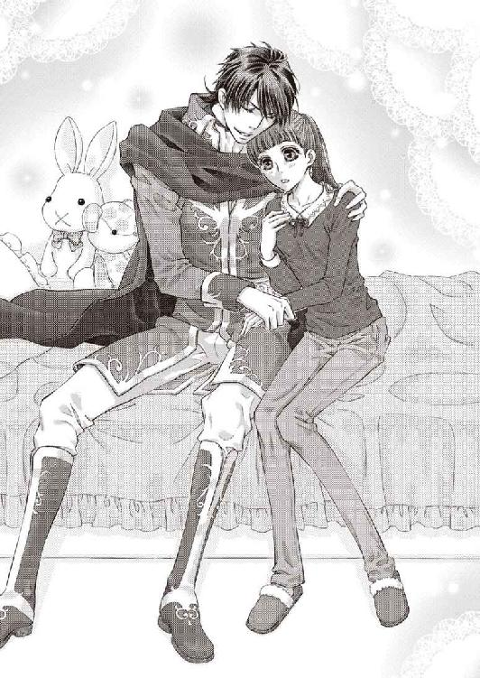

| 妖精騎士～フェアリーナイト・ラブ・ロワイヤル～ (マリーローズ文庫) | |
| 桑原伶依 | |
| (2012) | |
この作品は縦書きでレイアウトされています。
また、ご覧になる機種により、表示の差異が認められることがあります。
一部の漢字が簡略字で表示されていることがあります。
この作品はフィクションです。
実在の人物・団体・事件などに
一切関係ありません。
玄関のドアを開くと、ライラックの甘い香りが漂ってくる。自宅の前庭に植えられている、樹齢四十年を越すライラックの樹が、今年も薄紫の上品な花をつけたからだ。北海道では五月初旬に咲き始める花だが、この辺りでは半月くらい開花が早い。
この春高校二年生になった神島サラは、ライラックの香りを嗅ぐたび、大叔母──神島葉子を思い出す。
前庭に植えられているライラックは、葉子が最も大切にしていた庭木だ。
植物を愛し、育む緑の手を持っていた葉子は、実年齢より十歳以上若く見える、美しい人だった。いい縁談はいくつもあったそうだが、植物たちが気がかりで実家を離れられなかったのか、昨年五十二歳の若さでこの世を去るまで、一度も結婚していない。
この家は、祖父が結婚したとき、曽祖父が建て替えた二世帯住宅だ。葉子は長兄に当たる祖父とは十五歳も歳の離れた五人兄妹の末っ子で、新築当時は十歳だった。長姉はすでに嫁いでいたから、ともに暮らしていた家族は、両親と長兄夫婦、次兄、次姉、計七人。
家族の中で一番仲がよかった次姉は、葉子が十四歳のときに結婚し、この家を出て行った。淋しがる葉子に、ライラックの鉢植えを託して。
葉子は次姉からもらったライラックを、家の東南に位置する前庭に移植し、死ぬ間際まで心の拠り所としていたのだ。
葉子の話によると、前庭の奥の東南角地には、家を建て直すときに北側から移植した、樹齢三百年を超す見事な枝垂れ梅もあったらしい。
梅は幸運と長寿のシンボルで、この枝垂れ梅の老木は、代々神島家の子孫を見守ってきた守護木だったそうだが──残念なことに移植から七年目、葉子が十七歳になった年の秋に、狂い咲きして枯死してしまった。
現在はそこに、『純粋さのシンボル』であるハクモクレンが植えられている。
正面の庭に植えたモクレンは、豊かさを引き寄せ、心安らかに暮らせるそうだが、裏庭に植えた場合は、莫大な財産が蓄積していくシンボルツリーになるそうだ。
モクレンは邪霊の霊障を封じ込める邪気祓いの樹で、曽祖父がこの家を建てたとき、裏鬼門を守護するように、南の主庭と裏庭の境目に、紫色の花を咲かせるモクレンを植えた。
十日早く咲き始めたハクモクレンはすでに散ったが、モクレンは今が盛りと花を咲かせている。
主庭のガーデンテーブル近くには、西洋ハシバミが植えられている。これは家を新築した翌年に生まれた、サラの父親の誕生記念樹だ。
西洋ハシバミは、鉢植えなら数年で収穫できるが、地植えにすると実が生るまでに十年以上かかるらしい。実際に初めて結実したのは、干支を一回りしてからだったという。
主庭の西洋ハシバミが実をつけ、葉子がそれを収穫すると、母がヘーゼルナッツ入りのパンやお菓子を作ってくれる。
サラは幼い頃から、この家の女家族と美しい庭を眺めながら、母手作りのお菓子とお茶を味わうのが好きだった。
南の主庭はバラ園になっていて、冬でも四季咲きのバラが花をつけることがある。
東南の前庭と主庭の境にある、赤い蔓バラのアーチは、次兄が結婚して独立する際、葉子が兄嫁にもらった苗木で造ったものらしい。
葉子はユリも大好きで、前庭や門周辺の路地庭には、開花期の違うユリを何種類も植えている。それらが春から夏にかけて次々と咲いていく。
今は鉢植えの黒ユリや、地下茎で増える小さな稚児ユリが花を咲かせているだけで、独特の強い芳香を放つ大輪のユリが玄関先を彩るのは、もう少し先だ。
門から玄関までのアプローチや玄関ポーチには、色とりどりのチューリップのプランターを並べている。これは亡くなった葉子のあとを引き継いで、サラが球根を植えて育てた。
チューリップが終わっても、四季折々に咲く花や、開花期の長い花たちに並べ替え、開花期でないものは裏庭や主庭の奥に移動するので、玄関先はいつも賑やかだ。
玄関内では、洋ランの鉢植えが美しい花を咲かせている。
葉子は春夏秋冬、それぞれの季節に咲く洋ランを集め、大切に育てていた。夏咲きの洋ランは冬越しさせるのが難しいため、ガラス温室まで用意していたくらいだ。
サラは葉子に、ガーデニングの楽しさや、植物を育てるコツを教えてもらった。
葉子が亡くなってからは、この家の広い庭に植えられた植物も、鉢植えも、掘り上げて保管していた球根も、すべてサラが愛情こめて育てている。
ガーデニングの主な仕事は、草取り、水やり、虫取りだ。庭木にはスプリンクラーで散水できるが、害虫や病気に気を配り、枯れた花を摘み取り、落ち葉を掃き寄せてきれいにしなければ、美しい庭は保てない。
サラはポニーテールにした天然茶髪のストレートロングへアを、二つに折ってシュシュでまとめ、庭をきれいに掃除した。
かつては葉子と二人でしていたことを、今は一人で全部やっている。
「これでよし。ライラックさん。今年もきれいに咲いてくれてありがとう。悪いけど二枝切らせてね。あなたのことが大好きだった葉子さんに、お供えしてあげたいの」
仏壇に花を供えるため、ライラックに話しかけながら枝ぶりを見て切っていると、妹たちが家から出てきた。
中学生になったアンナが、呆れた顔でサラを見て言う。
「お姉ちゃん、また花に話しかけてるの？ すっかり大叔母様みたいになっちゃって......。ガーデニングにばかり夢中になってると、カレシの一人もできないよ？」
「カレシにしたい人なんていないもの」
「高望みしすぎなんだって」
そういうアンナは、すでに付き合っている男の子がいるそうだ。
小学二年生のレミは、呆れているというより、不思議そうな顔をしている。
「花にはなしかけても、へんじしてくれないのに」
「返事はしてくれないけど、ちゃんと聞こえてるのよ。『きれい』って褒めてあげると喜んで、きれいな花をたくさん咲かせてくれるんだから」
ライラックは東北以北の気候に適した花木で、本来この辺りでは、これほど花つきがよくないらしいが──土壌が合うのか。この辺りの気候に合う品種なのか。それとも、本当に賞賛されて喜んでいるからなのか。神島家の庭に咲くライラックは、寒冷地並みに花穂が大きく、花つきもいい。
サラにとって、大叔母・葉子が残してくれた植物たちは、大切な宝物だ。
「これからはわたしが、この美しい庭を大切に守っていく。そう決めたの」
サラが決意を口にしたとき、ライラックの花が微笑むように揺れた。
ゴールデンウィークを間近に控えた平日の朝、サラはいつものように学校へ行くため、家の外へ出た。甘い香りに包まれるこの瞬間が、とても大好きだ。
大きく深呼吸して、香りに引き寄せられるように右前方に視線を向けると、薄紫の花を咲かせたライラックが、清々しい春の青空に美しく映えている。
「行ってきます」
機嫌よくライラックの樹に挨拶したサラは、長い髪をふわりと風になびかせながら、門のほうへ向かおうとした。そのとき、突然回転性の眩暈がして、目の前が真っ暗になり、急激に意識が遠ざかっていったのだ。
いったいどのくらい気を失っていたのだろう？
ライラックの甘い香りがする。
ということは、まだ自宅の玄関先に倒れたままなのか？
サラはゆっくりと目を開き──予想と違う現実に驚愕した。
「......ここ、どこ......!?」
ベッドの四方を、薄いカーテンが囲んでいる。保健室の安っぽいカーテンではなく、ロマンティックなお姫様ベッドの天蓋だ。
身につけているのは朝と同じ制服で、靴だけ脱がされている。
天蓋越しに様子をうかがうと、窓辺のソファに誰かが座っているのが見えた。
人影がゆっくりと上品に立ち上がり、こちらへ近づいてくる。
（女の人......？）
シルエットは、長身スレンダーな、ロングドレスを着た大柄のマダムに見えたが──。
「気がついたようですね、サラ。ご気分はいかがですか？」
やわらかいテノールは、紛れもなく男性の声。
思いきって天蓋を開けると、彫りの深い中性的な顔立ちをした、穏やかそうな美形の外国人男性がそこにいた。大柄なマダムに見えたのは、ロングドレスのような白いローブの上に、緑柄の縁が入った白いストールを羽織っているからだ。年齢は、おそらく三十代くらい。瞳は最上級のサファイアのような紫がかった青。額にはティアドロップ型アメジストのラリエットをつけ、薄紫に染めた長い髪を後ろで緩く三つ編みにしている。
全体的なイメージで彼が何者か推察するなら、『ファンタジーの神官っぽいスタイルをしたコスプレイヤー』といったところか？
甘い香りの正体は、部屋のあちこちに飾られている、ライラックの鉢植えだ。
室内の床は、高級ホテルのロビーみたいに、濃い紫地にライラックの模様が入った上品なカーペットが敷き詰めてあった。
白っぽい壁の窓にかかっているのは、ゴージャスな紫系のライラック柄のバランスつきドレープカーテンと、白いレースカーテン。家具や調度品も、すべて白っぽいヨーロピアン調のアンティークスタイルで統一されている。
サラは瞬時にそれらを観察し、日本語で声をかけてきた外国人男性に尋ねた。
「あなた、何者？ どうしてわたしの名前を知っているの？」
警戒しているサラの気持ちを和らげようと、外国人男性が優しい微笑みを浮かべて言う。
「私の名はクリストファー。ライラックのシャーマンです」
やはりコスプレイヤーだったようだ。
「すみません。ホントの名前、教えてもらえます？」
彼は不思議そうに首を傾げ、おっとりした口調で答えた。
「本当の名前ですが......？」
「......いや、だから......仮にそれが本当の名前だったとして、あなたはどちらのクリストファーさんですか？ ファミリーネームは？」
「ですから、『ライラック』がファミリーネームです。学名は『シリンガ・ブルガリス』。和名は『紫丁香花』。フランス名だと『リラ』」
サラは唖然としながら、心の中で呟く。
（......コスプレイヤーというより、イッちゃってる人だったみたい......）
どう言葉を返すべきか悩んでいると、ライラックの花が一斉に揺れ、大勢の女性が笑いさざめく声が聞こえてきた。
『サラったら、まだ状況が飲み込めていないようよ』
『異世界に召喚されたこと、ちゃんと理解できるのかしら？』
『理解してもらわないと困るわ。サラだって、この世界のクイーンにならなければ、もとの世界へは戻れないんですもの』
なんだか不穏なセリフを聞いて動揺し、サラは辺りを見回しながら叫んだ。
「あなたたち、誰!? いったいどこにいるの!?」
『ここよ、サラ。ここにいるわ』
『わたしたちは、ライラックの花』
「花がしゃべるわけないじゃない！ きっとどこかに、スピーカーか何かあるはず......」
ベッドから降りて、鉢植えの周りを探してみたが、それらしいものは何もない。
『ライラックの花だと言っているでしょう』
『疑い深いのねぇ。サラは......』
「......本当に、花がしゃべってる......!?」
明らかに、音源はライラックの花だとしか思えなかった。
クリストファーが真面目な顔で言う。
「彼女たちは、ライラックの花が持つ女性性──アニマと呼ばれる、人間の男性が持つ女性の意識みたいなもの。私はライラックの花が持つ男性性──アニムス。我々は違う形で現れた同一の存在で、いわゆるライラックの妖精──フェアリーです。この世界の礎であり、生命を育む役割を持つアニマは花の姿をしていますが、悪しきものと戦うために生まれたアニムスは、人の姿をしています」
到底信じられない話だが。
「まだお疑いのようですね。我々がフェアリーだという証拠に、今すぐ鉢植えを大きくして、満開の花を咲かせてご覧に入れましょう」
クリストファーがそう言った途端、鉢植えのライラックたちが急激に枝を伸ばして成長し、新たな花穂をほっこりと膨らませ、次々に咲き綻んでいく。
「信じていただけましたか？」
信じるしかないだろう。これが夢ではないならば。
サラは頷き、緊迫した硬い声でクリストファーに尋ねた。
「さっきライラックの花が、『異世界に召喚された』とか、『この世界のクイーンにならなければ、元の世界へは戻れない』って話してたけど、いったいどういうことなの？」
クリストファーは落ち着いた声で事情を話し始める。
「サラをこの世界へ召喚したのは私です。妖精の森──フェアリーフォレストと呼ばれているこの世界は、植物のパワーで創造された、人間界と重なり合って存在する別の世界で、通常二つの世界を行き来することはできません。二つの世界をつなぐゲートを開けるのは、今のところ、シャーマンであるこの私だけ。ゲートを通って向こう側へ行けるのは、新たなクイーンだけです」
「さっきから『シャーマン』って自称しているけど、そもそもシャーマンって、どういう存在なの？」
サラの問いに、クリストファーはふと悲しげな顔をした。
「シャーマンは、この世界の神官。神の声を聞き、神の意思を実行する者です。この世界の創造神──ヤハウェと、ヤハウェによってこの世界に召喚された運命の女神──デイムフォーチュンに選ばれ、キングとなるべくして最初に生み出されたフェアリーでした。私のクイーンとなったデイムフォーチュンが、もとの世界へ帰ったまま、こちらの世界へ戻れなくなり、キングの力を失ったため、退位してシャーマンになったのです」
「私のクイーンって......ほかにも、この世界に来た人間の女性がいたの？」
「はい。神島葉子という女性です」
昨年亡くなった大叔母の名を挙げられ、サラはハッとした。
「葉子さんが......あなたのクイーン......？」
「ええ。葉子と私は、深い愛と信頼で結ばれた、唯一無二の伴侶でした。葉子がいなくなった今でも、私は彼女だけを愛しています」
おそらく葉子も、クリストファーだけを愛していたのだろう。
葉子は朝な夕なライラックに話しかけ、とても大事にしていた。今際の際まで案じていたほどだ。『慕っていた姉にもらった』というだけで、あそこまで入れ込めるのが不思議だったが、『ライラックは愛する人そのものだから特別だった』というなら納得できる。
（葉子さんが一度も結婚しなかったのは、『異世界に、忘れられない伴侶がいるから』だったのね。こんな美形と恋をして、嫌いで別れたわけじゃないなら、どんなにいい縁談が舞い込んでも、結婚する気になれなくて当然よ）
クリストファーは遠い目をして、過去の経緯を語り始めた。
「葉子は、かつて神島家の庭に植えられていた枝垂れ梅の老木が、この世界に召喚したデイムフォーチュン。この世界の運命を握る女神でした。樹齢三百年あまりの枝垂れ梅は、あなた方の先祖に当たる女性を娶り、永きに渡ってこの地に根を張り、神島家の子孫を見守ってきたのです。四十三年前、大地から切り離され、別の場所へ移されなければ、もうしばらく彼の時代が続いたでしょう」
サラはふと思い出して口を挟んだ。
「確かその枝垂れ梅って、もともとうちの庭の北側に植えられていたんでしょう？ でも、『家を二世帯住宅に建て替えるとき、その辺りを駐車場にすることになって、更地に戻す二年前から根回しして、工事が終わって、前庭の東南角地に移植した』って、葉子さんから聞いてるわ」
根回しとは移植するための下準備で、移植する前に根を切断し、樹周辺の根に、新たな細根を発生させておくことだ。パワーショベルで周囲の土ごと掘り上げてからは、藁で織った筵で包んで根を保護し、土を落とさないよう縄で巻いて、移植するまで管理する。
大事な樹だから、造園業者に『慎重に移植してほしい』と頼んだらしいが、どんなに慎重に移植しても、根を切断して無理やり掘り上げるわけだから、必ず再び根づくという保証はない。何百年もその場所に根を張っていた老木なら、なおさらだ。
「結局移植のダメージでしばらく花を咲かせないまま、枝垂れ梅は七年目──葉子さんが十七歳になった年の秋に、狂い咲きして枯死したそうね」
サラの言葉に、クリストファーが、枯死した老木を悼むような顔で頷いた。
「はい。すっかり弱って、この世界を支えきれなくなったため、最期の力を振り絞って葉子を召喚し、世界の運命を託したのです」
葉子が召喚された事情は解ったが、どうも釈然としない。
「枝垂れ梅が枯死したから、あなたに代替わりしたのよね？ でも、あなたは少しも枯れそうに見えないんだけど、どうしてわたしが召喚されたわけ？」
クリストファーは自分の力が及ばぬことを嘆くように、悲しげに目を伏せた。
「私には、フェアリーフォレストの創造神である枝垂れ梅ほどの力はありません。一人で世界を支えていくことに限界を感じました」
「枝垂れ梅が、この世界を創ったの？」
「正しくは、枝垂れ梅がこの世界の原型を創り、世界を託された葉子が、すべてのものに名前をつけて世界の理を設定し、葉子と私が力を合わせて、現在の形に造り上げました」
なんだか話が大きくなって、サラは戸惑い、疑問を口にする。
「いったいどうやったら、世界を創れるわけ？」
クリストファーはしばし考え込み、思考をまとめながら、フェアリーフォレストの創世について語り始めた。
「それは神島家の敷地内に、特殊な磁場があったからです。葉子はそれをパワースポットと呼び、のちに『聖なる丘──セイクリッドヒル』と名づけました。セイクリッドヒルは、そこに存在するものの力を驚異的に増幅させます」
「そんな磁場がうちにあるの？」
「ええ。少し駐車場にかかる形で、北側の路地庭に存在しています」
「そういえば葉子さん、『排気ガスがかかると困るから、車はバックで止めないで』って、いつも言ってたわ。てっきり路地庭のプランターや鉢植えを心配しているんだと思っていたけど、もしかして、セイクリッドヒルにかかると困るから......？」
サラの問いを肯定するように、クリストファーが静かに微笑んで頷く。
「そうです。枝垂れ梅は今から三百年あまり前、そこに植えられ、セイクリッドヒルのエナジーを吸収しながら成長し、百年ほどで自我に目覚めました。そして、人間の女性に恋をして、こう思ったのです。『どうして私は人間ではないのだろう。人間になって、彼女を妻にしたい』その想いが、枝垂れ梅が人として生活できる世界を生み出し、彼はついに想いを遂げました」
「枝垂れ梅が妻にした女性が、神島家のご先祖様だったの？」
「直系ではありませんが、神島家の血筋の方です。彼女が『二人きりでは淋しい』と言い、植物に話しかけている彼女を見て、枝垂れ梅は『ほかの植物とも会話ができるといいのに』と思いました。すると、植物から女性の声で答えが返るようになり──やがて枝垂れ梅のもとへ集う昆虫たちも、彼が願った通り、人の姿に変身するようになったのです」
世界は枝垂れ梅の願望によって創られ、進化していったということか。
「葉子さんが召喚されて、あなたが生まれるまで、人の姿をした植物のフェアリーは、枝垂れ梅だけだったの？」
「いいえ。神島邸の建て替え工事が終わって、新たな庭が造成されてから、枝垂れ梅が、悪しきもの──イーヴルスピリッツと戦うために、フェアリーナイトの原型となった、ほかの植物のフェアリーのアニムスたちを創り出していました」
「イーヴルスピリッツって、なんなの？」
「原初の世界には存在しなかった、邪悪な精霊です。工事のために枝垂れ梅が掘り起こされ、それまで彼が吸収していたセイクリッドヒルのエナジーは、この土地一帯に流れ出し、神島家の庭に生息する植物や節足動物に特別な力を与えました。一時は砂漠と化したこの世界が、再び緑あふれる大地に戻ったときには、イーヴルスピリッツも生まれていたそうです。力の強いイーヴルスピリッツは、やがて妖魔──デーモンとなって、この世界の平和を脅かすようになりました」
「要するに枝垂れ梅は、神島家の敷地内にある磁場を封じていた、掘り起こしてはいけないご神木だったのね？」
「ええ。移植のダメージを負った体でデーモンと戦っていた枝垂れ梅は、自らの死期を悟り、小説家を目指していた神島家の末娘──当時十七歳だった葉子にこの世界を託しました。葉子が考えた『フェアリーナイト』の設定を盗み見て、『彼女なら、この世界の救世主になれる』と思ったのでしょう」
サラは葉子の作品をすべて読んでいるが、妖精騎士の話など、彼女の著書にはない。小説にはしなかったのだろうか？
クリストファーは静かに微笑み、話を続けた。
「枝垂れ梅が生み出した植物のフェアリーのアニムスたちは、枝垂れ梅の意志に応じて、彼そっくりの人型で現われ、彼の手足となって働く傀儡でした。葉子はアニムスたちに名前をつけ、固有の容姿や性格・能力などを与えて、魂を吹き込んだのです。自我に目覚めたアニムスたちは、強い意志と個性を持つフェアリーナイトに生まれ変わり、フェアリーキングに選ばれた私は、葉子が心に描いたイメージを具現化し、世界を進化させました。葉子がいなくなった今は、私一人で世界を維持する真理を支えています。世界を護るだけで精いっぱいで、悪しきものたちと戦うことができません。そのため、この世界の力の源が存在する聖地を、毒蜘蛛のデーモン、デューク・ベノモスに侵略されてしまいました」
「毒蜘蛛のデーモン、デューク・ベノモス......？」
「はい。デューク・ベノモスは、我々を食害する害虫──イーヴルスピリッツを支配しているデーモンで、セイクリッドヒルを占拠し、そこにある、この世界の力の源──セイクリッドエナジーを我が物にしたのです。聖地を取り戻すため、フェアリーナイトたちが、エスクワイアとともに、ウォーリアーズを率いて闘っていますが──ベノモスには、フェアリーキングでなければ太刀打ちできません」
また理解できない言葉を使われ、サラは首を傾げて聞き返す。
「フェアリーナイトは『妖精騎士』、ウォーリアーズは『戦士たち』よね？ エスクワイアは何？」
「日本語では、従う騎士と書いて『従騎士』。一人のナイトと主従契約を結び、公私共に付き従い、戦場までナイトを運び、ともに戦う有翅昆虫です。『主君のそば近くで仕える近侍を兼ねたウォーリア』とお考えいただけばよろしいかと」
「つまり、お殿様に仕える小姓みたいなものね？」
「まあ......そんなところですが。この世界の小姓──ペイジは、我々が葉や蜜を食料として与える代わりに、受粉を手助けしてくれる共生関係の有翅昆虫で、主に伝令や使い走りを務め、飛行が不得手な虫たちは、女性の虫──メイドとともに、家事などの雑用をしています。イーヴルスピリッツを捕食する益虫や、硬い鎧と武器を持つ甲虫たちは、『ウォーリア』として、エスクワイアを従えたフェアリーナイトとともに戦っています。植物のフェアリーと、味方の昆虫たちを総称して、ホゥリィスピリッツと呼ぶのです」
「なるほど。植物にとって敵か味方かで、属性が分かれるわけね？」
クリストファーは「ええ」と頷き、深刻な顔で告白する。
「ホゥリィスピリッツを捕食する毒蜘蛛のデーモン、デューク・ベノモスは、この世界のキングになろうと目論み、セイクリッドヒルに続いて、このライラック・サンクチュアリも狙っています。葉子が夢枕に立って危険を知らせてくれた日、サラが私の前で宣言しました。『これからはわたしが、この美しい庭を大切に守っていく』と。だから私は、サラこそ葉子が予言した、『フェアリーフォレストの危機を救う新たなデイムフォーチュン』だと確信し、この世界に召喚したのです」
それを聞いて、サラはギョッとした。
「ちょっと待って！ 確かにそう言ったけど......わたしは『日常生活の中で、庭に植えられている植物の世話をして、美しい庭を保つ』という意味で言っただけよ！ 異世界に召喚されるなんて、想定外だわ！」
反論を遮るように、クリストファーが訳知り顔でサラに言う。
「この世界がイーヴルスピリッツに侵略されたら、神島家の庭も無事ではすみませんよ。その証拠に、アジサイが枯れたでしょう？」
「確かに、葉子さんが亡くなったあと、路地庭に植えていたアジサイが、突然枯れてしまったけど......」
「ハイドランジアナイトが、セイクリッドヒルを巡る戦いで戦死したからです」
「ってことは、あなたたちがベノモスに負けてしまったら、うちの庭木も鉢植えも、全滅するってこと？」
「ええ。神島家の庭が更地に戻されたとき、この世界も砂漠と化したことや、戦死したフェアリーナイトの植物が枯れたことから考えて、庭木は確実に枯れると思われます。デーモンの穢れたオーラが漂っていますから、二度と草木の生えない死の庭になる可能性が高いでしょう。おそらく室内の切花や鉢植えも、すぐに枯れてしまいます」
さすがにそれは問題だ。切花もダメなら、野菜や果物もすぐに腐ってしまうに違いない。
最悪の事態を想像して不安を感じていると、クリストファーが畳みかけるように熱弁を揮う。
「フェアリーフォレストがデーモンフォレストになる前に、なんとしても、ベノモスを倒さなければなりません。私は新たなフェアリーキングを誕生させる切り札として、サラをこの世界に召喚しました。どうか新たなフェアリーキングとともに、この世界を守ってください！ 明るい未来を切り開けるのは、デイムフォーチュンであるあなただけです！」
サラは困惑しつつも、協力せざるを得ない気分になり始めている。何せ『クイーンにならなければ、もとの世界に戻れない』のだ。
「新たなフェアリーキングを誕生させるって......具体的に、どうすればいいの？」
「それはあとでお教えします。まずは、キング候補のフェアリーナイトたちに会っていただけますか？」
「いいわ。うちの植物たちがどんな顔してるのか、ちょっと興味があるもの」
サラが王候補との面会を快諾すると、クリストファーは部屋のドアを開けて言う。
「お目通りを許された。中へ入るがよい」
どうやらすでに、室外で待機していたようだ。すぐに五人の妖精騎士が入室し、サラとクリストファーの前に一列に並ぶ。
いずれ劣らぬ美形ぞろいで、サラは内心『キャー！』と叫びたくなった。でも、古くから続く神島家の長女として躾けられた、育ちのよさがそれを許さない。
クリストファーが、まず右端に立っている妖精騎士を紹介してくれる。
「彼はオーキッドナイト・サー・アレックス」
オーキッドとは、洋ランのことだ。
洋ランの妖精騎士アレックスは、黒い短髪に黒い瞳の東洋系美青年──と思ったが、瞳はスギライトのような、深く濃い紫色だ。不敵な面構えをした、スポーツマンふうの長身細マッチョで、年齢は二十歳前後に見える。
（なんか、スポ根マンガの主人公のライバルみたい......！）
でも服装は、ファンタジーの騎士装束。赤茶でパイピングした淡紫の長袖・立襟チュニックに、白に近い青藤のパンツ。濃紫のブーツとマント。マントは洋蘭の紋章入りブローチで左肩に留め、首には鋼板が付いた革の頸甲を着けている。
アレックスが一歩前へ出て、サラに右手を差し出した。
「アレックスだ。よろしく頼む」
キリッとした男らしい美形騎士に、うっとりするような低めの美声でそう言われると、さすがに胸がときめく。
でも平静を装い、「よろしく」と気取って微笑み、差し出された手を握り返した。
クリストファーが、続いて右から二番目の人物を示して言う。
「彼はローズナイト・サー・エドワード」
バラの妖精騎士エドワードは、アレックスより若干年上に見える。緩くカールした長い髪は、ストロベリーブロンド。睫毛の長い切れ長の大きな瞳はエメラルドのような美しいグリーン。彫りが深く、鼻筋の通った、ギリシャ彫刻みたいなたくましい美形だ。
赤いフリルドレスシャツの胸元からは、鍛え上げた筋肉が覗いている。胸板が厚くて動きにくいから胸元を大きく開けているのか、肉体美を見せつけたいから開けているのかは、本人に聞いてみないと判らない。
サラには太いゴールドチョーカーの派手なアクセサリーにしか見えないが、首には防具でもある金属襟をつけている。パンツは紫。ウエストには、赤い紐でフロントを編み上げた黒いレザーコルセットベルト。ブーツもベルトとお揃いだ。
（......なんか、『妖しいフェロモン出まくりのビジュアル系』って感じ...）
セクシーな超絶美形エドワードは、サラを見つめて妖艶に微笑み、跪いて甘い声で囁く。
「ずっとお会いしたかった......。私のデイムフォーチュン。あなたが庭に咲く私を『美しい』と賞賛してくださるたび、この胸は歓喜に打ち震えていました。どうか私のことは、親愛の情をこめて『エド』とお呼びください」
「よろしく、エド」
握手のつもりで手を差し出すと、エドワードは恭しくサラの手を取り、手の甲にそっと口づけ、じっとサラを見上げて情熱的に訴える。
「お慕いしています、サラ。私のデイムフォーチュン」
デフォルト設定が『口説く』になっているらしいエドワードが後ろへ下がると、クリストファーが、今度は中央に立つプラチナブロンドの青年を示して言う。
「彼はマグノリアナイト・サー・フレデリック」
マグノリアといえば、中国原産のモクレン。
だから赤紫のロング丈チャイナコート、白に近い淡紅色のパンツ、茶色いカンフーシューズという服装なのか？
フレデリックは二十代前半に見える顔立ちで、西洋系なのか、東洋系なのか、判然としない。白に近いプラチナブロンドと、パープルサファイアの瞳孔を内包したルビーの瞳が嵌め込まれているような、切れ上がった両目が印象的だ。
（......もしかして、アルビノ？）
アルビノ──先天性色素欠乏症だと、ごく稀に、赤い瞳孔を持つレッドの瞳や、血管が透けてバイオレットに見える瞳を持つ者も出現するらしい。薄紫の髪をしたシャーマンもいるくらいだから、この世界には、なんでもアリなのかもしれないが。
サラはてっきり、フレデリックも挨拶してくれると思って、アプローチを待っていた。
しかし、いつまで経っても直立不動のまま反応がない。
「よろしくね」
こちらから挨拶して手を差し出したが、フイとそっぽを向かれてしまった。
（き......嫌われてる？）
裏庭の入口にあるモクレンも、前庭にあるハクモクレンも、大切にしているつもりだ。
なのに、嫌われているなんて切ない──と思ったが、どうやらそうではないらしい。横を向いた白い頬が紅潮している。
（すごい恥ずかしがり屋さんなのね......）
結局フレデリックとは握手しないまま、次の妖精騎士を紹介された。
「彼はリリウムナイト・サー・ユリシーズ」
リリウムというのは、ユリ科ユリ属の学名だ。
ほかの騎士たちより少し小柄でスマートなユリシーズは、美少年顔で、一番若そうに見える。
肩先で揺れるウェービーヘアは、艶やかで光沢のある美しいゴールデンブロンド。瞳の色は、透き通ったアンバー。金モールで縁取りされた、将校の軍服みたいな白い衣装をまとった姿は、華やかな大輪のカサブランカみたい。
（きゃーっ！ 白い王子様っっ！）
エレガントなユリの貴公子は、胸に手を当て、優雅に腰を折って挨拶する。
「お初にお目にかかります。お会いできて光栄です、サラ。このユリシーズ、あなたのためなら、どんな苦労も厭いませぬ。必ずや試練を乗り越え、この世界を護るキングとなってみせましょう」
「よろしくお願いします、ユリシーズ」
彼の高貴さに当てられて、サラもつい丁寧な口調と物腰になってしまう。
最後に紹介されたのは、一番左に立っているあでやかな美形だ。年齢は、よく判らない。顔は二十代前半に見えるが、もっと年齢を重ねているような落ち着きが感じられる。
「彼はヘイゼルナイト・サー・メルヴィン」
中性的な顔をしているメルヴィンの衣装は、まるで宮廷貴族のよう。ジュストコールと呼ばれる丈の長い上着は榛色で、胸元と裾に金糸でリーフ柄の刺繍が施され、カフスも金糸で縁取られている。カフスや裏地は黄緑色で、スカーフは黄色。金糸の刺繍で縁取られたジレは象牙色。キュロットは白。ブーツは赤褐色。
後ろで一つに束ねた髪はハニーブロンドで、前髪に一筋、赤紫のメッシュが入っている。
瞳はゴールド、ダークグリーン、イエローブラウン、ライトブラウン、アンバーなどが混じりあったヘイゼル。不思議な色合いだ。
（......なんか、エドワードとは違うタイプのフェロモン系ね）
押しの一手で口説き落とそうとするエドワードと違って、こちらは悩ましく微笑みかけて誘惑し、相手に口説かせるよう仕向けるタイプ。
魅惑的な美しさに見惚れていると、色っぽくクスリと笑われた。
「初めまして、サラ。僕はフェアリーナイトではなく、ウィザードナイト。唯一マジック──魔法が使えるナイトだ」
そういえば──榛の杖は魔法使いのお約束アイテムじゃないか。
なるほど、と思っていると、見透かしたように補足が入る。
「僕がウィザードなのは、『西洋ハシバミだから』ではなく、『神島家の跡取りの誕生記念樹だから』だよ。命が生まれた喜びと、幸福を願う祈りをこめた特別な樹だから、植樹されて十二年目に、マジックが使えるウィザードナイトになったんだ」
「そういえば葉子さんから、『十二年経って、ようやくハシバミが実をつけた』って聞いたわ。何か関係あるの？」
「ああ。一人前の樹に成長したから、サラの世界では結実し、この世界ではウィザードナイトに昇格した」
「毎年おいしくいただきました。ありがとう」
そう言って握手の手を差し出すと、また笑われてしまった。
クリストファーが期待をこめてサラに問う。
「さて。この中に、お気に召したナイトはいますか？」
「いたらどうなの？」
逆に聞き返すと、優しげな美貌のシャーマンは、神秘的なロイヤルブルーの瞳で、じっとサラを見据えて答えた。
「お気に入りのナイトを一人選んで、今すぐにでもフェアリーキングにしてください。キングになったナイトは神格を得て、格段にパワーアップするのです」
「キングにするって......いったいどうすれば、そんなことができるわけ？」
「契ればよいのです」
なんだか今、さらっととんでもないことを言われたような気がする。
「......ちぎるって......花びらを千切るとか......？」
「そんなわけないでしょう。サラの世界で言うところの、セックスをするのです。デイムフォーチュンがたった一人のナイトを選び、ナイトに愛され、一体化すれば、そのときナイトは自然にキングに変化します」
どうやら五人の妖精騎士に引き合わされたのは、セックスする相手を選ぶためのお見合いだったらしい。
「ムチャ言わないで！ わたし、まだバージンなのよ!?」
「存じています。デイムフォーチュンになれるのは、穢れなき処女だけ。子宮は新たな生命が誕生する特別な場所──神の領域です。破瓜の瞬間、デイムフォーチュンはクイーンに生まれ変わり、ナイトは新たなクイーンの子宮に自らのエナジーを注ぎ込むことで、神の力を授かり、キングに生まれ変わるのです」
サラは愕然としてしまった。
（わたし、この五人のうちの誰かに処女を捧げるために、この世界に呼ばれたんだ......）
まだ恋すら知らない少女にとっては過酷な運命だ。
「冗談じゃないわ！ デイムフォーチュンだかなんだか知らないけど、どうしてわたしが、この世界の生贄にされなきゃならないの!? どうしてわたしなのよ!?」
思わず叫んでしまったサラに、アレックスが静かな声で言う。
「それは、ここにいる俺たち五人、全員がサラを愛しているからだ」
エドワードも甘いため息をこぼしながら囁く。
「愛しいデイムフォーチュン。わたしはあなたのために咲いたバラ。ほかの誰かをクイーンと呼ぶくらいなら、潔く散りましょう」
ユリシーズも、真剣な顔で告白する。
「我が心には、あなたしかおりませぬ。あなたでなければならないのです」
フレデリックも顔を真っ赤に染め、横を向いたまま、低いウィスパーボイスでボソリと呟く。
「......好きだ。サラ」
最後にメルヴィンが、心揺さぶる声で語りかけてくる。
「春、夏、秋、冬。サラはいつも変わることなく、真心こめて、僕たちのために尽くしてくれたね。そんな君を愛しく思うのは当然だ。生贄だなんて、とんでもない。僕たちは、愛する君の世界と表裏一体をなす、この世界を護るために、デーモンと戦う力がほしいだけ。君が誰をキングに選んでも、君のナイトとして生涯を終える覚悟はできているよ。だから君は、君の心に従って、誰か一人を選んでほしい」
タイプの違う五人の美形に、こんなふうに言い寄られる日が来るなんて、サラは想像もしていなかった。しかもそれは、自宅で世話をしている花や木の妖精なのだ。こんなこと、普通なら絶対にあり得ない。
そのうえ、彼らの世界を救うため、異世界に召喚されて。もとの世界へ戻るには、妖精騎士を一人選んで、処女を捧げなければならないときている。相手がスペシャル級の美形ぞろいなのがせめてもの救いだが、これを運命と割り切れるほど、サラは大人じゃない。
「......誰かをキングに選べと言われても、あんまり突然すぎて、どうしたらいいか判らないの。もう少し、考える時間をくれない？」
サラの言葉に、クリストファーが頷いた。
「そうですね。セイクリッドヒルを侵略されて焦るあまり、少し急ぎすぎたかもしれません。とりあえず、ナイトたちと付き合いながら、じっくり考えてみてください」
妖精騎士たちも、サラの言い分に納得した──ように見えたが。
「頭で考えたところで、恋などできぬ。その頑なな心、私の情熱で解かせてみせよう」
エドワードがいきなりサラを抱き上げ、部屋を飛び出していく。
「きゃあーっ！ 何するのっ！ 放してっ！」
サラは驚き、暴れたが、鍛え上げた肉体美は伊達ではない。ガッシリとサラをホールドしたまま、ビクともしなかった。
「攫いたいほど愛しいあなたを、離すことなどできましょうか」
余裕の笑みでそう返したエドワードは、よく通る艶のある声を張り上げて、女性の名を呼ぶ。
「マリリン！」
すると前方に、左肩を黒いリボンで結んだ、オレンジのワンショルダーミニドレスを着た若い女性が現れた。かなりのグラマー体型で、蜂のようにくびれたウエストには、エドワード同様、オレンジ紐で編み上げた黒いコルセットベルトを着け、お揃いの編み上げブーツを履いている。ボブのゆるふわ巻き髪はライトブロンドで、瞳は鮮やかなブルー。唇は肉感的で、コケティッシュな美人だ。
グラマー美女マリリンは、夢見るようなブルーの瞳でエドワードを見て、鼻にかかった色っぽい声でおっとりと言う。
「はぁい、エド♡ 待ってたわァん♡」
グラマラスなセクシー美女は、突然巨大なオオスズメバチに変身した。
エドワードはたくましい腕でサラを抱きかかえたまま、オオスズメバチの背に乗り込む。
『行くわよォォん♡』
二人を乗せたオオスズメバチは、開いていた窓から外へ飛び出し、素晴らしい速さでどこかへ飛んでいく。
◇ ◆ ◇
エドワードの突然の暴挙に、ほかの妖精騎士たちは、事態を把握できず呆然としていた。
真っ先に我に返ったのはユリシーズだ。
「何ということだ！ あやつめ、初めからサラを力ずくで掠奪する気だったに違いない！ 追うぞ！ クロード！」
ユリシーズの声を聞きつけ、黒い燕尾服を着た執事ふうの青年が現れた。年齢は、二十代半ばくらい。柔らかくカールした短い黒髪を持つ、西洋系の長身スレンダーな美形だ。
「イエス、サー」
クロードはユリシーズに素早く駆け寄り、巨大なクロアゲハに変身する。
フレデリックも慌てて「ゴードン！」と、従騎士の名を呼んだ。
「イエス、サー！」
メタルグリーンのカンフー着に身を包んだ東洋系のたくましい青年は、巨大なカナブンに変身する。
アレックスも「ディーン！」と従騎士を呼び、アッシュブロンドにグリーンの瞳を持つ、黒っぽい戦士装束の青年が現れた。
「エドワードがデイムフォーチュンを攫った。行き先は、おそらくローズパレスだ！ 追跡するぞ！」
「イエス、サー！」
ディーンは巨大なオニヤンマに変身し、アレックスがその背に飛び乗った。
真っ先にライラック神殿から飛び出したのは、クロアゲハのクロードに乗ったユリシーズだが、猛スピードで飛翔するオニヤンマのディーンは、あっという間にクロードを追い越し、マリリンに接近する。
「勝手な真似は許さぬ！ サラを返せ、エドワード！」
大声で叫んだアレックスに、エドワードが鼻先で笑って言い返す。
「返せだと？ 貴公のものではあるまいに、返せとはおこがましい」
「サンクチュアリへ返せと言っているのだ！ 少しはサラの気持ちを考えろ！」
「考えているさ。我が愛しのデイムフォーチュンは、クイーンになることを闇雲に恐れている。強引に迫らなければ、いつまで経っても誰も選べぬであろう」
「強引に迫ったところで、決心がつくというものではない！ サラは考える時間をくれと言ったのだ！ 今すぐサンクチュアリへ引き返せ！」
「ここまで来て、引き返せるものか！」
説得しても無駄らしい。
「ならば力ずくで、引き摺ってでも連れ帰る！」
「やれるものなら、やってみるがいい」
エドワードがそう言うと、マリリンは主人の望みに応えてスピードを上げた。
しかし、飛翔能力はディーンのほうが上だ。後ろを取ってマリリンを捕らえれば、足止めできるはず。
ところが、突然邪魔が入った。勇猛なオオスズメバチの外勤蜂部隊に取り囲まれたのだ。
「ここから先は、私たちホーネットのウォーリアーズが、一歩たりとも通しません！」
「退け、ホーネット！ 女相手に、手荒な真似はしたくない」
アレックスの言葉に、女戦士たちが憤る。
「私たちを甘く見ないことね。これでもエドワード様率いるエリートトゥループスよ！」
「男ごときに負けはしないわ！ たとえフェアリーナイトでも！」
一歩も退かぬ構えで、精鋭部隊の女戦士たちが剣を向けてくる。
「退かぬとあらば仕方ない」
アレックスは腹を括った様子で叫んだ。
「オーキッドスピア！」
すると、アレックスの右手に、蘭の花を模った五枚刃のスピアヘッドを持つ槍が現れた。
アレックスはオーキッドスピアを横薙ぎに一閃し、構え直して再び叫ぶ。
「オーキッド・ペタル！」
すると、萼片に相当する上下三枚の刃が窄むように閉じて消え、花弁に相当する外向きの刃二枚が開いて、刺叉状に変形する。刺叉とは、敵を取り押さえ、動きを封じるための得物だ。
「このオーキッドスピアで一人残らず薙ぎ倒し、エドワードを追う！」
アレックスの宣言により、戦いの幕が切って落とされた。
エドワードに攫われたサラは、マリリンの上で震えていた。オオスズメバチは獲物を狩るとき、時速四十キロメートルで飛行するらしい。最大飛行速度は、時速六十キロメートルに達するとも言われている。そんなスピードで、シートベルトも安全バーもない状態で空を飛んでいるのだ。安定飛行していても、ものすごく恐い。
とにかく必死でエドワードにしがみつき、どこでもいいから地上へ下りてくれるよう祈っていると、マリリンよりもっと速いスピードで、巨大なオニヤンマに乗ったアレックスが追いかけてきた。
勝手な真似は許さぬ。サラを返せと迫るアレックスは、まるで悪者に攫われたヒロインを助けに来た、頼もしいヒーローのよう。
サラは思わずときめいて、お姫様気分でヒーロー騎士の助けを待っていたのだが──アレックスはオオスズメバチの外勤蜂部隊に行く手を阻まれ、途中で足止めされてしまった。その間に、マリリンは猛スピードで逃げるように飛んでいく。
それにしても、ここはサラの自宅の庭と重なり合った異世界のはずだが、こんなに広いなんて矛盾している。
いや──世界が広いというより、蜂に乗って移動できるほど、自分が小さくなっているのかもしれない。
「もうすぐ到着しますよ。あそこに見えるのが私の館、ローズパレスです」
エドワードが指差した方向に、紅い蔓バラの生垣に囲まれた広大な敷地に建つ、大きな白亜の洋館がある。いや──洋館というより、『バロック様式の宮殿』といった佇まいだ。
豪奢なパレスの内外を、警備の外勤蜂部隊が物々しく固めている。
マリリンは生垣を越え、ローズパレスのアプローチに着地した。
玄関周辺を護っている女戦士たちが、恭しく出迎えの挨拶をする。
「お帰りなさいませ、エドワード様。プリンセス・マリリン」
プリンセス──つまり、マリリンは王女蜂というわけだ。肩書きを聞いて、サラは妙に納得した。
（ほかの蜂は長身スレンダーなモデル体型のクール系ばかりなのに、マリリンだけグラマーなフェロモン系なのは、次代の女王蜂だからなのね......）
エドワードがサラを横抱きにしたままアプローチに飛び降りると、マリリンも人の姿に戻っていく。まるでＳＦＸを駆使した変身シーンを見ているようだ。
「ありがとう、マリリン。ご苦労だったね」
「んふ♡ エドのためなら、おやすいご用よん」
マリリンがそう言ってエドワードに投げキスし、エドワードは色っぽく微笑んで、緩やかな足取りで館の入口へ向かう。
連れ込まれたら最後、ローズパレスから出られなくなりそうな不安に襲われ、サラは慌てて訴えた。
「お願い、エドワード！ サンクチュアリへ帰して！」
エドワードは面食らったような、不思議そうな顔で言う。
「ここまで来て、今さら何をおっしゃる。つい先ほどまで、私の情熱にお応えくださったように、この胸にしかと縋りついておられたというのに」
そのセリフに、サラは思いっきりムッとした。
「怖くてしがみついていただけよ！ 蜂の背中に乗って空を飛ぶなんて、生まれて初めてだわ！ 今にもふり落とされそうで、遊園地の絶叫マシーンより怖かった！」
「遊園地の絶叫マシーン？」
「スリルを味わう娯楽のための乗り物よ。わたしはそんな娯楽、楽しいと思わないけど」
絶叫マシーンが大好きな妹のアンナと違って、サラは高いところも、速い乗り物も苦手だ。みっともなく取り乱すまいと必死で歯を食いしばって耐えていたが、本当は泣き叫びたい心境だった。
「あなたって、すごく身勝手で強引なのね」
サラはこんなに怒っているのに、エドワードは子供をあやすように笑うばかり。
「お気を静めてください、デイムフォーチュン。愛しいあなたを想うあまり、私はどうかしてしまったのです」
「本当にどうかしているわ。無理やり攫ってきたって、わたしはあなたを好きにならない。むしろ嫌いになってしまいそうよ」
「いいえ。必ず誰よりもご寵愛を得てみせます」
妙に自信たっぷりだが、その根拠は、いったいどこにあるのだろう？
玄関ポーチに近づくと、両開きのフレンチドアが開き、内勤蜂たちが向かい合わせに整列して、恭しく主を出迎えた。
エドワードはサラの希望を無視して、パレス内へ足を踏み入れる。
ステンドグラス越しの光が幻想的な、広いエントランスホール。
その奥のロビーには、高そうな大壺に、色とりどりのバラの花が見事に活けられていた。
いや──談話室らしい続き間や、部屋並みに広い廊下のそこここにも、バラの花が飾られ、館内を芳しい香気で満たしている。
談話室や、館の東西をつなぐロビーの奥の廊下から、わらわらとフェロモン系の若い男が集まってきた。みんな着飾った遊び人ふうのイケメンばかりだ。
「お帰りなさいませ、エドワード様」
「ただいま、トローンたち」
雄蜂たちは、エドワードに挨拶すると、あとから入って来たマリリンに群がっていく。彼らの役割は、結婚飛行に出た新たな女王蜂と空中交尾することだけ。子孫を残すために働き蜂に養われ、仕事もしないで毎日遊び暮らしている。この世界でも、それは変わらないらしい。
廊下を左手に進むと、ダンスパーティーが開けそうなホールに出た。見事な意匠の装飾が施された、豪華絢爛で美しい内装だ。
マリリンは取り巻きを引き連れて、ホールの正面にあるリビング・ダイニングルームへ入って行き、エドワードは内勤蜂二人を従えて、悠然と吹き抜けの大階段を昇っていく。
攫われてきたのでなければ、うっとりしそうなロケーションだが、暢気に見惚れているわけにはいかない。サラは必死でジタバタしながら大声で叫ぶ。
「いやっ！ 下ろして！ サンクチュアリに帰る！ 帰るってば！ 帰らせてよ！」
無駄な抵抗だと判っているが、抵抗しなければ、エドワードが『サラはすんなりこの状況を受け入れた』と思うに決まっている。
というか、抵抗しても、『恥ずかしがっているだけ』とか、『嫌よ嫌よも好きのうち』とか、自分に都合よく解釈しているのではあるまいか？
「階段で暴れると、危ないですよ」
エドワードは形のいい唇を優雅に綻ばせ、子供を窘める口調でそう言った。
なんだか口惜しくて、皮肉を返さずにはいられない。
「あなたは、わたしが暴れたくらいでバランスを崩すのかしら？」
挑むようにそう言ってやったら、「まさか」と笑われた。
「この館の大階段はゆったりしていますが、どこかにぶつけて怪我をしないとも限りません。危険ですから、おとなしくなさってください」
「おとなしくしていたら、サンクチュアリへ帰してくれるの？」
サラが真顔でそう尋ねると、エドワードは曖昧な笑みを浮かべて答える。
「今いらしたばかりで、もう『帰りたい』などとおっしゃられては、おもてなしのし甲斐がありません。しばしこの館にて、私にお話し相手を務めさせていただけませんか？」
「本当に、話だけ？」
「ええ。まずはお話し相手から。恋は語らい、互いを知ることから始まるのです」
口説くがデフォルト設定の騎士にそう言われても、信用できない気もするが──どうせエドワードからは逃げられまい。仮に逃げられたとしても、館の外は外勤蜂部隊が取り囲んでいる。その警備網を突破できるとも思えないし。そもそも、マリリンに乗って飛んで来た距離を、自力で引き返すなんて絶対に無理だ。
（アレックスが来てくれることを祈って、おとなしく待つしかなさそうね）
サラは諦観の境地で、暴れるのをやめた。
大階段を上がりきると、エドワードが左手にあるドアの前に立って言う。
「ここが私の居室です」
後ろに付き従っていた内勤蜂たちがドアを開くと、その向こう側は、ルーフテラスに出られる白いフレンチ窓が並んだ、明るいリビングのような部屋だった。部屋の中にもドアがあるから、スイートルームになっているのかもしれない。
エドワードは、ワイドなＬ字ソファにサラを座らせ、角を挟んで隣に座った。ぴったり寄り添われたらどうしようかと思ったが、この距離感なら許容範囲だ。落ち着いて話ができる。
サラは毅然とした声で、エドワードに尋ねた。
「どうしてわたしをサンクチュアリから攫ったの？ 話をするだけなら、サンクチュアリでもできたでしょう？」
「あなたと二人きりになりたかったのです」
「サンクチュアリのあの部屋でも、人払いをすれば、二人きりになれたと思うけど？」
「ですが、それでは私の館をお見せできない。美しい館でしょう？ ベノモスにセイクリッドヒルを侵略されるまで、毎日のように、音楽隊や、ヒラヒラと舞うご婦人方を招いて、賑やかなダンスパーティーを催していたのです」
音楽隊は鳴く昆虫で、ヒラヒラと舞うご婦人方とは、おそらく蝶のことだろう。どちらもオオスズメバチに狩られそうな昆虫だが、エドワードが住まうローズパレスでは、狩りなどしないのかもしれない。
「お望みとあらば、盛大な歓迎パーティーを開きますよ。この館で、私と楽しく暮らしませんか？」
「悪いけど、ダンスパーティーなんて興味ないわ。踊れないもの」
「私が教えて差し上げます。今から練習を──」
「いいえ。教えていただかなくて結構。囚われの身では、そんな気分になれないわ」
「囚われの身などと、人聞きの悪い言い方をなさる」
「それが事実だもの」
エドワードはサラの髪に手を伸ばし、宥めるように愛撫しながら、甘い声で囁く。
「本当に、つれないことばかりおっしゃる方だ。でも、そういうクールな反応もたまりません。いずれこの唇を綻ばせ、私への愛の言葉を紡いでくださる日が楽しみです」
どさくさに紛れて、親指で掠めるように唇を撫でられ、サラは一瞬甘く痺れるような快感を覚えてしまった。唇が、こんなに感じやすいパーツだなんて知らなかった。
「私がどれほどあなたを愛しているか、お見せできるものなら、いっそこの胸を切り裂いてお見せしたいくらいです」
黄金比の超絶美形に身を乗り出され、悩ましいアップで迫られると、さすがにクラッときてしまうが、よろめいている場合ではない。自分を叱咤し、精いっぱい冷たくあしらう。
「そういうスプラッタな愛の告白をされても引くだけよ。もののたとえだとしても、上手くないわね」
しかし、エドワードは動じない。
「愛しています、サラ。あなたに摘まれて、棘を抜かれておそばに侍るたび、私は花に生まれた喜びと、花でしかない苦しみを味わっていました。できるものなら、こうしてあなたを抱きしめたい。ずっとそう思っていたのです」
熱っぽく掻き口説きながら、本当に抱きしめてきた。やはり思った通り、手が早い騎士だ。
しかも、聞き捨てならないことを言われた。
「......もしかしてそれ、わたしがうちの庭に咲いたバラを切って、自分の部屋に飾っていたことを言ってるの？」
花を通して騎士たちに見られていたとなると、プライバシーなどありはしない。
予想に違わず、エドワードは自慢げに、力強く頷いた。
「ええ。私が一番、おそばに侍る機会が多かった。少しでも長くあなたを見つめていたくて、いつも命尽きるまで、必死で咲き続けたものです」
（......うちのバラ、わたしの部屋に飾ったときだけ、やけに花持ちがいいと思ったら、そういうことだったのね？）
慕ってくれる気持ちは嬉しいが、なんとなく複雑な心境だ。心の中で『今後は自分の部屋に花を飾るまい』と決意しながら、弁解だけはきっちりしておく。
「バラを飾る機会が多かったのは、たまたま四季咲きのバラが庭にたくさん咲いていたからよ。洋ランの鉢植えや、モクレンやユリの切花も、たくさん咲いている時期に飾っていたわ」
「それでもあなたは、誰よりも多く私をおそばに置いて、『美しい』と愛でてくださった。バラの花がお好きでしょう？ このエドワードが、あなたのために、紅いバラを捧げます。どうぞお受け取りください」
エドワードが『バラを捧げる』と口にした途端、空中に紅いバラの花がつぎつぎと現れ、風船のようにフワフワとサラの周囲に舞い降りてきた。
「心から愛しています、私のデイムフォーチュン。私にはあなたが必要です。どうか私のクイーンになってください」
「だからそれは、『もうちょっとよく考えてから、誰を選ぶか決めさせて』って言ってるでしょう」
「待てば私を選んでくださるのですか？」
いや──むしろ攫われた時点で、『このナイトをキングにしてはまずい』と思った。好き嫌いの問題以前に。
沈黙が続いたことで、サラの思考を察したのだろう。エドワードは凍りついたように、突然表情を失くした。
「私を選ぶつもりはないのですね？」
答えずにいると、エドワードが低く微かな声で呟く。
「Temptation of the Rose......」
「え......？」
テンプテーション・オブ・ザ・ローズ──薔薇の誘惑──たぶん彼はそう言った。
突然むせ返るほどバラの香りが強くなり、バラの花が突風に散らされ、ひらひらと室内を舞う。
「愛しいデイムフォーチュン。どうかあなたのキスを賜る幸せを、このエドワードにお与えください」
美しい顔がゆっくりと近づいてくる。
ファーストキスを奪われると判っているのに、なぜか逃げようと思わなかった。エドワードにキスを許す気になったのではない。ただ、なんとなく頭がぼうっとして、『キスされる』という現実を、人事のように受け止めていただけ。
エドワードはそっとサラの唇をついばみ、戯れるように何度もキスを繰り返してから、しっとりと吸う。
舌を入れられても、少しも嫌だと思わなかった。むしろ甘い蜜の味がして、うっとりするほど心地いい。
唇を離し、バラの香りの吐息を漏らして満足げに微笑んだエドワードが、愛しげにサラの頬を撫でる。その刺激にすらひどく感じて、戸惑わずにはいられない。
「愛しています、デイムフォーチュン。私の可愛い人」
頬を撫でていた手が、今度は制服の上からそっと体を撫で下ろしていく。
「あ......」
サラは快感のあまり、思わず身を震わせて目を閉じた。
恍惚としている間に、エドワードが手際よく上着を脱がして、ネクタイを外す。
ブラウスの前をはだけられ、不埒な手に直接素肌を愛撫されると、制服越しの愛撫より微妙なタッチが伝わってきて、思わず喘いでしまう。
「はあ......んっ」
「可愛い声だ。もっと聞かせて......」
エドワードは艶のある色っぽい囁き声でサラの素肌をくすぐり、首筋や肩口にキスしながらブラを外し、無防備な胸を掌全体で包み込む。
「や......あああ......っ」
ゆっくりと胸を揺すり上げながらやんわり揉みしだかれ、それがあまりにも気持ちよくて、どうにかなってしまいそうだ。
絶妙な力加減で胸を揉む指の動きが激しくなり、今度は五本の指が時間差で蠢き始めた。
「はぁんっ、ああっ、はぁ......」
胸を揉まれているだけで呼吸が荒くなり、体の熱が一気に上昇する。
不意にエドワードの親指が、そっと乳首を掠めていった。
「......！」
甘い痺れが全身に広がり、身動きもできない。
胸を掌でホールドしたまま、指先で乳首を転がされる。
「あああ......っ！」
緩やかなリズムで乳首を爪弾かれ、それが次第に速くなって、痺れるような快感の波が押し寄せてきた。
すっかり固くなった乳首を摘ままれ、やんわり捏ねられていると、体の芯が熱くなって、突き上げるような甘い疼きを感じてしまう。
左の乳首を摘まれたまま、右の乳輪に湿ったやわらかいものを押し当てられた。エドワードの舌だ。
エドワードはサラの右乳首周辺を舌先で刺激し、乳首を優しく吸い上げる。
「ひあんっ！」
唇で乳首を挟んだまま、尖った舌先を左右に動かし、乳首先端を淫らにこするのだ。
袖を抜いて上半身を裸にされ、左乳首も三本の指で淫らにもてあそばれる。
「やああんっ！ あっ！ あああ......！」
もう、なにがなんだか判らなくなるくらい気持ちよくて、快感に蕩けていると、エドワードがいきなりスカートを捲って、サラのショーツの中に手を入れてきた。
「ひ......！」
息を呑み、抵抗しようと試みたが、体の力が入らない。
エドワードが顔を上げてサラを見つめ、形のいい唇を綻ばせて囁く。
「ああ......やはり濡れていますね。あなたの体は、私を拒んでいない。私の愛撫に感じて、受け入れる準備をしている」
そんなはずはない。そう思いたいが、サラのそこは確かに濡れている。
エドワードは割れ目にピッタリと指を這わせ、巧みなバイブレーションでサラを悶えさせた。
「ああっ！ あ......ダメ......。エドワード、やめて......」
やめてと頼んでやめてくれる男なら、そもそもこんな事態に陥ってはいない。
「ああんっ！ あ......ああ......！」
サラが感じて蕩けている間に、エドワードは片手で器用に靴とニーハイソックスを脱がせ、ミニスカートもショーツも剥ぎ取っていく。
全裸にされて恥ずかしい。そう思うのに、羞恥心より快感が勝って、胸や股間を隠すことができずにいる。
エドワードは片手で愛撫を続けながら、自身も衣服を脱ぎ始めた。
コルセットベルトを外し、ドレスシャツを脱ぎ捨てると、見事に鍛え上げられた美しい上半身が晒される。究極の男性美を追求したような、美しい肉体だ。
上半身裸のエドワードが、ワイドソファにしどけなく座っているサラを抱きしめ、切ないため息をこぼして呟く。
「ああ......愛しいあなたを、こうして抱きしめられるとは......なんという幸せ」
そうして、戯れるように、再びサラの唇をついばみ始めたのだ。
甘いキスと、今も続けられている局部への愛撫。そして、エドワードから立ち上る芳しいバラの香りと肌の温もりが、サラを恍惚とさせる。
（わたし、このままエドワードのクイーンにされてしまうのかしら？）
なんだかもう、それでもいいような気がしてきた。
そのとき、突然寝室のドアが蹴破られ、乱入してきた男が叫んだ。
「無事か、サラ!?」
アレックスだ。ヒーロー騎士が、ようやく助けにきてくれた。
そう思った瞬間、サラはようやく我に返って悲鳴を上げる。
「き......、きゃ～～～～っっ!!」
全裸にされて、エドワードに触られまくっているところをアレックスに見られた。
エドワードにされたことも、顔から火を噴きそうなほど恥ずかしくてたまらないのに、アレックスにまで目撃されて、恥の上塗りといった気分だ。
状況を把握したアレックスは、怒りのオーラを吹き上げた。
「おのれエドワード！ 催淫香を嗅がせて強引に契ろうなどと、フェアリーナイトの風上にも置けぬ卑劣な振る舞い！ 断じて許さぬぞ！」
そう言って、アレックスは片手でエドワードに蘭の花を模った五枚刃のスピアヘッドを持つ槍を突きつけ、サラから引き離す。と同時に、片手でマントを外してサラの体に被せてくれる。
エドワードは反省の色もなく、アレックスを鼻先で笑う。
「許さぬだと？ ならばどうする？ クイーンとくちづけを交わし、聖なる花に触れた今、貴公より私のほうが、遥かに強いぞ」
どうやら妖精騎士は、運命の女神と完全に一体化せずとも、性的接触を行なうだけで、それなりにパワーアップするらしい。
アレックスは口惜しげに唇を噛み、きつい眼差しでエドワードを睨んで言う。
「それでも、全力で貴様に鉄槌を下す！」
「ならばこちらも受けて立とう。ローズウィップ！」
エドワードが叫ぶと、その右手に茨の鞭──ローズウィップが現れた。
見事な鞭裁きで鞭鳴らしを披露するエドワードと、スピアを構えて隙をうかがうアレックス。両者が睨み合っている間に、サラは脱がされた衣服を拾い集め、マントの下で身に着けていく。
アレックスが現れるまで、サラは自分の意思で動けなくなっていたが、この部屋のドアが蹴破られた瞬間から、霧が晴れていくように思考や判断力が回復し、自由に体を動かせるようになったのだ。おそらく、エドワードが『薔薇の誘惑』と呟いたあのとき、催淫香とやらを嗅がされていたのだろう。
ついにアレックスが攻撃に出たが、エドワードはオーキッドスピアの柄をローズウィップで打ち払った。
再びローズウィップが唸り、オーキッドスピアに巻きつく。
「口ほどにもない。先ほどの威勢はどうした？」
「まだ勝負はついておらぬ！ オーキッド・バド！」
蘭の花を模った五枚刃のスピアヘッドが、アレックスの掛け声とともに、蕾のような、一枚刃のスピアヘッドに変形する。
アレックスは緩んだローズウィップをスピアヘッドに巻きつけて、再び叫んだ。
「ブルーム！」
アレックスが『咲け！』と命じると、まるで花が咲くように四枚の刃が勢いよく開き、再び蘭の花を模った五枚刃のスピアヘッドに戻る。
刃の花が咲いた瞬間、巻きついていたローズウィップが断ち切られたが、切られた場所から再生する。ローズウィップもただの茨の鞭ではないらしい。
エドワードは余裕の笑みを浮かべて言う。
「ここで退かぬか、アレックス。味方同士で争っても、無駄に戦力を失うだけ。決着をつけるのは、私がフェアリーキングになって、ベノモスを倒してからでよかろう」
「ふざけるな！ 貴様がフェアリーキングになるなど、絶対に認めぬ！」
アレックスがそう叫んだ直後、やや高めの声が上がった。
「我々も同感だ！ 貴様はキングの器ではない！」
声の主はユリシーズだ。部屋の入口に、フレデリックとともに立っている。
「ここは我らが引き受けた。アレックスはサラを連れて、急ぎサンクチュアリへ戻るがよい。最速のエスクワイアを従えているそなたでなければ、追っ手から逃げきれぬ！」
ユリシーズはそう言って、鍔と柄が百合の花の形をした細身の剣を構え、頼もしく微笑んだ。
フレデリックも、綻びかけた木蓮の花に似た形状の刃を持つ、柄に木蓮の紋章と房が付いた柳葉刀を構え、低音のウィスパーボイスで告げる。
「サラを頼む、アレックス」
二人の気持ちに、アレックスが力強く応えた。
「承知した。この俺が、必ずサラをサンクチュアリへ連れ戻す」
アレックスはサラの手を取り、庇うように抱き寄せて、部屋の入口まで後退する。
部屋の外では従騎士たちが、女戦士たちの侵入を阻んでいた。
状況を察したクロアゲハのクロードが前に出て、力強い羽ばたきで風を起こして女戦士たちを退ける。蝶など簡単に襲われそうな気がしたが、この世界では、まるで風の精霊のように頼もしい。
女戦士たちが風のシールドに阻まれている間に、アレックスはサラを抱いてオニヤンマのディーンに乗った。
「飛べ！ ディーン！ 行き先は、ライラック・サンクチュアリだ！」
アレックスの命を受けたディーンは、すみやかに垂直離陸し、勢いをつけて吹き抜け大階段の大窓に体当りして出口を開き、そのまま大空へ飛び立つ。
「きゃ～～～～っ!!」
またしても昆虫に乗って空を飛ぶハメになり、サラは恐怖に凍りついたが。
「大丈夫だ。エスクワイアには、エスクワイア自身と乗り手を、衝撃や転落から護るシールドが施されている。よほど強い衝撃を受けない限り、落ちることはない」
そういえば、窓に体当たりしても、ガラス片を被ることはなかったし、体がほぼ垂直に傾いても、落ちそうな気がするだけで、実際には落ちない。
ローズパレスの外にいた警備のスズメバチや、パレス内にいたスズメバチが追いかけてきたが、ディーンは圧倒的な速さで追っ手を振り切った。
保護膜で護られていると判ったせいもあるだろうが、サラはアレックスにしっかりと支えられ、マリリンに乗っていたときほど不安を感じずにすんだ。
エドワードには抱けなかった信頼を、アレックスには感じられる。
ユリシーズとフレデリックも、信頼できる騎士たちだ。サラを助けに駆けつけ、アレックスに託して逃がしてくれた。
彼らはサラに無理強いせず、誰かを選べるときが来るまで、女王になるのを待ってくれそうだ。その気持ちに応えるためにも、しっかりと選ばなければならない。もっとも王に相応しい騎士を。
◇ ◆ ◇
ローズパレスから高速飛行を続けたディーンは、やがてライラック神殿へ戻ってきた。
神殿門を潜り抜けると、アレックスがホッとした様子で言う。
「ここまで来れば、もう大丈夫だ。サンクチュアリには、ホゥリィスピリッツなら誰でも入れるが、シャーマンに出入りを禁じられた者は、中へ入れなくなる。シャーマンはもとキングだから、フェアリーナイトの力では、シャーマンのバリアを突破できない」
なるほど。それで彼らは、サラを神殿へ帰すことにこだわっていたのか。
ディーンが本殿入口前に着陸し、サラはアレックスに連れられて、本殿へ入っていく。
祭壇があるホールで、クリストファーがサラの帰りを待っていた。
「災難でしたね、サラ。まさかエドワードがあのような暴挙に出るとは思いませんでした。申し訳ありません」
本当に、強引で、思い込みが激しくて、無茶をする王候補がいたものだ。
「いったいどういう基準でキング候補を選んだの？」
「彼ら五人は、枝垂れ梅と葉子が生み出した王騎士──キングナイトなのです」
クリストファーは、妖精騎士の誕生について語り始める。
「植物のフェアリーのアニムスたちに名前をつけて、フェアリーナイトを生み出すことにした葉子は、まず、神島家の玄関先に植えられていたライラックをキングに選んだ。それが私です。そして、キングナイトに選んだのが、新築記念に植えられた邪気祓いの木──モクレン。神島家の跡取りの誕生記念樹──西洋ハシバミ。メインガーデンに咲き誇るバラ。フロントガーデンに植えたユリ。エントランスホールを彩る洋ラン。その六人を生み出して、枝垂れ梅は枯死してしまった。彼らと私は、言うなれば創造神──ヤハウェの力を分かち合った兄弟で、ほかのフェアリーナイトは、私と葉子が生み出した息子たち。力の強さは、比較になりません。それに、サラさんは美形がお好きでしょう？ 葉子のお気に入りだったキングナイトなら、お眼鏡に適うかと......」
はたして葉子は、サラのことをどんなふうにクリストファーに語っていたのだろう？
（確かに美形が好きだけど、こんな美形ばかりの世界を創った葉子さんにそう言われるほど、顔が命じゃないわ！）
クリストファーは含みのある笑みを浮かべ、アレックスに指示した。
「サー・アレックス。デイムフォーチュンはお疲れでしょう。お部屋にご案内してください。知らない場所に一人でいるのは心細いかもしれません。サー・ユリシーズとサー・フレデリックが戻るまで、あなたがお話し相手になってあげてください」
「畏まりました」
アレックスはサラを連れてホールを出て、サラがこの世界で目覚めた部屋へ向かう。
口にするのは気まずいが、ほかの騎士たちに会う前に、頼んでおきたいことがある。
サラはためらいがちに、アレックスに話しかけた。
「ねえ......アレックス。私がエドワードにされたこと、ほかのみんなには言わないでね」
エドワードに催淫香を嗅がされ、好き放題触られていたなんて──そんな恥ずかしいこと、できればあまり知られたくない。
アレックスはピクリと身を震わせ、背中を向けたまま答える。
「誰にも言わぬ。言えばエドワードを許せぬ者も出てこよう。今は一人でも多くの戦力が必要なのだ。この胸一つに収めておけばすむことなら──俺は何も見なかったことにする」
エドワードに鉄槌を下すと息巻いていたのは、誰あろう、アレックス本人だ。
しかし、冷静になったアレックスは、エドワードの戦力を『必要だ』と判断し、怒りを呑みこもうとしている。
部屋のドアを開けたところで、振り返って、サラに真摯な瞳を向けて言う。
「シャーマンは俺に『お話し相手を』とおっしゃったが、あんな目にあったあとで、キング候補のナイトがそばにいては落ち着くまい。話し相手には、メイドを来させよう。必要なければ下がらせてくれ。突然別の世界に連れてこられて、いろんなことがありすぎて、体力的にも、精神的にも、疲れただろう。ゆっくり休むといい」
アレックスは、意外と細かいことまで気が回るようだ。確かに今は、恥ずかしい現場を見られたアレックスと気まずい時間を過ごすより、一人でゆっくり休みたい。
「VigoroftheOrchid」
そう呟いたアレックスの手には、いつの間にかカトレアのブーケが握られている。
「オーキッドの香りは、心と体に活力を与えるんだ。サラが元気になるように」
ブーケを渡された瞬間、胸の辺りがふわんと温かくなって、少し切ないような、甘酸っぱい気持ちがこみ上げてきた。
「ありがとう、アレックス」
微笑みでそれに答えて背を向けたアレックスの後ろ姿を見送って、サラは与えられた自分の部屋のドアを閉めた。
この部屋で目覚めたとき、室内に置かれていたライラックの鉢植えはなくなっている。
「メイドさんが来たら、花瓶を用意してもらわなくちゃ。ねえ、カトレアさん？」
切花だからか、カトレアはライラックの鉢植えのようにしゃべらない。
サラは残念なような、ホッとしたような、複雑な気持ちでカトレアの匂いを嗅いだ。
「う～ん、いい匂い......」
うっかり花びらが唇に触れて、ふとエドワードの言葉を思い出した。
「......アレックスも、このカトレアを通して、わたしを見ていたりするのかしら？」
だとしたら、これをどこへ飾ればいいだろう？
「外からこの部屋の様子を覗くことはできないから、安心していいよ」
室内には誰もいなかったはずなのに、急に後ろから声がして、サラは驚き、振り返る。
そこには宮廷貴族のような、榛色のジュストコールを着た妖艶な美形が立っていた。
「メルヴィン！ あなた、いつの間に入ってきたの？」
メルヴィンは魅惑的な笑みを浮かべて答える。
「入ってきたというより、ジャンプしてきたんだ」
一瞬この美形がジャンプしながら室内に入ってくる様子を想像して面食らったが。
「変な想像しないでほしいな。ジャンプっていうのは、異空間移動のこと。シャーマンのように、異世界とのゲートを開くほどの力はないけど──僕はウィザードだから、結界などで閉ざされた空間を移動したり、同じ空間を瞬間移動したりできるんだ。この部屋には結界が張られている。だから異空間移動した。ドアがある間は弾かれないから、結構簡単に侵入できるよ」
笑いながら説明された。
「瞬間移動できるなら、わたしがエドワードに攫われたとき、どうしてすぐ助けに来てくれなかったの？」
恨みがましく文句を言うと、メルヴィンは意外そうな顔をする。
「サラは僕に助けてほしかったの？ だったらそう言ってくれれば、真っ先にエドワードの暴走を止めたのに」
引っかかる言い方だ。
「もしかしてあなた、止める力があるのに、わざと止めなかったの？」
「だって......すぐに止めたら、キング候補のナイトたちがどういうキャラクターか、サラに解ってもらえないだろう？ 何も解らなければ、誰にするか選びようがない。だったらなりゆきに任せたほうがいいと思ったんだ」
「よくそんなことが言えるわね！ おかげでわたしは、もうちょっとでエドワードのクイーンにされるところだったのよ！」
「でも、アレックスが助けに行った。あとからユリシーズとフレデリックが駆けつけて、ローズパレスからアレックスとサラを逃がした──ってところかな。たぶんそうなると思っていたよ。僕の出る幕はない」
「ずいぶんクールなのね。あなた、わたしを愛してるんじゃなかったの？」
刺々しいサラの問いかけに、メルヴィンは表情を引き締めて答える。
「愛しているよ。でも君は？ ほかのナイトたちより、僕を愛してくれるのかい？ 僕をキングにしてくれるなら、僕はサラを命がけで守る。でも、そうじゃないなら、静かに見守るだけ。君を命がけで守るのは、キングの役割だ。ナイトには、ナイトの役割がある。誰を選んでも構わないから、とにかく、早くキングを誕生させてほしい。でなければ、この美しいフェアリーフォレストが、デーモンフォレストに変わってしまう」
サラは違和感を覚えずにはいられない。
「あなた、本当にわたしに選ばれたいと思っているの？ なんだか、『自分はキングにならない』っていう前提で話してるみたいに聞こえるわ」
「そうかな？ 僕は君のキングになりたいと思ってるけど。アピールが足りなかった？」
そう言って、メルヴィンは急にサラの腰を抱き寄せ、蠱惑的な美貌を近づけ、切なく心を揺さぶる声で囁く。
「愛しているよ、サラ。どうか僕を、君のキングにしてほしい」
こんな美形にこんなふうに囁かれて、『よろめくな』と言うほうが無茶だ。
ついうっとり見惚れてしまって、気がついたらキスされていた。エドワードほど攻め気の情熱はないけれど、甘いヘーゼルナッツ風味の、官能をくすぐる心地いいキスだ。
（もしかしてまた、処女喪失の危機......!?）
と思ったが、誰かが部屋のドアをノックした。アレックスが寄越したメイドだろう。
しかし、メルヴィンは構わずキスを続け、サラの体を優しく愛撫する。
（この色気に惑わされちゃダメよ！ メルヴィンを選んだわけじゃないんだから......！）
もがいて逃げようとしていると、勢いよく部屋のドアが開いた。
「そこまでだ、メルヴィン！」
ユリシーズの声だ。
部屋の入口には、相当頭に来ている様子のユリシーズと、しかめっ面のフレデリックが立っていた。
メルヴィンはサラを開放し、ドアのほうに向かって言う。
「許しもなく女性の部屋のドアを開けるなんて、無作法だよ」
（許しもなく空間移動してきたメルヴィンのほうが、もっと無作法だと思うけど......）
サラが心の中で思ったことを、ユリシーズが代弁する。
「無作法なのはそなたのほうだ！ ローズパレスでエドワードと一戦交えて帰ってみれば、今度はもう一人の不埒者が、サンクチュアリで堂々とこのような真似を......！」
メルヴィンは心外だと言いたげに肩を竦めた。
「僕はサラが、『選ばれたいならそのつもりでアピールして』って言うから、精いっぱい愛情表現してみせただけだよ」
抜け抜けとよく言う。
「わたしはキスしていいとは言ってないわ！ 許しもなく、勝手にこんなことしないで！」
サラが怒ると、ユリシーズとフレデリックの顔つきも、ますます険悪になる。
ユリシーズがメルヴィンに歩み寄り、『汚らわしい』と言いたげに吐き捨てた。
「そなたの噂は聞いているぞ。魔法で違う植物になりすまし、ホゥリィスピリッツを誘惑しているそうじゃないか。『言葉巧みにかき口説き、催淫香でご婦人方をもてあそぶエドワードと双璧をなす色事師だ』と、あちこちで何度も耳にした」
（色事師って、ナンパ師のこと？）
確かにエドワードは『口説くがデフォルト設定』だし、メルヴィンは『存在自体が誘惑している』雰囲気だ。
メルヴィンは妖しく微笑みながら、ユリシーズに言葉を返す。
「相変わらず潔癖だね、ユリシーズ。純粋すぎるフレデリックと双璧をなす奥手の坊やだ」
侮辱されたとばかりに、ユリシーズは顔を真っ赤にして叫ぶ。
「私は、サラ一筋と心に決めているだけだ！」
フレデリックも、「奥手で何が悪い」と、メルヴィンを睨んで呟く。
ナンパなメルヴィンたちと違って、ユリシーズとフレデリックは童貞らしい。アレックスの名は挙がらなかったが、果たしてどちらなのか気になるところだ。
メルヴィンはクスリと笑って、ユリシーズとフレデリックを見返して言う。
「純潔を守るのは素晴らしいことだけど、テクニックが未熟だと、強いキングになれないよ。クイーンが得た快感の度合いと、キングが手にするパワーの大きさは比例するんだ。剣術だけではなく、閨房術も磨いておくことだ」
「な......っ！」
ユリシーズとフレデリックは、ますます顔を赤くしてうろたえているが、もしかして『閨房術』とは、セックステクニックのことだろうか？
話の内容や状況からして、そうに違いない。奥手の二人に負けず劣らず奥手なサラも、内容を理解した途端、羞恥にカーッと頬を染めてうろたえる。
三人が動揺している間に、メルヴィンは忽然とその場から姿を消した。ここへ現れたとき同様、空間移動したのだ。
部屋に残された三人は、気まずさのあまり目を逸らして沈黙していた。
開いていた部屋のドアから、一人の女虫が顔を覗かせ、何事かと首を傾げている。
「......あの、アレックス様から、デイムフォーチュンのお世話をするよう言い付かって参ったのですが......」
我に返ったユリシーズが、「帰還のご挨拶に伺っただけですので、我らはこれにて失礼いたします」と言い置き、フレデリックとともに退出した。
逃げ出せるなら、サラもどこかへ逃げたい心境だったが、おそらく女虫は、メルヴィンの捨て台詞までは聞いていないだろう。
サラは落ち着きを取り戻すべく深呼吸して、にっこり微笑み、女虫に頼んだ。
「とりあえず、カトレアのブーケを活けたいから、花瓶を持ってきてくれるかしら？」
「はい、すぐにご用意します」
女虫が引き返したところで、サラは思わずため息をつく。
「......ホント、どうしてこんなことになっちゃったんだろう」
王候補の誰かとセックスして、この世界の女王になる──それが使命だと言われても、彼らとセックスするなんて、サラには想像もつかない。ただ選ぶだけでいいなら、もっと簡単に決められるのに。
（こんなエッチなシステムを考案したのは、葉子さんなの？ それとも枝垂れ梅？）
問い質して、考案者に恨み言を言いたい気分だが──もう葉子にそれを聞くことはできないし、唯一すべてを知っていそうなクリストファーには、聞くのも恥ずかしい。
「わたし、いったいどうすればいいの......？」
早くもとの世界へ帰りたい。目覚めたら自分の部屋にいて、いつものように学校へ行って、庭や鉢植えの手入れをして、一日を終える──そんな当たり前の日常が、どんなに幸せなことか、こうなってみてよく解った。
「お母さん。お父さん。アンナ。レミ。みんなに会いたいよ......」
家族のもとへ帰るためにも、早く決断しなければ。
処女を捧げてもいいと思えるほど、信頼できる騎士は誰──？
緑豊かなフェアリーフォレストの創世の場所であったこの丘には、かつて薄桃色の花を咲かせる美しい枝垂れ梅が根を張っていた。
今から二百年ほど前、この世界の創造主となった枝垂れ梅は、ここに日本建築の城を築き、人間の女性を妻に迎え、人としてこの丘で暮らしていたのだ。
フェアリーフォレストの中で最も美しい場所であったこの丘は、今は見る影もない。枝垂れ梅の城は消え去り、荒涼とした小高い丘に、石造りの新たな城が造られている。
幾重にも蜘蛛の糸が張り巡らされたその城に棲んでいるのは、毒蜘蛛の妖魔、公爵ベノモス。
彼は大柄でたくましい美丈夫だ。しかし、彫りの深い端正な顔には、魔的な赤い瞳が輝き、酷薄そうな唇を笑みの形に歪めている。
緩く波打つ黒髪は、腰まで届きそうなほど長い。着ている服は、金や黄色のアクセントが入った黒いローブで、首に嵌めているのは、蜘蛛の巣を髣髴とさせる豪奢な金のネックレス。キラキラ光る美しいもの──特に金色が大好きだから、金のリングやブレスレットもつけている。
豪奢なアクセサリーは、彼の権威の象徴だ。『公爵』という爵位も、妖精王と妖精騎士に対抗して、彼自身が付けたもの。
公爵ベノモスは、かつて秘かに侵入したセイクリッドヒルで、この世界の女王が操る魔法の呪文を盗み聞きした。
妙なことをしている。最初はそう思っただけだったが、女王がここで唱えた魔法の呪文は、やがて現実となっていく。
女王は、ここで唱えた魔法の呪文によって、世界を動かしているのか！
重大な事実に気づいたベノモスは、ずっとこの場所に通い、女王の秘密の儀式を覗き見ていた。
やがて女王はこの世界を去り、ベノモスは、ここに隠されていた『世界の創世にまつわる記録』を封じ込めた叡智の箱を開けたのだ。
最初はそれが何を意味するものか解らなかったが、繰り返しそこに通って箱の中身を眺めているうち、幾度も盗み聞いた女王の魔法の呪文を思い出した。
確かクイーンは、あのときこう言っていたはず──。
記憶の底を掘り起こし、叡智の箱に残されていた書物を繙き、ベノモスはおぼろげながら、その内容を理解した。
漠然としたイメージは、やがて彼の意識の中ではっきりと具象化されていく。
彼はここが特別な場所であることを悟った。
ここに植えられていた枝垂れ梅が、この世界を生み出すことができたのは、この場所に神聖な力の源があったから。
そして原初の世界の創造主である枝垂れ梅が命の終わりを迎えたとき、異世界から一人の女神を召喚し、この世界の運命を託し──運命の女神はすべての存在に名前をつけて具現化し、この世界の女王となって、ライラックの妖精王を生み出した。
この世界──フェアリーフォレストは、神聖な力の源と、二人の神と、妖精王によって創り出された物質世界だ。
このセイクリッドヒルにある力の源を我が物とすれば、神にも等しい存在になれる！
秘かにこの地で力の源を吸収し、強大な力を手にしたベノモスは、それを行使し、多くの邪悪精霊を支配することに成功した。
もう誰も、ベノモスに敵う妖魔はいない。
ベノモスは独自の階層組織を構成し、自ら公爵ベノモスと名乗り、配下の妖魔たちに爵位を授けた。
見上げるほどの巨体を持つ凶暴なオオムカデの妖魔、侯爵センティピード。
貪欲で、高慢で、嫉妬深く陰険なチャドクガの妖魔、伯爵ポイズネスモス。
獰猛で攻撃的なムシヒキアブの妖魔、女伯爵アサシンフライ。
奇襲・急襲・暗殺を得意とする、卑怯なサシガメの妖魔、子爵アサシンバグ。
勝気で粗暴なブヨの妖魔、女男爵グナット。
狡猾で姑息な、ハエの妖魔、男爵フライ。
執念深いヤブカの妖魔、女准男爵モスキート。
体当たりで攻撃する命知らずなゴキブリの妖魔、準男爵コックローチ。
強靭な脚力を誇るバッタの妖魔、準男爵グラスホッパー。
多くの妖魔を従え、さらに、アブラムシ・ハダニ・ヤスデ・ダンゴムシ・ワラジムシ・ユスリカなど、多くの僕婢を従属させている。
公爵ベノモスは、邪悪精霊を率いて妖精騎士に戦いを挑んだ末、フェアリーフォレストの創世の場所であるセイクリッドヒルを手に入れた。
ここはもう、枝垂れ梅のものでも、女王とライラック妖精王のものでもない。
不用なものは取り壊し、公爵ベノモスに相応しい城を築き上げ──その地にある、この世界で最も大切なもの──聖なる力の源が湧き出る場所を、蜘蛛の糸で紡いだ障壁で包み込み、彼自身しか出入できない空間で神の恩寵を独占した。
女王はすでにこの世界からいなくなり──今はライラック神官が残っているだけだ。
もっともっと、この素晴らしい力の源を取り込んで、ライラック神官を倒し、この世界を統べる妖魔王になってみせる。
神は誰よりも強く、峻厳で、美しくあらねばならない。
そして、神のそばに侍る者も、美しい者であるべきだ。
邪悪精霊は役に立つ存在だが、公爵ベノモスの美意識にはそぐわない。そば近くに侍らせるなら、やはりもっとキラキラした、華やかで美しい者がいい。たとえば蝶の聖霊のように──。
美しい翅を優雅に羽ばたかせ、ヒラヒラと宙を舞う蝶が、公爵ベノモスには最も美しい存在に思える。
美しい音色を奏でる虫も、容姿はそれなりだが、好ましい存在だ。
公爵ベノモスは聖霊の通り道に罠を仕掛けて捕らえるかたわら、配下の有翅害虫たちにも、『美しいホゥリィを捕らえて来い』と命じ、その褒賞として、捕らえた聖霊の美しさ、貴重さに比例する数の僕婢を下げ渡す。
僕婢は妖魔の召使いだが、運が悪ければ捕食される運命にある、か弱き存在だ。
公爵ベノモスは僕婢を配下の妖魔に与えるため、雌を囲い込み、三階建ての居館二階にあるこの接見室で繁殖させ、三階で産卵・飼育させている。裏を返せば、公爵ベノモスの許可がなければ繁殖できない。幼虫の運命も、公爵ベノモスが握っている。
薄暗い接見室の一段低い下々の席では、人の姿をした大勢の僕婢が、公爵ベノモスの命に従い、子作りに励んでいた。
その様子を照らしているのは、人の姿をした聖霊燭台。全裸で逆さ吊りにされ、尻に蝋燭を埋め込まれている聖霊や、体中に無数の蝋燭を立てられている聖霊だ。俯せや仰向けで尻を差し出すように拘束された聖霊燭台も、等間隔で床に置かれている。
よく見れば、足置や机も、手足を拘束された人の形をしていた。反抗的な聖霊は聖霊家具や照明器具にして、屈辱と苦痛を与え、見せしめにしているのだ。
室内装飾は、公爵ベノモスに捕獲され、本来の姿で蜘蛛の巣に拘束されている蝶の聖霊。
お気に入りの聖霊たちをコレクションした室内には、鈴虫の聖霊たちが奏でる美しい音色と、淫らな喘ぎと嬌声が響いている。
公爵ベノモスは寝椅子の背凭れに身を預け、全裸の美少年を横抱きにして膝に座らせ、淫猥に動き回る手で彼を愛撫し、彼が快楽に悶える姿を眺めて悦に入っていた。
美少年の名はゼフィル。本来の姿はミドリシジミ。金属的な光沢のある、黒く縁取られた金緑色の翅を持つ、美しい蝶の聖霊だ。公爵ベノモスに捕らえられるまでは、魔法使いのヘイゼルナイト・メルヴィンの従騎士だった。
上昇気流に乗って空高く舞い上がり、光を受けてメタリックに輝くゼフィルの姿は美しい。光が当たる角度によって、微妙に翅の色が変わる。
すっかりゼフィルに魅了された公爵ベノモスは、ずっと彼を虜にしたいと考えていた。
そしてついに、チャンスが訪れたのだ。
公爵ベノモスがセイクリッドヒルを侵略して間もなく、巻き返しを図ろうとした妖精騎士の軍勢が戦いを挑んできた。
ヘイゼルナイト・メルヴィンは、空間移動ができるので、ときどきゼフィルから少し離れた場所に現れ、先陣を切って攻撃してくる。
ヘイゼルナイトが単独で囮陣営に突っ込んできたとき、公爵ベノモスは蜘蛛の糸でゼフィルを捕らえて退却し、物の見事にヘイゼルナイトの従騎士を拉致した。
臍を噛むヘイゼルナイトの苦渋の顔が、公爵ベノモスの歓喜をいっそう際立たせ、笑いが止まらない。
毒蜘蛛公爵ベノモスの城──スパイダーキャッスルに囚われの身となったゼフィルは、公爵ベノモスに首筋を咬まれ、上顎から分泌される催淫毒──アフロディズィアックを注入され、快楽の責め苦を味わわされた。
アフロディズィアックは、大量に摂取すれば死に至るが、少量であれば深い陶酔感をもたらし、思考を奪い、性欲を高め、外部からの刺激に敏感な体にする。依存性があり、毎日咬まれてアフロディズィアックを注入されているうちに、快楽の虜となってしまう。
その状態で忠誠を誓わせ、記憶を改竄し、洗脳していったのだ。
今やゼフィルは公爵ベノモスが最も寵愛している愛玩聖霊であり、自分の意思を失くした忠実な下僕聖霊でもある。
アフロディズィアックに侵されたゼフィルの体を弄ぶ公爵ベノモスの周囲では、美しい蝶の愛玩聖霊たちが、子作りに励んでいる。
そのうち、寝椅子の正面にいる男女だけは、三つ巴での交接を強要されていた。
「それそれ、もっと激しく腰を振らぬか」
公爵ベノモスが、低く渋みのある声でけしかけると、準男爵グラスホッパーが若い雄蝶の聖霊たちに鞭をくれ、憐れな二人は必死に腰を振る。
「ひぃ......っ！」
前後から同時に激しく突き上げられた、若く美しい雌蝶の聖霊が泣き叫ぶ。
「いやぁ......っ！ もう......許して......っ！」
若い雌蝶はここで生まれた未交尾の聖霊で、雄蝶たちは最近捕獲し、愛玩聖霊にすると決めた見目麗しい聖霊だ。聖霊燭台になるか、目の前で陵辱ショーを繰り広げるか選ばせて、自分の意思で雌蝶を陵辱させている。これは新入りの愛玩聖霊に課せられる通過儀礼のようなもので、残忍な公爵ベノモスは、度々こうして無慈悲な二者択一を迫り、聖霊が苦悩するのを見て楽しんでいるのだ。
公爵ベノモスは満足げに頬を緩ませ、犯されている雌蝶に言う。
「しっかり孕んで、たくさん卵を産むがいい。生まれた子はサーヴァントに育てさせ、美しい蝶に生まれ変わった暁には、ペットとして可愛がってやる」
聖霊に交接を強要するのは、半分は娯楽だが、半分は繁殖させるため。たくさん卵を産ませたいから、公爵ベノモスが雌蝶聖霊の生殖器を犯すことはない。外回りの仕事をしている雄蝶聖霊は捕獲しやすいが、雌蝶聖霊は捕獲数が少ないため、すべて繁殖用の愛玩聖霊にして、選りすぐりの見目麗しい雄蝶たちと交尾させては産卵させている。
気紛れに、雌蝶に子種を仕込む雄蝶とともに、雌蝶聖霊の後孔を犯し、やわらかく膨らんだ胸の感触を楽しむことはあるが──基本的に蝶は雄のほうが美しいから、公爵ベノモスの嗜好に合う。愛玩聖霊として可愛がるのも、聖霊家具や聖霊燭台にするのも、聖霊飾りに使うのも、下僕代わりに召し使うのも雄蝶聖霊だ。
「喉が渇いた。酒を持て」
杯を載せたトレイを運んできた全裸の雄蝶聖霊が、公爵ベノモスを恐れるあまり、うっかり酒をこぼしてしまった。
「何をしておる。この粗忽者め！」
この雄蝶聖霊はここで生まれた下僕聖霊だが、並の容姿で、さほど気に入ってはいない。
怒った公爵ベノモスは、彼を蜘蛛の糸で縛り上げてガブリと噛みつき、消 化 液を注入し、液体にして飲み込んでいく。あとに残るは、干からびた抜け殻だけ。
抜け殻さえもバリバリと咀嚼する公爵ベノモスを見て、聖霊も邪霊も震え上がった。
しかし、間近で惨劇が繰り広げられたというのに、アフロディズィアックに侵されているゼフィルだけは、公爵ベノモスの膝の上で寝椅子に横たわり、恍惚としている。
食欲を満たした公爵ベノモスは、再びゼフィルの体をまさぐり始めた。
公爵ベノモスが座する寝椅子の前では聖霊たちが交接を続け、一段低い下々の席でも邪霊たちが乱交を繰り広げている。
誰かが部屋のドアをノックした。
「ユアグレイス。突然失礼いたします。バロン・フライです。重大な情報をつかみ、馳せ参じました。少々お邪魔してもよろしいでしょうか？」
ドア越しに公爵ベノモスを『閣下』と呼んで臣下の礼を取ったのは、諜報活動に従事しているハエの妖魔・男爵フライだ。
「入るがよい」
入室の許可を得て、黒いフロックコートを着た小狡そうな青年が入ってきた。
公爵ベノモスは男爵フライを近くへ呼び寄せて問う。
「重大な情報とは何か、話してみよ」
「はい。どうやらこの世界の新たなクイーンとなるデイムフォーチュンを、フェアリーナイトどもが奪い合っていた様子で......」
公爵ベノモスは不快そうに顔をしかめた。
「新たなクイーンだと？ ライラックシャーマンめ。このままでは我らに太刀打ちできぬと踏んで、異世界からデイムフォーチュンを召喚し、新たなフェアリーキングを誕生させる腹積もりか」
公爵ベノモスはしばし考え込み、にやりと笑って言う。
「ならばそのデイムフォーチュン、このベノモス様がいただくとしよう。フェアリーナイトどもがクイーンと契ってキングになるなら、デーモンとて、デーモンキングとなれるに違いない」
「さようでございますね。しかし、デイムフォーチュンは、現在ライラック・サンクチュアリに匿われておりまして......。サンクチュアリは、シャーマンが最も力を発揮できる場所。我々デーモンが侵入するのは不可能かと......」
男爵フライの言葉を、公爵ベノモスは鼻先で笑い飛ばした。
「ふっ。ライラックシャーマンごときの手緩いバリアなど、容易に突破できるわ」
吐き捨てるようにそう言って、膝の上でしどけなく寝そべっているゼフィルを向かい合わせに座らせ、じっとゼフィルのエメラルドのような瞳を見つめて甘やかに囁く。
「のう、ゼフィル。忠実な我がサーヴァントよ。ホゥリィスピリッツであるお前なら、ライラック・サンクチュアリに潜入できるであろう？ 見事デイムフォーチュンを捕らえてきた暁には、お前の柔肌を咬んで、たっぷり可愛がってやるぞ」
最も深い快感が得られるのは、公爵ベノモスに咬まれ、アフロディズィアックを注入される瞬間だ。
ゼフィルはそれを思い出した様子で、恍惚と身を震わせて答える。
「ユアグレイス。必ずや、デイムフォーチュンを捕らえて参ります」
「ああ。期待している」
公爵ベノモスは魔的にほくそ笑む。
運命の女神がライラック神殿に匿われていて、むしろよかった。もし配下の妖魔たちが運命の女神を捕らえたら、己が女王にして、反旗を翻すやもしれぬ。
ここは忠実な下僕聖霊となったゼフィルに任せておくほうが安心だ。ヘイゼルナイト・メルヴィンの従騎士であったゼフィルなら、うまく神殿に潜入して、運命の女神を誘き出し、この城へ連れてくることができるだろう。
◇ ◆ ◇
催淫毒で洗脳され、公爵ベノモスの下僕に成り下がってしまったゼフィルは、ヘイゼルナイト・メルヴィンの従騎士であった頃の衣服を身に着け、ライラック神殿を訪れた。
ゼフィルがベノモスに捕らえられたことは、戦場にいた者たちはみな知っている。
しかし、ベノモスの言葉通り、妖聖精霊の属性を持つゼフィルは、ライラック神殿の霊的結界に阻まれることなく、あっさりと内部へ侵入できた。人目につかぬよう行動すれば、無事任務を果たせそうだ。
かつてはヘイゼルナイト・メルヴィンとともに、ゼフィルも本殿の奥まで入ることができたから、建物の構造は把握している。
運命の女神が匿われているとしたら、おそらく女王の部屋だ。
本殿の奥にある女王の部屋は、先代女王が一人で休むときに使っていた。基本的に先代女王は、先代妖精王──ライラック神官と寝所をともにしていたから、あまり使われていなかったが──女王の部屋だけは、神殿の主であるライラック神官でさえ、勝手に内部を覗くことができない特別な空間になっている。
しかも、非常事には、神殿内で最も強い結界を張れる部屋でもあるのだ。
女王のお気に入りだった魔法使いのヘイゼルナイトは、女王の密命を受けたときや、火急の用事で呼ばれたとき、直接この部屋へ異空間移動していたが──ライラック神官が警戒レベルを上げた場合は、この部屋に異空間移動することはもちろん、ドアが消え失せ、女王以外は中へ入ることができなくなるらしい。
今はちゃんと入口がある。
ゼフィルは女王の部屋のドアをノックした。
「ユアハイネス・デイムフォーチュン。私はミドリシジミのエスクワイアで、ゼフィルと申します。ライラックシャーマンの使いで参りました。お目通りをお許しいただきたく存じます」
ユアハイネス──いと高き方──殿下。ゆくゆくは女王となる高貴な方への敬称だ。
中から応えがあり、運命の女神自らドアを開けた。
許しを得て女王の部屋に入ったゼフィルは、彼女の前で跪き、臣下の礼を取る。
「ユアハイネス。お目通りが叶い、光栄に存じます」
頭を垂れる直前、ほんの一瞬垣間見た少女は、顔立ちは地味でおっとりしているが、どことなく先代女王に似ている気がした。
まっすぐな茶色い髪を胸まで伸ばし、前髪は眉の上で切り揃えている。
身に着けているのは、黄色いラインが入った白いブラウス。森の緑のような色のネクタイと、同系色のチェックのミニスカート。紺色の上着とニーハイソックス。茶色い靴──フェアリーフォレストの運命の女神らしい衣装に思える。先代女王が運命の女神としてこの地に降りたときの絵姿も、色や形は少し違うが、こんな印象の服装だった。
運命の女神はゼフィルの前に立って言う。
「あんまり堅苦しいのは苦手なの。顔を上げて、立ってちょうだい」
「仰せのままに」
ゼフィルは顔を上げて立ち上がった。
運命の女神は少し驚いた顔をして、にっこり微笑んだ。
「初めまして。私の名前は、神島サラよ。サラって呼んで」
「......そんな恐れ多いこと......」
「わたしがそう呼んでほしいの。デイムフォーチュンとか呼ばれても、自分が呼ばれた気がしないわ」
「......では、サラ様でよろしいですか？」
「ホントは様もいらないけど、妥協するしかなさそうね」
運命の女神は一つため息をつき、改めてゼフィルに問う。
「それで？ ゼフィルはどんな用件で遣わされて来たの？」
ゼフィルは単刀直入に用件を切り出した。
「実はもうお一方、ぜひお引き合わせしたいナイトがいるのです」
ライラック神官の遣いというのは真っ赤な嘘。引き合わせたいのは騎士ではなく、妖魔の公爵ベノモスだ。しかし、運命の女神はゼフィルの嘘を疑いもしない。
「キング候補を選び直したのかしら？ どんな植物の妖精騎士？」
「私のマスターです。お越しいただければ、どんなナイトか、すぐお判りになるかと」
「そうね。会ってみてのお楽しみにしておくほうがワクワクするわ。どこへいけば、そのナイトに会えるの？」
「どうぞ、こちらへお越しください」
ゼフィルが部屋の外へ促すと、運命の女神は警戒もせずついて来た。きっと聖霊が妖魔の手先になるなど、考えてもいないのだろう。
だが、今のゼフィルは妖聖精霊の従騎士ではない。公爵ベノモスに忠誠を誓った下僕なのだ。
◇ ◆ ◇
突然の来訪者は、一人で心細くなっていたサラを喜ばせた。
アレックスがメイドを寄越してくれたが、気まずいシーンで登場した彼女とは話が弾まず、居心地が悪くて下がらせたのだ。
クリストファーに遣わされたミドリシジミの従騎士ゼフィルは、まるでアイドルタレントみたいな、親しみやすい可愛げのある美少年だ。
しかし、ここまでの美形アイドルには、実際にお目にかかったことがない。頬にほんのり赤みが差した白いお肌はツルツルだし、唇は紅くふっくらしていて、くっきりした二重の大きな目には、エメラルドのようにきらめく美しい瞳が嵌まっている。髪も眩い光沢があるメタリックな金茶色。こんなきれいな茶髪は初めて見た。
（クリストファーったら、わたしのこと『美形好き』って思ってるから、こんなきれいな子を遣いに寄越したのかしら？）
王候補の騎士たちも超絶美形で内心うっとりしてしまったが、彼らはどこか近寄りがたい雰囲気を持っている上、言わば結婚を前提とした見合い相手。浮かれてばかりもいられない。
でもゼフィルは、そういうことを考えずに付き合える相手だ。ぜひ仲よくなりたいが、向こうは『恐れ多い』と畏まっている。
訪ねてきた用件を聞いてみると、ゼフィルはクリストファーの遣いで、自分の主人である妖精騎士とサラを引き合わせるために来たと言う。
もしかして、エドワードがあんなことをしでかしたから、代わりの王候補を繰り上げ推薦したということだろうか？
見合い相手だと思うと気が重いが、今度はどんな妖精騎士が現れるのか興味がある。
促されるままゼフィルについて行くと、奥庭へ出た。
「この辺りに、引き合わせたいフェアリーナイトがいるの？」
サラが尋ねると、ゼフィルははにかむように笑って否定する。
「いえ......少し遠いので、私が蝶の姿に戻って、サラ様をお運びします」
ライラック神殿の敷地はとても広いから、気遣ってくれているのだろうが──昆虫の背に乗って空を飛ぶのは怖い。蜂や蜻蛉に乗ったときのことを思い出して困惑していると、ゼフィルが悲しそうな顔をする。
「私のような若輩者ではご心配ですか？」
潤んだ大きな瞳をキラキラさせてそう言われると、なんだかとても悪いことをしているような気がしてしまう。
「違うの。そういうんじゃなくて......わたし、高いところや、速い乗り物が苦手なのよ」
弁解すると、ゼフィルは再び無邪気で可愛げのある笑みを浮かべてサラを促す。
「大丈夫です。低いところを、ゆっくり飛びますから。デイムフォーチュンをお乗せできるなんて、エスクワイアにとっては、本当に光栄なことなんです。どうぞ。お乗りください、サラ様」
ゼフィルは金緑色の美しい蝶に変身し、サラが乗るのを待っている。
ここで断ったら、本当に彼を傷つけてしまいそうで、嫌とは言えなくなってしまった。
神殿内を低くゆっくり飛ぶだけなら、大丈夫だろう。
「......じゃあ、乗せてもらうわね」
サラは思い切ってミドリシジミの背中に乗った。メタリックな鱗粉が付くかと思ったが、保護膜が施されているせいか、衣服が汚れることはない。
巨大なミドリシジミに変化しているゼフィルが、ふわりと静かに宙へ舞い上がった。
「いかがですか、サラ様？」
「大丈夫。これなら怖くないわ」
ゆっくりと軽やかに飛ぶ蝶は、スピード感たっぷりのスリリングな飛び方をする蜂や蜻蛉と違って、乗り心地がいい。もしかしたら蜂や蜻蛉も、切迫した状況でなければ、あんな怖い飛び方をしなかったのかもしれないが──。
「うわぁ......気持ちいい風......」
神殿内に吹く風は、甘いライラックの香りを孕んでいる。
うっとり目を閉じ、芳しい空気を吸いこんでいると、ゼフィルがひらひら上へ向かって飛んでいく。
「え？ ちょっと！ 高すぎるわ！ もうちょっと低く飛んでよ！」
慌てて文句を言うと、エコーのかかった不思議な声──もしかしたらテレパシーか何かで、ゼフィルが緊迫した様子で注意を促す。
《サラ様！ しっかりつかまっていてください！》
「え？ 何!?」
何事かと身構えていると、いきなりぶわっと下から押し上げられる感じがした。
サラは必死でゼフィルにしがみつき、泣きたい気持ちで張り叫ぶ。
「きゃ～～～～っ!!」
高度を下げるどころか、もはや地上は遥か彼方──。
恐怖のあまり眩暈がしそうだ。
「いやぁ～～～～っ!! ちょっと、ゼフィル！ どういうこと!? 低いところを、ゆっくり飛ぶんじゃなかったの!?」
するとゼフィルは、申し訳なさそうに、恐ろしいことを言う。
《申し訳ございません。うっかり上昇気流に乗ってしまいました》
「うっかりって......もしかしてあなた、若葉マークの新米従騎士だったの!?」
沈黙するゼフィルに、サラは必死で訴えた。
「とにかく、早く地上へ下ろしてちょうだい！」
《そうしたいのは山々ですが、上昇気流に乗ってしまうと、自力で高度を下げることができません。今しばらく、このままご辛抱なさってください》
「ええっ!? そんな......！」
ゼフィルは気流に流されるように、どんどん神殿から遠ざかっていく。
「ねえ！ ちょっと！ いったいどこへ連れて行くつもり!? まさか風まかせとか言わないわよね!?」
《私のマスターのところへ向かっております》
「あなたのマスター、神殿にいるんじゃなかったの!?」
《これからご案内させていただく館におられます》
サラはてっきり神殿内部を移動するだけだと思っていたのに、ゼフィルは最初から、神殿の外へ連れ出すつもりだったらしい。
何か変だ。サラがエドワードに攫われたとき、アレックス、ユリシーズ、フレデリックは、サラをライラック神殿へ連れ戻すことに拘っていた。
なのに、ライラック神官クリストファーが、妖精騎士の護衛もなしに、サラを神殿から出したりするだろうか？
「あなた本当は、クリストファーの遣いで来たんじゃないでしょう!? わざと上昇気流に乗って、わたしをサンクチュアリから連れ出したんじゃないの!?」
沈黙が答えだ。可愛いげのある微笑みに騙された。
「一体誰の差し金よ!?」
《お会いになれば判ります》
ゼフィルは気流に乗って一気に加速する。
「きぁあああ～～～～っ!!」
今はここに、サラを庇い、護ってくれる騎士はいない。
こんなことをしそうな妖精騎士といえば、エドワードしか思いつかないが──よく考えたら、エドワードと双璧をなす手の早いナンパ師が、もう一人いる。
正々堂々としたアレックスや、礼儀正しく誇り高いユリシーズ、純情で恥ずかしがり屋のフレデリックがサラを攫うとは思えないが、二人も不良騎士がいるのだから、もっと警戒するべきだった。
まさかこんなことになるとは思わなかったが、後悔しても、もう遅い。サラは再び拉致され、降りることもできない上空で途方に暮れるばかり──。
◇ ◆ ◇
ライラック神官クリストファーは、シュライン──本殿の奥にある自室で休んでいた。
「ユアマジェスティ」
クリストファーに『陛下』と呼びかけたのは、彼が妖精王であった頃から仕えている、ウラゴマダラシジミの従騎士──今は司祭のルークだ。
黒い長衣の上に白い法衣を重ね着し、左肩に青紫色のストールをかけたルークは、ショートシャギーのシルバーブロンドと、タンザナイトのような、光の加減で青や紫に見える穏やかな瞳を持つ美しい青年だ。妖精は年を取らないから、ルークの姿はあの頃と少しも変わらない。クリストファーだけが、葉子の外見に合わせて、ゆっくりと年齢を重ねてきた。
クリストファーは静かな笑みを浮かべて言う。
「私はもうフェアリーキングではない。今は退位してシャーマンになったのだから、私への呼びかけは、『ユアエミネンス』だと教えたはずだよ」
ユアエミネンス──猊下──それは高位の宗教家に対する呼びかけだ。
ルークは「ユアエミネンス」と言い直し、心配そうな顔でグラスを載せたトレイを差し出した。
「ずいぶんお疲れのご様子ですので、栄養ドリンクをお持ちしました」
「ありがとう、ルーク」
確かに疲れている。セイクリッドヒルの力の源を毒蜘蛛の妖魔・公爵ベノモスに奪われてから、クリストファーは、ライラックの妖精である彼自身の精力を使って、少しずつ命を削って世界を護っているのだ。
ベノモスは、隙あらば、この世界の理を書き換え、フェアリーフォレストをデーモンフォレストに変えようと狙っている。
しかし、そのようなこと、断じてさせるわけにはいかない。
こうしている今も、必死でベノモスの干渉を阻止しているが、果たしていつまで持ちこたえられるだろうか──。
せめて葉子がいてくれれば、ライラックの精力を葉子に注ぎ、葉子の中で増幅された精力を受け取ることができるのに──力をくれる葉子はもういない。
葉子が運命の女神としてこの世界に召喚されたとき、クリストファーは、ライラックの妖精の男性性として具象化された、名もなき意識体だった。
クリストファーと名づけ、ほかの誰とも違う容姿を与え、性格・能力などを設定して、『人格を持つ妖精』として生まれ変わらせてくれたのは葉子だ。
いつも玄関先で話しかけてくれた大好きな少女──葉子が、クリストファーを唯一無二の伴侶に選んでくれた。こんなに嬉しいことはない。
ずっとそばにいたくて、クリストファーは四六時中、ライラック神殿の中にいる葉子を観察していた。
ライラック神殿はクリストファーの神域だ。根を張り巡らせている範囲内なら、本殿の中も、外も、隅々まで見通せる。
しかし、それを知った葉子は、『プライバシーの侵害だ』と怒りだした。
人格権などという小難しいことを言われても、クリストファーは、まだ自我に目覚めたばかりだったのだ。人間の女性の気持ちなんて、理解できない。
困惑したクリストファーは、葉子の機嫌を取るために、二つの誓いを立てた。
一つ目は、神殿の主である彼自身にも、勝手に透視できない部屋を造ること。
二つ目は、神殿内の監視レベルを五段階に設定し、平常時は無闇に覗かないこと。
妖精王と女王の誓いは、この世界の理となる。
何もかも見通せるのは便利だが、見てはいけないもの、見ないほうがいいものもあるのだと、今は理解しているつもりだ。
現在の監視体制は、平常時のレベル１。『邪悪精霊の神域侵入を結界でブロックする』のみの設定に、『ローズナイト・エドワードを許可なく立ち入らせない』設定と、『運命の女神の結界接近を感知する』設定を加えているだけ。クリストファーと同じ創造神の子である王騎士たちが、神殿内に留まっているから、少し監視体制を緩めて休んでいる。
正直なところ、ベノモスとの水面下の戦いで疲れ果て、神殿内部をくまなく監視する余裕がないのだ。休めるときに休んでおかないと、ベノモスの軍勢に攻め込まれたとき、持ちこたえるだけの結界を張れなかったら──フェアリーフォレストは妖魔の手に落ちてしまう。
ルークがふとため息をつき、一人言のように呟く。
「一刻も早く、ハーハイネス・デイムフォーチュンがフェアリーキングを誕生させてくださるといいのですが......」
クリストファーは静かな笑みを浮かべて答えた。
「こればかりは、デイムフォーチュンの選択に任せるしかないよ」
今はローズパレスからサラを救出したアレックスに、彼女の話し相手をするよう命じている。アレックスが上手く口説いて、サラをその気にさせてくれることを祈るばかりだ。
この命が尽きて、フェアリーフォレストが終焉を迎える前に──。
そう思っていた矢先に、緊急事態が発生した。サラが、いきなり神殿の結界上部に急接近したのだ。状況からして、『フェアリーナイトの誰かが、サラを従騎士に乗せて、神殿の外へ連れ出そうとしている』としか思えない。
「いったい誰がこんな勝手な真似を......！」
クリストファーは王騎士たちに、サラを口説いて女王にするよう命じたが、神殿から連れ出すことを許可した覚えはない。
慌てて状況を確認すると、サラを背中に乗せたゼフィルが、ライラック神殿の結界を突き抜けようとしているところだった。
クリストファーは驚愕のあまり、一瞬茫然としてしまう。
「......なぜ、ゼフィルがここに......」
ヘイゼルナイト・メルヴィンの従騎士だったゼフィルは、ベノモスに捕らわれたはず。
生死すら定かではなかったゼフィルが生きていた。それ自体は喜ばしいことだが、ライラック神殿に秘かに侵入し、サラを連れ去ったということは──つまり、『ベノモスに操られ、妖魔の手先になっている』ということだ。
ハッと我に返ったクリストファーは、慌てて結界を強化し、ゼフィルの行く手を阻む。
しかし、間に合わなかった。茫然自失して反応が遅れたのも理由の一つだが、そもそも神殿の霊的結界は、『邪悪精霊の外部からの侵入を阻止する』目的で創られていて、妖聖精霊が外へ出るのを阻むようにはできていないのだ。
「なんということだ！」
クリストファーは己の失態に臍を噛み、慌ててルークに命じる。
「フェアリーナイトをホールへ集合させよ！」
「イエス、ユアエミネンス！」
ルークは風のようにクリストファーの部屋を飛び出していく。
クリストファーも大広間へ移動しながら、メルヴィンに思念を送る。
《ヘイゼルナイト・メルヴィン！ 聞こえるか！ 緊急事態だ！ 今すぐエドワードを連れてシュラインのホールへ！》
メルヴィンはすぐに応答した。
《イエス、ユアエミネンス！》
クリストファーが最初に大広間へ到着し、神殿内にいたアレックス、フレデリック、ユリシーズも、間を置かずに駆けつける。
クリストファーは真っ先に、アレックスを問い質す。
「オーキッドナイト・アレックス！ 私はそなたに、デイムフォーチュンの話し相手をするよう命じたはずだが、命に背いておそばを離れたのか!?」
アレックスはギクリとした様子で目を瞠り、「申し訳ございません！」と深く頭を下げた。
そこへ、メルヴィンがエドワードを連れて現れ、クリストファーは気持ちを切り替え、王騎士たちに告げる。
「つい先刻、デイムフォーチュンがサンクチュアリから攫われた。拉致したのは、かつてメルヴィンのエスクワイアであったゼフィルだ」
メルヴィンが驚愕のあまり顔色を変えた。
「本当に、ゼフィルに間違いないのですか!?」
「間違いない。はっきりと確認した」
この世界を創った神の一人であるクリストファーは、女王が名づけた存在すべての霊的精力を識別できる。
メルヴィンが動揺するのも無理はない。寵愛していた従騎士が公爵ベノモスに拉致されたとき、彼は己の失態だと悔やみ、深く嘆き悲しんだ。
もう生きてはいまいと諦めていたゼフィルが、神殿からサラを連れ去った意味を、メルヴィンも察しているだろう。
「おそらく行き先は、ベノモスに占拠されたセイクリッドヒルだ。急ぎ手だれのアレイト・ウォーリアーズとともに追跡し、デイムフォーチュンを奪還せよ！」
「イエス、ユアエミネンス！ 必ずや、デイムフォーチュンを取り戻して参ります！」
王候補の騎士たちは声を揃えてそう答え、疾風のように散っていく。
◇ ◆ ◇
王騎士と手だれの有翅昆虫による王騎士連隊は、神殿警護をほかの妖精騎士と昆虫たちに任せ、セイクリッドヒルを目指している。
先陣を切って飛ぶのは、オニヤンマの従騎士ディーンに乗った妖精騎士アレックスと、彼が率いる、トンボ科・ヤンマ科の昆虫で構成された、ドラゴンフライ部隊。
二番手は、オオスズメバチの従騎士マリリンに乗った妖精騎士エドワードと、彼が率いるスズメバチ科の昆虫で構成されたホーネット部隊。
三番手は、クロアゲハの従騎士クロードに乗った妖精騎士ユリシーズ。彼は、蜘蛛専門に狩りをするため『スパイダーワスプ』と呼ばれるベッコウバチや、主に蛾の幼虫を狩るジガバチ、ドロバチ、アナバチなどで構成されたワスプ部隊を率いている。
四番手は、カナブンの従騎士ゴードンに乗った妖精騎士フレデリック。彼が率いるカマキリ科、ヒメカマキリ科の昆虫で構成されたマンティス部隊は、長距離飛行に耐えられるよう、魔法使い騎士メルヴィンが魔法で飛行能力を高めている。
最後尾は、ミヤマクワガタの従騎士パーシヴァルに乗った魔法使い騎士メルヴィンだ。彼が率いる昼行性のクワガタで構成されたスタッグビートル部隊も、魔法で飛行能力を高めているから、大空を力強く飛んでいく。
全速力でセイクリッドヒルへ向かっていたアレックスは、ついに、気流に乗って大空高く飛んでいるゼフィルを発見した。
「いたぞ、ディーン！ 上だ！」
あんな上空を、一人でミドリシジミに乗って飛んでいるなんて──高いところや速い乗り物が苦手なサラは、どれほど怖い思いをしていることだろう。
サラがゼフィルに拉致されたのは、クリストファーの命に背いたアレックスの失態だ。命に代えても、サラを救出せねばならない。
ディーンもゼフィルの位置を確認し、速度を上げて追いかけようとしていたが──突然白いライン入りの黒っぽい軍服を着た、黒い翅を持つ女が、アレックスの前に立ちはだかった。
「ここから先へは行かせないよ！」
背後に黒い兵服を着た女兵士部隊を従えている女将校は、決死の形相で言う。
「アタシはヤブカのデーモン、バロネッテス・モスキート！ ヒズグレイス・デューク・ベノモスのご命令だ。死んでもここは通さないよ！」
アレックスも不敵な笑みを浮かべて名のる。
「俺はオーキッドナイト・アレックスだ。ヤブカごときが、我が配下のドラゴンフライ・ウォーリアーズに敵うものか！ 殲滅せよ！ ドラゴンフライ！」
アレックスの指揮のもと、ドラゴンフライ部隊は、次々とヤブカを退治していく。
アレックスは、女准男爵モスキートと真正面から向き合って問う。
「バロネッテス・モスキート。貴様、なぜ命懸けでベノモスに忠誠を尽くす？」
女准男爵モスキートは、吐き捨てるように答えた。
「逆らえば、どのみち餌にされてしまうんだ！ 卵も、幼虫も、蛹も、一族皆殺しにされる！ それくらいなら、ここで戦って、功績を残して死ぬほうがいい！」
妖魔も、ベノモスに力で支配され、護るべきもののために、必死で戦っているようだ。
女准男爵モスキートが、細身の剣を抜いて攻撃してきた。
アレックスはそれを避け、右手をかざして叫ぶ。
「オーキッドスピア！」
突然現れた、蘭の花を模った五枚刃のスピアヘッドを持つ槍を手にしたアレックスは、一閃でモスキートを屠る。
「バロネッテス・モスキート。その名前、憶えておこう」
静かに呟き、辺りを見回すと、ドラゴンフライ部隊も、ヤブカの軍勢を殲滅していた。
しかし、すでにゼフィルの姿は見えなくなっている。
「役目は果たしたということか......」
アレックスは苦々しく呟き、再び全速で部隊を進めた。
フェアリーフォレストで最も美しい場所──セイクリッドヒル。
しかし、かつてそこに在った聖地は、見る影もなく荒れ果てている。
蜘蛛の巣が張り巡らされた、荒涼とした雑木林。その中心に建っているのは、石造りの堅牢な城砦。
「あれが毒蜘蛛のデーモン、ベノモスの城か......」
アレックスたちは、すっかり変わり果てた聖地の姿に驚き、胸を痛めずにはいられない。ベノモスに占拠される前、ここに建っていたのは虹色の光をまとった、美しい日本建築の城だった。この世界の創造主である枝垂れ梅の城だったのだ──。
アレックスは、城に向かって飛んでいく、金緑色のきらめきを目にして叫ぶ。
「ゼフィルだ！ 追いかけろ、ディーン！」
しかし、今度は第二陣の兵士部隊が待ち構えていた。
兵士部隊の後ろにいる、黒いフロックコートを着た青年が嘲笑う。
「そう簡単に追いつけると思うのかね、アレックスくん」
「貴様ッ、何奴!?」
男はニヤリと小狡そうな笑みを浮かべて名乗った。
「私はハエのデーモン、バロン・フライだ。こうして顔を見せるのは初めてだが、君たちのことはよーく知っているよ。まんまと裏切り者のエスクワイアにデイムフォーチュンを連れ去られて、残念だったねぇ」
嫌味な言い方をされて、アレックスは唇を噛む。
「悪いが、もうしばらく、ここで私の部下たちと遊んでいてくれたまえ。さらば」
そう言って男爵フライは小さなハエになり、蜘蛛の巣が張り巡らされた雑木林の中へ消えた。
「くそっ！ ハエごときに邪魔されてたまるか！ ヤンマチームは俺に続け！ トンボチームはハエどもを殲滅し、全速で合流せよ！」
アレックスはその場をトンボ隊に任せてゼフィルを追おうとしたが、ハエの兵士どもがうるさくまといつき、アレックスとディーンを前進させまいとする。
「ええい、邪魔だ！」
アレックスはオーキッドスピアで、行く手を塞ぐ兵士どもをまとめて薙ぎ払い、力ずくで突っ切った。
一人で敵地に乗り込むのは危険だが、サラはそんな危険な場所に連れて行かれたのだ。後続の騎士を待ってなどいられない。
城のすぐそばまで来ると、妖魔の迎撃部隊が城の周囲をぐるりと取り囲んでいた。
その中に、ハエの妖魔、男爵フライもいる。おそらく男爵フライは、妖精騎士の軍勢がどれだけの規模で、どこまで進軍しているか、味方に報告するためにあの場所にいたのだろう。
「一人でここまで来るとはいい度胸だねぇ、オーキッドナイト・アレックス」
声をかけてきたのは、黒地に金茶色の装飾が入った将校の軍服を着た、茶色い翅を持つ女──獰猛で攻撃的なムシヒキアブの妖魔──この女が、セイクリッドヒルを巡る戦いで、ハイドランジアナイトを殺したのだ。
「ヴァイカウンテス・アサシンフライ......！」
アレックスが憎々しげに名を呼ぶと、女子爵アサシンフライは不快げに眉をひそめた。
「それは昔の爵位だよ。セイクリッドヒルを攻め落としたとき、フェアリーナイトを血祭りに上げた功績を称えられ、伯爵位を賜った。今はカウンテス・アサシンフライだ」
「ハイドランジアナイトを殺して、昇進しただと......？」
思わず漏れた呟きを聞いた女伯爵アサシンフライが、ニヤリと意地悪く唇を歪めて笑う。
「ハイドランジアナイト？ ああ、あのときのアジサイ坊や、確かそんな名前だっけねぇ。本当に、手ごたえのない相手だった。物陰に潜んで、背後から襲いかかったら一発で仕留められたけど、物足りなくて、毒つきのブロードソードでめった刺しにしてやったよ。ああ......思い出したら、またゾクゾクしてきた」
殺戮の快感を思い出し、恍惚としている様子に腸が煮えくり返り、アレックスはギリ、と奥歯を噛みしめた。
「......言わせておけば、よくも抜け抜けと......！」
無惨に殺された仲間の仇を討ってやりたい。
しかし、今は時間がないのだ。一刻も早くサラを拉致したゼフィルを追わねば、大変なことになってしまう。
「突っ切れ、ディーン！」
アレックスの命に従い、ディーンは行く手を阻む妖魔を避け、先へ進もうとした。
だが女伯爵アサシンフライは、そう簡単に行かせてくれない。
「逃がさないよ！ お前を殺れば、また昇進できるかもしれないんだ！ 前祝いに、お前の血で乾杯させてもらうよ」
「お待ちください、レディ・アサシンフライ！ まずはこの、バロネス・グナットに、一戦交えさせてください！」
女伯爵アサシンフライにそう言ったのは、薄茶のラインが入った黒い軍服を着た、薄茶色い翅を持つ女──ブヨの妖魔、女男爵グナットだ。
女男爵グナットは、前へ出て薙刀を構え、アレックスと対峙した。
「アタシと勝負しろ、オーキッドナイト！」
「戦わねば、先へ進めないようだな。ならば、貴様を倒すまで！」
互いに長柄物を手にした戦いが始まり、ブヨとムシヒキアブの軍勢はヤンマ隊を迎え撃ち、聖邪入り乱れての戦場と化す。
薙刀の名手、女男爵グナット。
圧倒的な『力』を誇るアレックス。
激しい斬撃が繰り広げられ、アレックスが優勢になった。
しかし、女男爵グナットを仕留めようとした瞬間、突然背後から、女伯爵アサシンフライが幅広長剣で斬りかかってくる。
ハイドランジアナイトの件がなかったら、隙を衝かれていたかもしれない。だが、ディーンに乗ったアレックスは、ギリギリでそれを躱して叫ぶ。
「卑怯だぞ、カウンテス・アサシンフライ！」
「戦いに、卑怯もへったくれもないんだよ！」
前後を挟まれ、睨み合っていると、頼もしい援軍が現れた。
「カウンテス・アサシンフライ！ 貴様の相手は、このローズナイト・エドワードだ！」
運命の女神とキスを交わし、聖なる花に触れたエドワードは、今、王騎士の中で、最も強い妖精だ。
「ローズウィップ！」
エドワードがローズウィップを唸らせ、一振りで女伯爵アサシンフライの腕に茨の鞭を巻きつける。
ローズウィップはただの鞭ではない。エドワードの意のままに動く、棘のついた触手のようなもの。強い力で締め上げながら伸びていく。
女伯爵アサシンフライはローズウィップに喉を縊られ、ついに息絶えた。
アレックスも、女男爵グナットにとどめを刺す。
ブヨとムシヒキアブの軍勢も、トンボ隊とホーネット部隊が合流して劣勢となり、すでに殲滅されている。
ユリシーズ・フレデリック・メルヴィン率いる部隊も追いついた。
王騎士たちはスパイダーキャッスルを前にして、それぞれが強く心に誓う。なんとしても、サラをここから救出してみせると──。
ミドリシジミの従騎士ゼフィルに騙され、神殿から連れ出されたサラは、気流に乗って上空を飛行するゼフィルの上で考えていた。
（わたしをサンクチュアリから連れ出すよう、ゼフィルに命じた黒幕は誰......？）
やはり、拉致した前科のあるエドワードだろうか？
しかし、ローズパレスとは進行方向が違う気がする。
命が縮む思いで下界の様子を観察すると、眼下に広がっていたのは、荒涼と立ち枯れた雑木林。吹き抜ける風も、ライラック神殿のように清々しいものではない。空気が重く淀んでいて、なんとなく嫌な感じがする。
（......こんな場所に、フェアリーナイトの館があるとは思えないわ）
胸騒ぎがして──でも、空の上を飛んでいては逃げることもできず、ただ途方に暮れるばかりだ。
立ち枯れた雑木林の奥に、石造りの城が建っているのが見えた。ゼフィルはそこへ向かっているらしい。
どちらかといえば『砦』といった風情の堅牢な城だ。城砦は堀で囲まれ、二重の城壁が張り巡らされている。それだけなら中世ヨーロッパふうの城だが、この城はちょっと違った、異様な外観だ。建築物全体から、レーザー光線みたいな金色の光や、白い光が編み目のように放射され、城上空を覆っている。
よく見れば城壁にも、塔や居館の壁にも、同じような網柄が──。
遠目には網柄模様に見えたのだが、近くで見ると、その正体が判った。
「蜘蛛の巣......」
城全体を、巨大な蜘蛛の巣が覆っているのだ。
そういえばクリストファーが、『毒蜘蛛のデーモン、デューク・ベノモスに、セイクリッドヒルを占拠された』と言っていた。ここがその、セイクリッドヒルだとしたら──。
驚愕のあまり、しばし茫然としていたが、ハッと我に返ってゼフィルに確かめた。
「ゼフィル！ あなたが『マスター』と呼んでいたのは......まさか毒蜘蛛のデーモン、デューク・ベノモスなの!?」
しかし、ゼフィルはサラの問いに答えてくれない。城壁の入口上空を素通りして、外庭を越え、城の中庭上空へ向かって飛んでいく。
城の中核をなす大小の塔や居館。それらをつなぐ回廊や城壁に囲まれた城の中庭上空には、太く縒り合わされた頑丈な蜘蛛の糸で、巨大な蜘蛛の巣が張り巡らされていた。
しかし、最も大きな塔の近くに一箇所だけ、編み目を飛ばしたような綻びがある。ゼフィルはそこから城の中庭へ侵入し、城の最奥部に建つ居館二階のバルコニーに着陸した。
バルコニーで待ち構えていた、黒っぽい鎖帷子を着た人相の悪い兵士たちが、サラをゼフィルから引き摺り下ろし、バルコニーのフランス窓から居館内へ連れ込もうとする。
「やだっ！ 何するの！ 触らないで！ 離してよっ！」
必死で抗い、逃げようともがいたが、兵士たちは荷物のようにサラを担いで居館の中へ運び込む。
そこは異様な雰囲気の大広間だった。窓には蜘蛛の巣を描いた黒いカーテンがかけられ、外からの光は入らない。室内を照らしているのは、全裸で拘束された男性の姿をリアルに模った、見るもおぞましいキャンドルスタンドだ。
蜘蛛の巣が張り巡らされた壁や高い天井には、まるで標本を飾っているように、美しい翅を持つ蝶が、蜘蛛の糸にたくさんかかっている。
鈴虫の鳴き声に混じって聞こえてくるのは、荒い息遣いと、くぐもった呻き声。啜り泣き。女性の喘ぎ声──部屋のあちこちで、大勢の男女が乱交を繰り広げている声だ。
（......なんなの、ここ......）
兵士たちはサラを担いだまま、緋絨毯が敷かれた階段を上がり、室内の一段高い場所へサラを運んで、無理やり土下座させた。
「そなたが異世界から召喚されたデイムフォーチュンか。面を上げよ」
前方から、かすれていて渋みのある、低くて太い男の声が聞こえる。
促されるまま顔を上げると、サラの正面にあるクラシックカウチに、声の主が、半ば横臥して頬杖をつくような姿勢で座っていた。
城主らしい風格が感じられる、大柄でたくましい美丈夫だが、雰囲気が禍々しい。長い黒髪は緩く波打ち、魔的な赤い瞳を光らせ、酷薄そうな唇に邪悪な微笑みを浮かべている。身に着けているのは、蜘蛛の巣を模った豪奢な金のアクセサリーと、金や黄色のアクセントが入った黒いローブで、ローブの袖や裾から出ている手足の爪は黒い。
彼が腰かけているカウチの下には、金糸銀糸を加えて織られた豪奢な絨毯が、緋絨毯の上に重ね敷きされている。
絨毯の上では、若く美しい女性たちが、複数の美青年たちと裸で絡み合っていて──サラにはとても正視できない。
サラの様子を観察していた男は、微かに笑みを漏らし、再び話しかけてきた。
「ここは我が居城、スパイダーキャッスル。我は毒蜘蛛のデーモン、デューク・ベノモスである」
毒蜘蛛の妖魔、公爵ベノモス──やはりセイクリッドヒルを占拠した妖魔が、サラのもとへゼフィルを寄越した黒幕だったのだ。
「先のクイーンにはちと劣るが、なかなかの美形。我がクイーンとして不足はないぞ」
ベノモスのセリフに、サラはギョッとした。
「わがクイーンですって!?」
「さよう。そなたをここへ連れて来させたのは、クイーンとして我の精を受け、我をデーモンキングに生まれ変わらせるためだ」
「そんなの、冗談じゃないわ！」
妖精騎士に処女を捧げるならともかく、毒蜘蛛の妖魔に無理やり犯されるなんて、絶対に嫌だ。
しかし、公爵ベノモスはサラの叫びを鼻先で笑い飛ばした。
「冗談ではない。これからそなたは、この城の女主人として、我とともに暮らすのだ」
恐怖と嫌悪で気が遠くなりそうだが、サラは気丈に言い返す。
「あなたのクイーンになるのも、蜘蛛の巣だらけの悪趣味な城に住むのも、お断りよ！」
すると、ベノモスは顔をしかめ、心外そうに反論する。
「蜘蛛の巣だらけで悪趣味だと？ 我が張り巡らせたスバイダーウェブは芸術品ぞ。特にこの部屋のスパイダーウェブは、美しい翅を持つ蝶のホゥリィたちを飾りつけた最高傑作だ。我がスバイダーズスレッドで縛り上げた、美しいホゥリィたちのキャンドルスタンドも、テーブルも、オットマンも、どれ一つ同じ形のものはない傑作ばかり」
それを聞いてゾッとした。壁にかかった蜘蛛の巣の装飾だけでなく、この部屋にある悪趣味な燭台や家具、すべてが蜘蛛の糸で拘束された聖霊たちだったとは──。
「ひどい......。なんでそんな残酷なこと......」
「残酷だと？ 我は狩り集めた美しい翅をもつホゥリィたちを、スパイダーウェブに飾りつけ、毎日愛でて大事にしておる。キャンドルスタンドやファニチャーにした反抗的なホゥリィたちも、死ぬまで愛用しておるぞ。繁殖用のホゥリィたちとて、ときには我の手で愛玩しておるのだ。この世界の神にも等しいデーモンキングとなる我の寵愛を受けるとは、光栄なことぞ」
妖魔というのは、まともな感覚の精霊ではないらしい。
「......この部屋で乱交しているのは、みんな捕虜にした蝶のホゥリィだったの!?」
サラの言葉に、ベノモスは心底呆れた顔をする。
「デイムフォーチュンは、よほど美的感覚が狂うておるらしい。蝶のホゥリィは、我の周りに侍らせておる美しい者たちだけ。階の下でまぐおうておる不細工な者どもは、イーヴルスピリッツのサーヴァントどもよ」
言われて見ると、確かにベノモスの周りにいる者たちは、キラキラしい美男美女ばかりだが、階段下の低い場所で乱交している集団は、お世辞にも美形とは言えない。
サラはなんとなく、嫌な予感を覚えた。
「......イーヴルスピリッツのサーヴァントって......まさか......」
ベノモスはニヤリと笑って「うむ」と頷く。
「忠実なる我が召使いども。アブラムシ・ハダニ・ヤスデ・ダンゴムシ・ワラジムシ・ユスリカなどの害虫だ」
それを聞いて、サラは一瞬頭が真っ白になった。
「...............いや～～～～っっっ!!」
セックスしている裸の男女の集団も目のやり場に困ってしまうが、実はこれが交尾している不快害虫の集団だったなんて、もっと嫌だ。
さしずめサラを押さえ込んで座らせている、鎖帷子を着た人相の悪い兵士たちは、ダンゴムシかゾウリムシの召使いだろうか？
「離して！ もうイヤッ！ こんなトコ、一分一秒だっていたくないッ！ サンクチュアリに帰してよ～～～～っ!!」
サラはショックのあまり、本気で泣き出してしまった。
「帰せと言われて、サンクチュアリへ帰すくらいなら、わざわざ寵愛深きサーヴァント・ホゥリィを遣わすものか。のう、ゼフィル」
ベノモスの呼びかけに、人の姿に戻ってサラの後ろに控えていたゼフィルが答える。
「イエス、ユアグレイス」
「もそっと近う寄れ。見事務めを果たした褒美を遣わす」
「ありがたき幸せ」
ゼフィルは恍惚とした表情でベノモスに近寄っていく。
ベノモスもまた、寵愛している下僕聖霊を慈しむように抱き寄せた。キスでもするのかと思ったが、ベノモスはゼフィルの首筋を咬んだだけ。
ベノモスに歯を立てられた瞬間、ゼフィルは甘い声を上げてわなないた。
「はぁ......っ！」
頬を紅潮させ、瞳を潤ませて恍惚としている。いったい何が起こったのだろう？
訳が判らず呆然としているサラに、ベノモスが含み笑いながら言う。
「このゼフィルは、もとはヘイゼルナイト・メルヴィンのエスクワイアだったのだ」
意外な事実を打ち明けられ、サラはますます混乱した。
「メルヴィンのエスクワイアが、どうしてデーモンのサーヴァントに......」
ベノモスはゼフィルをカウチに横たわらせて立ち上がり、サラのすぐそばへ来て、潜めた声で囁く。
「忌々しいヘイゼルナイトがテレポートした隙に、我はゼフィルを生け捕りにして、我が上顎の毒──アフロディズィアックで虜にした。この毒は、大量に与えると死に至るが、ほんの少しなら強力な媚薬になる。それを利用し、催淫毒で痺れた体に快楽と苦痛を与え、忠実なサーヴァント・ホゥリィになるよう洗脳したのだ。己が忠誠を誓った相手は、ヘイゼルナイト・メルヴィンではなく、このデューク・ベノモス様だと思い込ませてな」
洗脳──まさか、そんな恐ろしいことができるなんて......！
ベノモスは、驚愕するサラの顎に手をかけ、じっと瞳を見つめて言う。
「そなたも、今はそのように我を嫌うておるが、すぐに我の虜と化し、喜んで従うようになる。デーモンキング・ベノモス様のクイーンとして、末永く我に仕え、我とともに生きるがよい」
サラは心底ゾッとした。
エドワードに催淫香を嗅がされたとき、快感のあまり抵抗する力を失ってしまったから、催淫毒が自分をどんな状態に導くか、咬まれなくても察しがつく。
しかも、ベノモスの忠実な下僕聖霊に成り下がった、メルヴィンの従騎士ゼフィルをこの目で見ているのだ。
（どんなに嫌でも、催淫毒で洗脳されて、ベノモスの忠実なクイーンにされてしまう......）
ローズパレスに拉致されたときは、ここまで恐怖を感じなかった。エドワードは強引で、思い込みが激しくて、無茶をする騎士だったが、サラに対する愛情は本物だ。
でもベノモスは違う。仮に本当に愛情を抱いたとしても、彼の愛は、蜘蛛の巣に飾りつけて眺め、逆らうこともできない家具や燭 台にして使い、子作りを強要し、快楽と苦痛で嬲り者にして愛玩するのだ。
そんな妖魔が、この世界の神にも等しい妖魔王となってしまったら──フェアリーフォレストは本当に終わってしまう。
いきなり異世界に召喚されて、妖精騎士たちとお見合いさせられ、『この中の一人とセックスして、妖精王を誕生させてほしい』と乞われたとき、理不尽なことを押し付けられて腹が立った。
でも、そこまで無理を言わざるを得ないほど、この世界は、危機的状況に置かれていたのだ。
妖精王が誕生すれば、残虐非道な毒蜘蛛の妖魔を倒し、囚われた憐れな聖霊たちを救える。
なのに、うかうかとこんなところへ連れて来られて、一度しかないチャンスをピンチに変えてしまった。
ベノモスは下僕邪霊に命じてサラを立たせ、花嫁のように抱き上げる。
「いやっ！ 離して！ 離してよ！」
必死で暴れたが、ベノモスはむしろ楽しげに唇を歪めて笑う。
「活きのいい女神だ。アフロディズィアックで虜にしてまぐわうのもいいが、スパイダーズスレッドで縛り上げ、泣き叫ばせて力ずくでクイーンにしても楽しめるであろう。さて、どちらがいいか......」
催 淫 毒で洗脳されるのも嫌だが、緊縛陵辱プレイも嫌だ。
サラは必死で救いを求めた。
「助けて！ アレックス──ッ!!」
最速の従騎士ディーンに乗っているアレックスなら、真っ先に駆けつけてくれるはずだ。
楽しげに笑っていたベノモスが、サラの叫びを聞いた途端、不機嫌に眉をひそめて怒り出す。
「そなた今、『アレックス』と言うたな？ このデューク・ベノモス様のクイーンとなる身で、ほかの男の名を呼ぶとは、不届き千万！」
力ずくで女王にしようとしている妖魔に、責められる謂れはない。
「泣き叫ぶ声を聞くのは楽しいが、ほかの男の名を呼ばれたのでは面白くない。やはりアフロディズィアックを使うとするか」
「イヤ！ イヤよ！ 放して......っ！」
「ええい、おとなしゅう伽をせよ。そなたは我のクイーンとなる身ゆえ、特別に我の寝所へ招いてやるのだ。光栄に思うがよい」
部屋の奥にあるドアの前で、ベノモスがゼフィルを呼んだ。
「ゼフィル。奥のドアを開けよ。我が寝所へ入ったのち、そなたは我がペットたちをペットルームへ移動させ、アンテルームで控えておれ。寝所へは誰も近づけるな」
「イエス、ユアグレイス」
恍惚とした表情のゼフィルが立ち上がり、大広間から次の間へ続くドアを開け、その奥にあるベノモスの寝室のドアを開く。
そこは不思議な部屋だった。窓も照明もないのに、暗闇ではない。壁も、天井も──床さえもが淡い光を発し、壁や天井に張り巡らされている蜘蛛の巣が、光を反射してきらめいている。
部屋の奥に据えられているのは、黒地に金糸で蜘蛛の巣柄の刺繍が施された天蓋つきの大きなベッドだ。
「放して！ 放してってば......ッ！」
サラは往生際悪く暴れてみたが、ベノモスのたくましい体はビクともしない。
ベノモスがサラを連れて寝室に入り、ゼフィルによってドアが閉ざされる。
サラをベッドの上に下ろしたベノモスも、ベッドに上がって天蓋を閉めた。
黒い天蓋の内側も淡い光を発している。不思議な布だ。
ベノモスがサラから手を放して後ろを向いている隙に、サラは反対側からこっそりベッドを降りようとしたが、なぜか天蓋を開くことができなかった。
（どうして開かないの......!?）
背後から含み笑いが聞こえてくる。
「逃げようとしても無駄だ。この天蓋は、我のスパイダーシルクで織り上げた特殊なシールド。我の手でしか開かぬ」
絶体絶命。狭い空間にベノモスと二人きりで閉じ込められて、恐怖のあまり冷や汗が流れた。
ベノモスは、怯えるサラの表情を眺めて愉悦に目を細め、サラの肩をつかんで抱き寄せ、口許を歪めて囁く。
「さあ。我が上顎の毒、アフロディズィアックを、たっぷりと味わうがよい」
「い......いや......！」
ベノモスがサラの制服のネクタイを外し、ブラウスを引き裂いて前をはだけた。
「ひ......っ！」
首筋に冷たい唇が触れ、やんわりと歯を立てられる。
そしてガブリと咬みつかれ──その瞬間、痺れるような快感が全身に広がっていく。
「あ......」
それを快感だと思えたのは、毒が回り始めるまでだった。次第に体が痺れて動けなくなり、喉が乾き、体温が上がり、のぼせたように頭がぼうっとしてくる。
「初めて愛咬を受けたときは、耐性がないゆえ、少々つらいやもしれぬ。しかし、まぐわえば、天にも昇る心地ぞ」
そう言って、ベノモスがサラの制服のシャツと上着を一気に脱がした。
「あ......！」
触れる指先。肌にこすれた衣服の感触。そのすべてが、ざわめくような、なんともいえない感覚を呼び起こす。
ブラを外され、スカートも下着も、ソックスも靴も剥ぎ取られた。
全裸にされたサラの素肌を、黒い爪を持つ指が淫らに這い回る。
「ひああ......んっ！」
体中がゾクゾクする。触れられたら、むず痒いような、虫が這うような感触が皮膚に残って、痒いところに手を伸ばしたくてたまらないのに、体が痺れて手を動かせない。
ムズムズする場所を触られると、今度はそれが快感に変わる。
ローズナイト・エドワードの催淫香は、甘い香りに包まれ、うっとりと心地いい快感に浸っているうち、身も心も蕩かされていくような感じだった。
しかし、ベノモスの催淫毒は、まさしく毒だ。もっと触れてほしくて、切なく身悶えするほどの焦燥に襲われる。
「あ......ああ......っ！」
体温が上がり、胸や局部の粘膜も、熱く淫らに疼き始めた。
感じたくないのに、触れられていると快感が込み上げてきて、息を乱して喘がずにはいられない。
「はあ......っ、あっ、はぁ......っ、はぁっ......っ、あああ......っ！」
ベノモスが愉しげに笑いながら、サラの耳元で囁くように問う。
「心地よいであろう？」
「や......」
必死で首を横に振ると、咎めるように乳首を摘ままれた。
「素直に心地よいと言わぬか。言わねばやめてしまうぞ」
さんざん乳首を捏ねられ、急に離されると、そこが焼けつくような、猛烈な痒みに襲われる。つらくて思わず涙が出るほどだ。
「う......、ああ......あ......」
ベノモスはサラの様子を観察しながら、再び乳首を摘まんで捏ねる。
焼け付くような痒みが治まり、ホッとした。
「はぁ......んっ」
敏感な粘膜に与えられる快感が、甘く淫らな官能を呼び起こす。ずっと乳首を捏ね回していてほしいと思うほど、気持ちよくてたまらない。
「ああ......んっ！ ああ......、あ......」
甘い声を上げていると、再び指を離された。
ベノモスがニヤつきながら、サラの顔を覗き込んでくる。
「乳首を摘まんで捏ねてほしくば、そう言うてみよ」
言いたくない。でも、口を開けば、促がされるまま、そう言ってしまいそう。
サラは必死で唇を噛んで耐えた。
「強情だのぅ。だが、いつまで持つか......」
含み笑いながら、ベノモスはまた、サラの乳首に手を伸ばす。
乳首を揉まれているうちに、股の間から突き上げるような疼きが生まれ、体の中がむずむずし始めた。
股の間から濡れた滴が伝い落ち、その刺激で内股にも快感が走る。
「ひぁ......ああ......っ！」
体の中が熱い。熱くて、むず痒くて、どうにかなってしまいそうだ。
「ん......っ、ああ......っ、あ......んっ！」
思うように動かせない体を必死で捩って悶えていると、ベノモスがサラに問う。
「どうだ？ そろそろ『デューク・ベノモス様のクイーンにしてください』と、自らねだりたくなったか？」
サラは必死で首を横に振り、唇を噛んで生殺しの快感に耐えた。
このまま妖魔女王にされてしまったら、妖精王を誕生させられなくなってしまう。
妖精女王にならなければ、二度ともとの世界へ戻ることもできなくなる。
（死ぬまでこの世界で、デーモンクイーンとして生きていくなんて、絶対にイヤッ!!）
しかし、ベノモスは執拗にサラの胸を揉みしだき、乳首を弄びながら唆す。
「素直に『デューク・ベノモス様のクイーンにしてください』とねだれば、股の間にも指を入れて心地よう掻き回し、指よりもっと良い物で、この世のものとは思えぬほどの快楽を味わわせてやるぞ」
こんなふうに、催淫毒で煽られながら弄ばれ続けたら、本当におかしくなってしまうかもしれない。
（早く助けに来て、アレックス......！）
サラは祈るように、アレックスの名を心の中で呼び続けた。
◇ ◆ ◇
荒涼と変わり果てた聖地──セイクリッドヒルに建つ、石造りの堅牢な城砦──スパイダーキャッスル。毒蜘蛛の妖魔、公爵ベノモスの居城だ。
城上空には、城壁に沿って巨大な蜘蛛の巣──スパイダーウェブが張り巡らされ、招かざる者の侵入を頑なに拒んでいる。
城の中核をなす主塔と居館。その二階をつなぐ回廊。城壁塔をつなぐ城壁回廊や内城壁に囲まれた城内中庭上空には、一際太く縒り合わされた頑丈な蜘蛛の糸で、三重構造の厳重なスパイダーウェブが張られているようだ。
魔法使いのヘイゼルナイト・メルヴィンがセイクリッドヒル上空に張った、外からは内部の様子を覗くことができない不可視結界の中では、王騎士連隊の作戦会議が開かれていた。新たな妖精王が誕生するまで、指揮を取るのは、王騎士長メルヴィンだ。
「よくこれだけ巨大なスパイダーウェブを、びっしりと張り巡らせたものだ」
オーキッドナイト・アレックスが、スパイダーキャッスルの異様な外観を見て呟き、メルヴィンが、妖精騎士と有翅昆虫部隊に注意を促す。
「これは普通のスパイダーウェブじゃない。特殊なスピリチュアルバリアだ。小さな虫が編み目の隙間をすり抜けようとしても、スレッドに引き寄せられ、捕らえられてしまう。強いエナジーで紡いだスレッドだから、僕のマジックで消し去ることは不可能だ」
ローズナイト・エドワードが眉をひそめてため息をつく。
「バービカンやポスターンゲートから、地道に攻め落とすしかないというわけか」
跳ね橋を守る楼門・バービカンから侵入すれば、門番小屋である大手門・ゲートハウスに続く狭い通路で、マチコレーションと呼ばれる石落としの突出し狭間から、邪霊の兵士たちに攻撃される。
通用口がある裏門・ポスターンゲートから侵入すれば、内城壁の城壁塔や、ウォールウォークと呼ばれる城壁回廊の突出し狭間から攻撃される。
メルヴィンはスパイダーキャッスル上空をじっと見つめ、「いや、突破口が一つだけある」と告げた。
「あのスパイダーウェブは、ライラック神殿のバリアと違って、ホゥリィ・イーヴルに関わらず、招かざる者の侵入を拒む。特にインナーウォード周辺には、強力なバリアが張られているが、空中に一箇所だけ、スパイダーウェブの綻びがある。どうやらそこを秘密の抜け道として利用しているようだ。バリアを消すことはできないが、抜け道のゲートを開くことならできる」
それを聞いて、リリウムナイト・ユリシーズが不敵に微笑んだ。
「では、ゲートをこじ開け、強行突入するのだな？」
「ああ」
メルヴィンが頷くと、マグノリアナイト・フレデリックが尋ねた。
「サラは城のどの辺りにいる？」
メルヴィンはスパイダーキャッスルをじっと見つめ、サラの居場所を探索しながら言う。
「パレスを覆うバリアに邪魔されて、ここからだとはっきりした居場所がつかめない。一階・二階はまったく視えないが、パレス三階にはいないことと、パレス二階のバルコニーから中へ入ったことは確かだ。二階バルコニー周辺の部屋にいる可能性が高いだろう」
サラが二階のバルコニーから入ったと解るのは、過去透視によるものだ。メルヴィンには未来視の能力はないが、過去の映像を透視することはできる。
メルヴィンの話を聞いて、アレックスが勢い込んで提案した。
「では、バルコニーの窓を破ってパレス内部に──」
「それは無理だ。インナーウォードまでは抜け道から侵入できるが、パレスの窓には、すべて特殊なスパイダーシルクで織り上げたシールドカーテンがかかっている。強力なシールドだから、カーテンが開かなければ、窓からの侵入は不可能」
メルヴィンはアレックスの提案を却下し、王騎士連隊の面々に指示を出す。
「道は一つしかない。僕がバリアの抜け道を開いたら、インナーウォードへ突入！ キープから内部へ侵入し、コリドーを抜けてパレスへ向かえ！」
妖精騎士と有翅昆虫部隊がそれに呼応し、メルヴィンが榛の杖を呼び出した。
「ヘイゼルロッド！」
メルヴィンの右手に榛の杖が現れる。杖の頭部に聖なる翼の金環をつけ、その中心に、神聖な力の源を凝縮した聖なる宝石──セイクリッドストーンが嵌め込まれている金杖だ。
「Approachthesecretpassage」
メルヴィンがそう呟いて、ヘイゼルロッドを城上空に向けて振ると、セイクリッドストーンが瞬くようにきらめき、不可視結界が秘密の抜け道の真上へ移動した。
「突入準備。行くぞ」
妖精騎士たちに目で合図し、メルヴィンは再びヘイゼルロッドを振り下ろして叫ぶ。
「Openthesecretpassage!」
ヘイゼルロッドのセイクリッドストーンが七色に輝き、虹色の光が放たれる。
光はスパイダーウェブの綻びを打ち抜き、スパイダーキャッスルの城内中庭へ続く抜け道を開いた。
「ドラゴンフライ、突入！」
ディーンに乗ったアレックスが、ドラゴンフライ部隊を引き連れ、スパイダーキャッスルに乗り込んでいく。
アレックスがゼフィルを追ってきたことは、斥候を務めたハエの妖魔・男爵フライが報告しているのだろう。邪霊兵士部隊が、城内中庭で待ち構えている。
「オーキッドスピア！」
蘭の花を模った五枚刃のスピアヘッドを持つ槍を手にしたアレックスは、体当たりの特攻を仕掛けてきた兵士部隊を蹴散らしながら、主塔を目指す。
しかし、二人の妖魔がアレックスの行く手を阻んだ。
「まさかフェアリーナイトが、一人でスパイダーキャッスルに乗り込んでくるとはな」
先に口を開いたのは、黒い光沢のあるチュニックを着た、黒光りする翅を持つ、黒い短髪の大柄な男。
もう一人の男は、茶系の虎柄ケープに明るい緑のチュニック。薄茶のボトムとブーツを身に着けた、アッシュブラウンの短髪マッチョだ。脚の筋肉が非常に発達している。
「二対一なら、オレたちでもフェアリーナイトを討ち取れるだろう。手柄を立てて、昇進できるかもしれないぜ、バロネット・コックローチ」
「そうだな、バロネット・グラスホッパー。ここは共同戦線を張るか」
オオゴキブリの妖魔・準男爵コックローチは、金属製の棒に重量のある柄頭をつけた殴打用棍棒──メイスを武器とし、トノサマバッタの妖魔・準男爵グラスホッパーは、長い棒の先に短い棒を鎖でつないで打撃力を強化した多節棍──フットマンズフレイルを武器としている。二人がそれを構えてアレックスと対峙したとき。
「マンティス、突入！」
カナブンの従騎士ゴードンに乗ったフレデリックが、マンティス部隊を引き連れて登場し、突入するなり、次々と邪霊兵士部隊を討ち取っていく。
綻びかけた木蓮の花に似た刃を持つ柳葉刀──マグノリアソードを手にしたフレデリックが、二人の準男爵に低い声で静かに告げる。
「一人は、このマグノリアナイト・フレデリックが相手だ。俺に斬られたいヤツは、かかって来い」
「斬れるもんなら、斬ってみやがれ！ 返り討ちにして、叩き潰してやるぜ！」
グラスホッパーが憤りの叫びを上げ、多節棍を振り上げて襲いかかった。
フレデリックは素早くその攻撃を躱し、鮮やかな斬撃を繰り出す。まるで剣舞を舞うような、美しく、力強く、軽やかな身ごなしだ。
アレックスもオーキッドスピアをかざして、準男爵コックローチと戦い始めた。
上空の不可視結界内では、メルヴィンがヘイゼルロッドを振り下ろしたまま、魔法の呪文を繰り返している。
「Expandthesecretpassage.Expandthesecretpassage......」
綻びをこじ開け、秘密の抜け道を拡張しようとしているのだ。
太く縒り合わされたスパイダーズスレッドで張り巡らされた障壁は強固で、なかなか綻びをこじ開けることができない。しかし、ようやくスパイダーウェブの綻びが広がり始めた。こんな力技、サラとキスしていなければ、絶対にできなかっただろう。
抜け道が広がり、エドワードとユリシーズが、同時にスパイダーキャッスルに乗り込んでいく。
「ホーネット、突入！」
「ワスプ、突入！」
「あとに続け、スタッグビートル！」
メルヴィンは先にスタッグビートル部隊を突入させ、それを見届けてから、結界を解いて追いかける。
有翅昆虫部隊は、まだ邪霊下級兵士部隊と戦っているが、妖精騎士たちはすでに、二人の妖魔準男爵を倒していた。
「キープへ急ごう！ エリートトゥループス！ あとに続け！」
王騎士たちは、約半数の有翅昆虫部隊に城内中庭にいる邪霊下級兵士部隊との戦いを任せ、精鋭部隊を引き連れて主塔入口へ向かう。
城の中核に一際高く聳え立つ主塔。ここは武器庫であり、穀物倉であり、最下層は餌にする囚人や捕虜の収容所だ。最下層には窓も扉もなく、壁伝いの狭い階段を昇った二階に小さな入口がある。
妖精騎士たちは、従騎士に乗って一気に入口まで飛んで行った。
すると、入口から勢いよくチャドクガの大群が飛び出してきて、毒梁毛を飛ばす。
「うわっ！ みんな、下がれ！」
有翅昆虫部隊はともかく、騎士たちはこれに触れると激しくかぶれてしまう。
メルヴィンが前へ出て、ヘイゼルロッドを振りかざして叫んだ。
「Shieldbarrier!」
セイクリッドストーンがきらめき、襲ってきたチャドクガの大群が遮蔽結界で包まれた。
「Burnout!」
ヘイゼルロッドを振り下ろしながら『燃え尽きろ！』と命じると、セイクリッドストーンが赤く輝き、遮蔽結界内に炎が上がり、チャドクガの兵士部隊が燃え尽きる。
飛び回るチャドクガの兵士部隊に毒針毛を撒き散らされたら厄介だから、手っ取り早く密閉して燃やしたのだ。
しかし、これは邪霊が相手だからできたこと。メルヴィンの遮蔽結界は、強い妖魔の攻撃を封じる力はない。内側から遮蔽結界を破られたら、倍返しでダメージを食らう。
「ウィザードのヘイゼルナイト・メルヴィン。よくも私の部下を焼き殺してくれたな」
鎖骨にかかる前下がりのボブヘアを気取ったポーズで振り払いながら現れたのは、ゴージャスな淡黄褐色の毛皮のマントに身を包んだ、ワンレングスの茶髪男──チャドクガの妖魔・伯爵ポイズネスモス。妖魔のナンバースリーに位置する男だ。
「このアール・ポイズネスモスは、ウィザードナイトごときに殺られはせぬぞ。フェアリーナイトともども、一人残らず我が毒矢で仕留めてくれる！」
ポイズネスモスは陰険なブラウンの瞳を細め、連弩を構えた。レバーを引くだけで、一度に十本の矢を発射できるボウガンだ。連射もできる。矢は彼自身の毒針毛を固めて作ったもので、毒性はチャドクガの比ではない。叩き払えばその衝撃で、毒針毛が分散する仕組みになっている上、かすっただけでも致命傷を負う。射程距離がさほど長くないのが救いだが、本当に、始末に終えない恐ろしい武器だ。
セイクリッドヒルを巡る戦いで、妖精騎士が苦杯を喫したのは、この妖魔の連弩の脅威に晒され、射程圏外まで退却せざるを得ない状況に追い込まれたのも理由のひとつ。
しかも、彼がまとっている毛皮のマントは、実は毒針毛がついた彼自身の翅なのだ。翅を広げて飛び回られたら、大変なことになる。
ポイズネスモスが連弩のレバーを引き下げ、毒矢が発射された。
「下がれ！」
王騎士連隊が後退し、メルヴィンが防御壁を張って盾になる。
しかし、ポイズネスモスが連弩の射程範囲を広げるため、主塔から出て来たら、メルヴィンは味方を庇いきれまい。防御壁や結界は、規模を大きくすればするほど脆弱になるし、味方の盾になり続ければ、メルヴィンが消耗する。魔法使い騎士は、いざというときの切り札だ。むやみに頼るわけにはいかない。
ローズナイト・エドワードが、メルヴィンに囁いた。
「メルヴィン。私がローズウィップで奴を捕らえて、インナーウォードへ引きずり出す。その隙に、ほかの騎士たちを連れて先に行け。サラを頼む」
エドワードの瞳は、『刺し違えても、ポイズネスモスを倒す』と告げている。サラがベノモスの女王にされるくらいなら、仲間に運命を託すほうがいいと思ったのだろう。
「解った。では、君とマリリンを、スピリチュアルアーマーで覆う。でも、僕のアーマーは、シャーマンのほど強くない。毒矢を弾き返せる保証はないし、許容限度を超えると消えてしまうが、毒に触れただけでダメージを食らうことはないから」
メルヴィンはヘイゼルロッドでエドワードに触れ、「Spiritualarmour!」と魔法の呪文を唱えた。
セイクリッドストーンが虹色にきらめき、エドワードとマリリンの体を、淡く光る霊的装甲が覆う。
「ありがたい。これで安心して戦える」
ポイズネスモスが矢を装填し、再び連弩を構え直した。
エドワードがローズウィップを唸らせ、連弩の引き金を下ろす前に、ポイズネスモスの胴体を腕ごと捕らえ、不敵に微笑んだ。
「アール・ポイズネスモス。ここからは、このローズナイト・エドワードがお相手しよう」
それを聞いたポイズネスモスは、殺意のこもった瞳でエドワードを見つめて嘲笑う。
「ずいぶん侮られたものだ。フェアリーナイトごときが、私を倒せると思っているのか？」
「ああ、思っているとも。以前の私とは違うのだ」
セイクリッドヒルを賭けた戦いでは敗れたが、デイムフォーチュンであるサラと口づけを交わし、聖なる花に触れたエドワードは、今、最も強い力を持つ妖精騎士になっている。
「愛する方を守るため、命を賭けて戦う。それがナイトというものだ。ここで負けるつもりはない！ 貴様に勝って、必ずあの方のもとへ参る！」
エドワードにとって、恋の情熱は、何にも勝る力の源。ポイズネスモスを睨みつけ、闘士を燃やして叫ぶ。
「ソーニィケージ！」
ローズウィップから勢いよく枝葉が伸び、檻のように変化して、ポイズネスモスを包み込む。
「うわっ！ なんだ、これは......！」
慌てたポイズネスモスが必死でもがき、毒針毛を撒き散らそうとする。
「ローズブリザード！」
エドワードが叫ぶと、まるで猛吹雪のような白い薔薇の花びらが茨の檻を囲いこみ、びっしりとまといついて檻の隙間を塞ぐ。これでもう、毒針毛を撒き散らされる心配はない。
エドワードは主塔の入口から、茨の檻を引きずり出して叫ぶ。
「早く行け！」
四人の騎士たちは、有翅昆虫の精鋭部隊を引き連れ、再び主塔入口へ向かう。
チャドクガの妖魔と兵士部隊が潜んでいた主塔二階は、毒針毛が散らばっている。
「中へ入る前に、僕たちもアーマーを装着しよう」
メルヴィンはそう言って、全員に霊的装甲を施し、主塔内部を透視した。
「新手はいないようだが、ところどころシールドカーテンの死角がある。気をつけて」
透視能力を持つメルヴィンが、ミヤマクワガタの従騎士パーシヴァルに乗り、スタッグビートルとホーネットの精鋭部隊を従えて先頭を進む。
二番手は、オニヤンマの従騎士ディーンに乗ったアレックスと、ドラゴンフライ精鋭部隊。
三番手は、カナブンの従騎士ゴードンに乗ったフレデリックと、マンティス精鋭部隊。
最後尾が、クロアゲハの従騎士クロードに乗ったユリシーズと、ワスプ精鋭部隊。
「この先の螺旋階段を少し昇ったところにある踊り場に、コリドーへ続くドアがある」
メルヴィンは、初めて侵入する敵の城でも、迷うことなく最短コースを進んでいく。
主塔二階は伯爵ポイズネスモスが守っていただけなのか、邪悪精霊に阻まれることなく、回廊に続くドアの前まで行けた。
メルヴィンが向こう側を透視して慎重にドアを開け、前進するよう指揮する。
主塔にも回廊にも新手の姿はなかったが、クロードに乗ったユリシーズが回廊へ出た瞬間、突然何者かが背後から襲いかかり、ユリシーズの首に何かを突き立てた。
「うわっ！ なんだ、貴様！」
毒針のようなものを打ち込まれかけたが、霊的装甲がそれを弾き返し、今度は首を締め上げるように押さえつけられ、クロードの上で揉み合いになる。
異変を察したフレデリックが振り返り、妖魔の襲撃を知って援護した。
「ペタルスカッター！」
フレデリックの掌に現れた、一輪の木蓮が風に舞い散り流されていく。それは妖聖精霊にとってはただの花びらだが、妖魔には刃となって襲いかかる。
「ぐぁっ！」
木蓮の花びらが妖魔の腕を切り裂き、ユリシーズの首を締め上げていた力が緩んだ。
ユリシーズは渾身の力で襲撃者を払い落としたが、襲撃者は黒い翅を広げて追いかけてきて、執念深くクロードの腹部にしがみつく。
振り返って襲撃者の顔を確認すると、両脇に白いボーダーが入った黒いコートを着た、黒髪で黒い瞳をした男の妖魔だった。粘りつくような、嫌な目つきをしている。
「何奴だ!? 名を名乗れ！」
「俺はサシガメのデーモン・ヴァイカウント・アサシンバグ」
「アサシンバグ！ 私のクロードから手を離せ！」
ユリシーズは子爵アサシンバグの手を引き剥がそうと試みたが、アサシンバグは、ますます強くクロードにしがみつき、意地でも離そうとしない。
「このクロアゲハは俺がいただく。蝶のエスクワイアをデューク・ベノモスに献上すれば、俺もカウンテス・アサシンフライのように、伯爵位を拝領できるかもしれない」
「そのような真似、この私が許さぬ！ リリウムレイピア！」
ユリシーズの右手に、鍔と柄が百合の花のような形をした細身の剣が現れた。と同時に、ユリシーズは素早く襲撃者の首を突いて静かに呟く。
「Gotoheaven」
リリウムレイピアは、軽く突いただけでも、天国行きの猛毒を注入できる。
アサシンバグは苦しむことなく絶命し、回廊の床に落ちた。
《助かりました、マスター。感謝します》
クロードがテレパシーでそう伝え、ユリシーズが憂い顔で言う。
「ベノモスが蝶のホゥリィをコレクションしているという噂は、本当だったのだな。お前は狙われる恐れがあるから、サンクチュアリに残れと言ったのに......」
しかし、クロードはそれを拒み、ここまでユリシーズを運んできた。
《リリウムナイト・サー・ユリシーズ。私はあなたのエスクワイアです。セイクリッドヒルで忠誠を誓い、セイクリッドエナジーを授かったときから、あなたに命を捧げています。どんな危険な場所であろうと、お伴します。ほかのエスクワイアではなく、私をお連れください》
従騎士が騎士を乗せられるほど巨大化するのは、女王が定めた魔法の呪文によって、主人である騎士から、凝縮されたセイクリッドヒルの力の源を与えられているからだ。体にシールドが張られているのも、風を操れるのも、テレパシーで話せるのも、主人である騎士の加護を受けているからに他ならない。
セイクリッドヒルをベノモスに占拠されてしまった今、新しい従騎士を誕生させることはできないが──神官とメルヴィンだけは、セイクリッドヒルへ行かずとも、一時的に、戦士を従騎士に変えることができる。だからベッコウバチの戦士を従騎士として連れて行こうとしたのだが──クロードの決意は固かった。ユリシーズの意思を覆すほどに。
「そうだな。もう言わぬ。お前の命は、このユリシーズが預かったのだ。生きるときも、死ぬときも、お前をともに連れて行く。どこまでもついて来い」
《イエス、サー》
長い回廊を抜け、ようやく居館の入口に差しかかった。
メルヴィンが後続の妖精騎士たちに注意を促す。
「ここから先は透視できない。何が出てくるか判らないぞ」
メルヴィンは少し離れた場所から、魔法で居館の入口を開けた。
と同時に、サシガメの兵士部隊が回廊へ突撃してくる。
居館内の壁や天井に張り巡らされたスパイダーウェブ上で、忍者のように息を潜めて待ち構えていた蜘蛛の兵士部隊も、攻撃を仕掛けてきた。
精鋭部隊がそれらを迎え撃ち、回廊と居館入口が戦場となる。
居館の螺旋階段を、一匹のハエが上に向かって飛んでいく。
アレックスがいち早くそれに気づき、心の中で叫ぶ。
《バロン・フライだ！ 絶対に奴を行かせるな！》
《イエス、サー！》
ディーンは素早くハエに近づき、飛びながら、複眼の後ろに畳んでいた前脚で背後からハエを捕らえた。
《うわぁーっ！》
ハエが恐怖の悲鳴を上げ、食われる前に、黒いフロックコートを着た青年の姿に変わる。
重量に耐え切れず、ディーンはフライを階段に落としてしまい、転げ落ちたフライが階下へ逃げようとした。
アレックスが「ペタル！」と叫んで槍を刺叉に変形させ、床に取り押さえて言う。
「やはりバロン・フライだったか。ハエの大群に襲撃されたときは逃がしてしまったが、今度は逃がさぬぞ」
フライはジタバタもがきながら足掻く。
「ひぃぃ......っ！ 放せ！ 放せぇ～っ！」
「ああ。すぐに放してやる。セパル！」
今度は刺叉の中央部から、萼片に当たる大きな刃が飛び出して、男爵フライを勢いよく突き刺す。
「ぐぁああ......っ！」
ハエの妖魔、男爵フライは断末魔の叫びを上げて絶命した。
続いて居館内に侵入したメルヴィンが言う。
「ここにもデーモンが潜んでいたのか」
「ああ。こいつは斥候だ。ナンバースリーのデーモンがキープの入口で待ち構えていたのは、こいつが、サラを俺が追ってきたと知らせたからだろう。俺が取り逃がしたせいだ」
「反省するのはあとでいい。とにかく、先を急ごう」
居館内の螺旋階段を上がるか下るか迷ったが、フライが上がろうとしていたので、上がることにした。
階段を少し昇ったところに、再びドアがある。
メルヴィンが魔法でドアを開けると、鎖帷子で武装したムカデの兵士部隊が床・壁・天井に張りついていた。
アレックスが先頭に立ち、オーキッドスピアで武装していない頭部を狙って斬り伏せ、道を開きながら進んでいく。
下り階段を降り切ったところから、倍の広さの天井が高い大廊下になっている。その奥は広い廊室で、廊下や廊室の壁には、ドアがたくさん並んでいる。
「パレス内はまったく透視できないから、気をつけろ」
メルヴィンが注意を促がすと同時に、廊室手前の大廊下に面した部屋のドアが開いた。
姿を現したのは、ナンバーツーの妖魔、オオムカデの侯爵センティピード。
がっしりとした見上げるほどの巨体。赤みの強い鳶色の髪。深い皺が刻まれた眉間。ギラつく赤褐色の瞳。歪められた唇──見るからに凶悪そうな顔つきだ。赤褐色の服の上には、袖のない黒緑色の鎖帷子を着込み、服と同色のグローブとブーツで武装している。
センティピードは、威嚇するように騎士たちを見下ろして言う。
「よくここまで来たな、フェアリーナイトども。だが、ここから先へは行かせんぞ」
アレックスが口惜しげに吐き捨てる。
「......くそっ！ バルコニーがある部屋は、もうすぐそこなのに......！」
メルヴィンが妖精騎士たちに囁く。
「大丈夫。行けるよ」
ここから目に見える範囲であれば、障壁はない。瞬間移動できる。
メルヴィンは着地点に狙いを定め、魔法の呪文を唱えた。
「TeleporttheHolySpirits」
セイクリッドストーンが輝き、妖聖精霊が突然センティピードの前から姿を消す。一瞬で反対側に移動したのだが、センティピードはわけが判らず首を傾げた。
ユリシーズとフレデリックが互いの目を見て頷き合い、ユリシーズが代表して言う。
「アレックス、メルヴィン。奴は我々が足止めする！ その間に、サラを頼む！」
ここへ来る前、二人で話し合って決めていたのだ。『オーキッドスピアなら、間合いを取って戦える。万がいちベノモスのスレッドに捕らえられても、反撃できる可能性が一番高い。従騎士の逃げ足も最速だ。もし強い妖魔に行く手を阻まれたときは、アレックスと、魔法が使えるメルヴィンを先に行かせて、我々は防波堤になろう』と。
メルヴィンは、ユリシーズたちの気持ちを察したようだ。
「解った。でも気をつけろ。僕のアーマーが奴の攻撃に耐えられるのは、一度が限界──」
「解っている！ 早く行け！」
廊室にはたくさんのドアがある。ありすぎるくらいだ。おそらくこの中のいくつかはフェイクだろう。うっかり開けたら何が起こるか判らない。
「くそ......っ！ どれがベノモスの部屋へ続くドアなんだ！」
アレックスが、焦れた様子で呟き、メルヴィンがヘイゼルロッドを構えた。
『城主ベノモスの部屋へ続くドアよ、開け！』
心の中で念じながら、「Openthedoor!」と魔法の呪文を唱える。
すると、たくさんのドアの中から、二つドアが開いた。
状況に気づいたセンティピードが、巨体に似合わぬ素早い動きでメルヴィンに襲いかかっていく。
「行かせるか────ッ！」
センティピードに足首をつかまれたメルヴィンが、パーシヴァルの背中から引き摺り下ろされ、床に叩きつけられる。
「メルヴィン！」
アレックスはメルヴィンを救うため、ディーンから飛び降り、センティピードの手を狙ってオーキッドスピアを突き出した。センティピードは紙一重でそれを躱す。傷ついたのはグローブだけだが、ナンバーツーの妖魔としてのプライドも傷ついたようだ。
「おのれ、小癪な！ 貴様ら全員、オレ様の毒つきソードであの世へ送ってやる！」
巨体に合わせた大振りのブロードソードを構えて叫んだセンティピードが、まずアレックスに斬りかかる。アレックスは、オーキッドスピアでブロードソードを弾き返した。
ユリシーズとフレデリックも従騎士から飛び降りて、サラ救出を託した二人を庇うように、センティピードの前に立ち塞がる。
「邪魔はさせぬぞ、センティピード！」
「俺たちが相手だ」
すると、センティピードが不敵に笑いながら言う。
「お前らから先に殺されたいようだな、命知らずのフェアリーナイトどもよ」
ユリシーズも挑むように笑い返した。
「死はもとより覚悟の上。しかし、ただではやられぬぞ。死ぬなら貴様も道連れだ！」
フレデリックも低く掠れたウィスパーボイスで、センティピードに告げる。
「マグノリアの名に懸けて、必ず貴様を倒す」
「倒せるものなら、倒してみろ！」
センティピードが巨体にものを言わせて、力任せにブロードソードを振り回す。
体格差を埋めるには、空中での足場が必要だ。それを察した従騎士たちが主人の周囲を飛び回り、適確にサポートする。忠誠の誓いによって、妖精騎士と従騎士の心は通じ合っているから、言葉にせずとも互いの思念を読み取れるのだ。
二組の妖精騎士と従騎士は、絶妙なコンビネーションで攻撃しては素早く離れ、センティピードを翻弄する。
その隙に、メルヴィンとアレックスは、不可視結界に隠れて、近くのドアから室内へ侵入した。
従騎士に乗った二人が飛び込んだのは、接見室と思しき大広間だった。天井が高く広い室内には、ステージのように一段高くなっている場所があり、その中央に設えられた階段で、上の段へ行けるようになっている。
大広間の壁や高い天井には、スパイダーウェブが張り巡らされ、たくさんの蝶の聖霊が、無惨にも蝶の姿で、標本のように壁や天井に磔られていた。
誰もいない上の段の、重ね敷きされた豪奢なカーペットの中央には、クラシック寝椅子が置かれている。その周辺にある机や足置、薄暗い室内を照らす燭 台などは、拘束された人の姿を模った趣味の悪い代物だ。
一段低い床の上では、無数の邪霊が絡み合い、子作りに励んでいる。
アレックスが思わず目を見張り、驚愕の声を漏らす。
「なんだ、この部屋は......」
室内の霊的精力を探査したメルヴィンが、眉をひそめてそれに答えた。
「悪趣味にもほどがある。壁の装飾も、人型の家具や道具も、すべて生きた蝶のホゥリィだ」
「なんだと!?」
「このままにしておくのは可哀想だが、今はサラの救出を優先しないと、大変なことになる。奥にあるドアの向こうへ連れ込まれたようだ。行くぞ！」
メルヴィンはそう言って、不可視結界を部屋の上段奥にあるドアの前まで移動させ、再び魔法でドアを開く。
そこは従者が控える次の間のようだ。しかし、やはり誰もいない。
次の間には、二人が入ってきたドアのほかに、三つドアがあった。
メルヴィンは再びドアを開ける魔法の呪文を唱えたが、今度はドアが開かない。
「どうやら空間が閉ざされているようだ。しかし、この程度なら開けられる！」
もっとパワーを上げてこじ開けると、どうにかドアが開いた。
固く閉ざされていたドアの向こう側の部屋は、淡い光に満ちている。この光は、おそらくセイクリッドヒルの力の源だ。
部屋の奥には、黒地に金糸で蜘蛛の巣柄の刺繍が施された天蓋つきの、大きなベッドが置かれている。その中から、サラの喘ぎと啜り泣きが漏れ聞こえ、二人の騎士は顔を見合わせ蒼褪めた。
（まさか、間に合わなかったのか......!?）
天蓋の中で人影が揺れ、低くかすれた太くて渋い男の声が、忌々しげに呟く。
「ええい、役に立たぬ者どもよ。城の奥まで敵の侵入を許すとは......我が家臣どもはいったい何をしておったのか......」
不可視結界は異次元に開いた空間に存在し、外からその存在に気づかれることはない。しかし、突然ドアをこじ開けて室内に侵入すれば、気づかれて当然だ。
黒い爪を持つ手が内側から覗き、天蓋の隙間を空けた。
「俺が囮になって奴を引きつける。その間に、メルヴィンはサラを頼む！」
「了解！」
メルヴィンは結界内からアレックスを外へ送り出し、アレックスはオーキッドスピアを構えて、ベノモスと対峙する。
「おのれ、ベノモス......っ！ よくも我らのデイムフォーチュンを攫ったな！ 卑怯な振る舞い、許さぬぞ！」
アレックスの声を聞き、天蓋の中から現れたベノモスが、小バカにした様子で嘲笑う。
「フェアリーナイトごときが、我を許さぬだと？ 片腹痛いわ！」
ベノモスは床に降り、アレックスを睨んで言う。
「デーモンキングとなる大切な儀式を邪魔しおって。許さぬとはこちらのセリフよ！」
儀式を邪魔したというセリフを聞いて、アレックスはホッとした。サラはまだ、妖魔女王にされていない。絶望的な状況ではないのだ。
「貴様をデーモンキングになどさせるものか！ このオーキッドナイト・アレックスが、必ず阻止してみせる......！」
アレックスが名乗りを上げた途端、ベノモスはピクリと眉を動かし、不機嫌そうに顔を歪ませた。
「オーキッドナイト・アレックスだと......？」
ベノモスは、サラが助けを求めた騎士に、メラメラと嫉妬の炎を燃やして言う。
「邪魔などさせるものか！ ブンブン飛び回れぬよう捕縛して、我がデーモンキングになるところを見せつけてから喰ろうてやる......！」
スパイダーズスレッドを投げ縄のように投擲するベノモスの攻撃を、ディーンは素早く躱し、アレックスがベノモスと戦えるよう、ベノモスの周りを巧みに旋回した。
ディーンがベノモスの背後に回った瞬間、アレックスは、戦斧としても使えるオーキッドスピアの花びらの刃でベノモスに斬りかかったが、斬撃を浴びせるには至らず、髪を一房切り落としただけだ。
アレックスにとっては落胆するような、攻撃ともいえない一撃だったが、ベノモスの衝撃は大きかった。
「おのれ～～～～、真闇のごとく美しき、我が黒髪を切り落としたな!? 捕縛して儀式を見せつけ、食い殺すだけでは飽き足らぬ！ 貴様の髪を一本残らず毟ってくれるわ！」
怒り狂ったベノモスは、矢継ぎ早にスレッドを繰り出し、アレックスを捕縛しようと躍起になっている。
◇ ◆ ◇
公爵の部屋のベッドの中で、サラは催淫毒を抽入され、快感と不快感に苛まれていた。
（もうダメ......。これ以上嬲られ続けたら、おかしくなっちゃう......）
そう思っていたら、不意にベノモスがサラから離れ、天蓋の外へ出ていった。
天蓋の隙間から外を覗くと、寝室の入口に、待ち続けたアレックスの姿が見える。
（来てくれたのね、アレックス......！）
ホッとした。と同時に、毒に侵され、全裸にされて弄ばれた自分の姿を、彼に見られたくないと思った。
身を起こして身繕いしたいが、体が痺れて動くことができない。
途方に暮れていると、突然天蓋の中にメルヴィンが現れた。
サラは恥ずかしい姿を見られてうろたえたが、メルヴィンが人差し指を口許に当て、『静かに』と合図しているのを見て、上げかけた声をぐっと飲み込んだ。
メルヴィンが囁くように「Barrier」と呟き、サラに言う。
「結界を張ったから、もう声を出してもいいよ。ベノモスが天蓋を開けておいてくれてよかった。この天蓋は、スパイダーシルクで織られた特殊なシールドバリアなんだ。強力なシールドだから、閉じられていたら弾き返されて、ここまでジャンプできなかった」
目を逸らしてそう言ったあと、メルヴィンはゆっくりと振り返り、全裸のまま動けずにいるサラを見て、しばし沈黙する。
「............もしかして、ベノモスに何かされた？」
サラは必死で言葉を紡ぐ。
「ベノモスの、毒で、動けな......」
「毒？ ああ、首を咬まれて、毒を抽入されたんだね。すぐ解毒してあげる。でも、その前に、服を着せてあげるよ」
裸でいるのも恥ずかしいが、男の人に服を着せてもらうのも恥ずかしい。
（自分で着るわ！ 服を被せるだけでいいから、速く解毒して......！）
切実にそう思ったが、彼は「Putonclothes」とサラを指差して呟くだけで、ベノモスに脱がされたサラの衣服を着せた。引き裂かれた跡のない、きれいな状態で。
それから榛の杖──ヘイゼルロッドを呼び出して、ベノモスに咬まれたサラの首筋に、聖なる翼がついた金環をかざし、「Detoxification」と魔法の呪文を唱えた。
金環の中心についている宝石が虹色に輝き、まるで吸い出されるように、咬傷から禍々しい気を放つ黒い靄が立ち昇る。
黒い靄は虹色の光に当たって薄まり、掻き消えるように浄化されていく。
催淫毒で痺れて動けなかったサラの体は、魔法によるデトックスで正常な感覚を取り戻した。甘い痺れも、疼くような熱感も、狂おしい掻痒感も消えている。
「ありがとう、メルヴィン。助かったわ」
メルヴィンは微かに微笑み、すぐに表情を引き締めて言う。
「城から脱出できなければ、助かったとは言えない。アレックスがベノモスの注意を引きつけているから、まだ気づかれていないようだけど──今張っているのは身を隠すことに特化したバリアで、デーモンの攻撃を跳ね返せないんだ。見つかる前にバリアを解いて、まず隣の部屋までジャンプするよ」
「アレックスは？」
「サラを救出してから、迎えに行く。僕もアレックスも、目に見えないアーマーを装備しているから、よほど強力な攻撃を受けない限り、傷つきはしない。バリアを解く前に、サラにもアーマーを着せておくから」
メルヴィンはサラに霊的装甲を施し、不可視結界を解いて、次の間へ異空間移動した。
◇ ◆ ◇
公爵ベノモスがサラを連れて公爵の部屋へ入ったあと、愛玩聖霊の移動を命じられたゼフィルは、ドアを閉めて接見室へ戻っていく。
愛玩聖霊を移動させる理由は二つ。
一つは、腹を空かせた邪霊に捕食させないため。充分な禄を与えられている妖魔たちは、そんな命知らずな真似はしないが──肉食系の邪霊たちの中には、たまに不届きな真似をする者が現れるのだ。
壁に飾られている聖霊たちや、道具として使われている聖霊たちには、不埒な邪霊が勝手に捕食できないよう、蜘蛛の糸による特殊な保護膜がかけられている。迂闊に手を出そうものなら保護膜に捕らえられ、逆に公爵ベノモスに食われてしまう。
しかし、自由に動ける愛玩聖霊たちには、保護膜がかけられていない。彼らは従騎士の力を持つゼフィルと違ってか弱いから、邪霊相手でも簡単に捕食される。そうならないよう保護監督するのがゼフィルの役割だ。
移動させるもう一つの理由は、交接を終えた雌蝶聖霊に、適切な産卵場所を与えるため。種族によって孵化した幼虫の餌となる植物が違うので、雌蝶には、それぞれ専用の檻が与えられる。産卵済みの檻は三階へ運び、孵化するまで三階で育てているらしい。
ゼフィルは接見室にいる蝶の聖霊たちに移動を促がし、次の間の奥にある愛玩聖霊部屋へ連れて行った。
そこで雌蝶たちを本来の姿に戻らせ、一固体ずつ、産卵に適した檻に入れていく。
雄蝶たちは、部屋の中で好きなように過ごさせる。
役目を終え、次の間へ戻ろうとしたとき、捕獲されて間もない聖霊に声をかけられた。
「ゼフィル！ ヘイゼルナイト・メルヴィン様のエスクワイア、ゼフィルだろう!?」
確かにゼフィルは、ヘイゼルナイト・メルヴィンの従騎士だったこともある。しかし、それは仮の姿だ。
「私はヒズグレイス・デューク・ベノモスに有益な情報をお伝えするため、ヘイゼルナイトに取り入っていたに過ぎない。私はヘイゼルナイト・メルヴィンのエスクワイアではなく、ヒズグレイスに忠誠を誓ったサーヴァント・ホゥリィ。心からお慕いしているのは、あのお方ただ一人。あのお方がセイクリッドヒルを手中に収めたから、ようやくおそばに呼び戻していただけた......」
慈しみ深きあの方の愛咬を受け、可愛がっていただくことこそ、ゼフィルにとって何よりの幸せ。つい先刻も、危険を冒してライラック神殿に侵入し、運命の女神を連れてきたご褒美に首を咬んでいただいた。
咬まれた瞬間、得も言われぬエクスタシーに我を忘れ、甘い痺れに酔い痴れながら夢現を彷徨っていたが、今は心地いい酩酊感と多幸感に包まれているだけで、体は自由に動く。
日常的に催淫毒を与えられ、敏感な粘膜を直接咬まれているうちに、ゼフィルの体には、毒に対する耐性ができた。
もちろん、全身に毒が回っているから、体はとても感じやすくなっている。この状態で性的刺激を与えられれば、深いオーガズムを得られるだろう。
しかし、ゼフィルは公爵ベノモスのもの。手近な聖霊と番うことも、自分で自分を慰めるようなはしたない真似も禁じられている。毒が抜けるまで、このぬくぬくとした心地よさに浸りながら、公爵ベノモスの命に従うだけだ。
ゼフィルが愛玩聖霊部屋から次の間へ戻ると、閉めたはずの公爵の部屋のドアが開いていた。このドアは、公爵ベノモス本人か、彼が開閉を許した者──もしくは、強引に開ける力を持つ者にしか開けられない。
運命の女神を女王にして、妖魔王になろうとしている公爵ベノモスが、儀式を中断して開けたとは考えにくい。
『寝所へは誰も近づけるな』
そう命じられたのに、務めが果たせなかった......！
ゼフィルは歯噛みしながら、こっそり奥の部屋の様子をうかがった。
妖精騎士が、恐れ多くも公爵の部屋に踏み込み、あの方を怒らせて暴れている。
ゼフィルは公爵の部屋へ入ることを許されてはいない。だが、仮に許されていたとしても、今迂闊に中へ入ったら、スパイダースレッドでアレックスを捕らえようとしている主人の邪魔をしてしまう。
次の間で息を殺して様子をうかがっていると、突然魔法使い騎士メルヴィンが、次の間へ異空間移動してきた。公爵ベノモスの女王となるべき運命の女神を連れている。
危険を冒して神殿に侵入し、どうにか運命の女神を騙してここまで連れてきたのだ。それをむざむざ奪い返されるわけにはいかない。
魔法使い騎士メルヴィンは、妖精騎士たちの切り札。最も厄介な存在だ。
だからこそ、メルヴィンを亡きものにすれば、妖聖精霊の戦力を大きく殺ぎ落とせる。
メルヴィンの魔法は、彼が唱える魔法の呪文で発動されるから、喉を潰すか、一瞬で仕留めなければ、魔法で回復してしまう。それを知っているゼフィルは、咄嗟に短剣を抜いてメルヴィンに襲いかかった。正確に喉を狙って。
◇ ◆ ◇
次の間に異空間移動するなり、背後から襲撃を受けたメルヴィンは、驚きのあまり反応が遅れた。襲撃者の霊的精力に覚えがあったからだ。
（ゼフィル......！）
ゼフィルが次の間に潜んでいたことに、メルヴィンはこの瞬間まで気づかなかった。次の間へ続くドアは開いていたが、ついさっきまで、幾重にも障壁が施された場所に、不可視結界を張って隠れていたのだ。しかも、ベノモスの特殊な蜘蛛の糸で織られた遮蔽結界内からは、次の間はまったく透視できなかった。
メルヴィンの力では、いったん不可視結界の外に出なければ、ベノモスの遮蔽結界を超えて異空間移動できない。だからやむなく、ベノモスの視界に入らないよう、次の間に残してきた目印を目標にして着地点を定め、サラを公爵の部屋から連れ出したのだ。
移動した直後、ベノモスに拉致された従騎士ゼフィルがそばにいると気づいて、冷静でいられるわけがない。
（やはり、『生きていた』というのは、本当だったのか......！）
もうとっくに捕食され、生きてはいないと思っていた。
ゼフィルがベノモスに拉致されたとき、メルヴィンは彼から離れたことを、どれほど激しく悔やんだだろう。
騎士に忠誠を誓った従騎士は、戦闘中に受ける衝撃を跳ね返す保護膜をまとっている。保護膜が破られるほどの攻撃を受けなければ、傷つくことはない。
それに、ゼフィルは戦う牙も、針も、鎌も、角もない蝶の聖霊だが、風を操り、強風を起こして敵を退けることができるのだ。まさか敵に拉致されるとは思わなかった。
攫われたゼフィルを助けに行こうとしたが、相手はセイクリッドヒルを占拠するほど、強大な力を持つ毒蜘蛛の妖魔だ。メルヴィンが私情に駆られて勝手に動いたせいで、戦いにも敗れ──どうすることもできず、悔やむばかりの日々を過ごした。
ゼフィルをこの手に取り戻すことが叶わないなら、せめて仇を討ってやりたい。
ベノモスを倒せるほどの、強い力がほしいと、心の底から願い続けた。
妖精王が誕生すれば、ベノモスを倒せる。メルヴィン自身が妖精王となって、自らの手でゼフィルの仇を討ちたいけれど──一刻も早く、確実にベノモスを倒せるならば、ほかの誰が王になっても構わない。そう思って、エドワードがサラをローズパレスへ連れ去ったとき、メルヴィンはわざと見逃したのだ。
すでに死んだものと諦めていたゼフィル。メルヴィンに固く忠誠を誓い、どんな危険な場所でもついてきて、支えてくれた可愛いゼフィルが生きていた。生きてベノモスの手先となって、サラを神殿から攫って行った──神官からそう聞かされたときは、まだ信じられない思いだった。
あのゼフィルが、メルヴィンを裏切って、ベノモスに寝返るはずはない！ きっとゼフィルに化けた別の誰かだ！
そう思いたかったが、やはりゼフィルはここにいた。
激しく動揺し、隙だらけになったメルヴィンは、抵抗する間もなく、背後からゼフィルの腕で上半身を拘束され、喉を狙って短剣を振り下ろされた。
目の前でそれを見ていたサラが絶叫する。
「きゃああ────っ！」
◇ ◆ ◇
次の間からサラの悲鳴が聞こえ、アレックスは思わず外へ意識を向けてしまった。
それによって、一瞬ディーンの動きも止まる。
公爵ベノモスはその隙を見逃さず、スパイダーズスレッドを繰り出して、ディーンもろともアレックスを捕らえた。
（しまった......！）
ベノモスはスパイダーズスレッドを力任せに引き寄せ、ディーンを床に墜落させ、仰向けに引き倒して嘲笑う。
「これでもう、うろちょろと飛び回れまい。オーキッドナイト・アレックス。地べたを這いずる気分はどうだ？」
這いずるどころか、ディーンの翅にも、アレックスの下半身にも、ベノモスのスレッドがしっかりと貼りついていて、床に固定され、起き上がることができない。僅かに上半身を動かせるだけだ。
ベノモスは笑うのをやめ、不愉快そうに吐き捨てる。
「早速その髪を毟ってやりたいところだが、ほかにも厄介な虫が忍び込んでおるようだ。よもやスパイダーウェブを張り巡らせた寝所から、デイムフォーチュンを盗み出されるとは思わなんだわ。しかし、あのような悲鳴が聞こえたということは、おそらく我が忠実なサーヴァント・ホゥリィであるゼフィルが、忍び込んだ忌々しい虫を取り押さえたか、叩き潰したのであろう」
次の間で何が起こったのか、ここからは何も見えない。
（無事なのか、サラ!? メルヴィン......！）
魔法使い騎士メルヴィンが、そう簡単にやられるとは思えないが──今ベノモスは、『我が忠実なサーヴァント・ホゥリィであるゼフィル』と言った。もし本当に、ゼフィルに襲われてサラが悲鳴を上げたのなら──果たしてどうなったのか。
「しばし待っておれ、オーキッドナイト・アレックス。これよりアンテルームへデイムフォーチュンを迎えに行き、厄介な虫が生きておれば、ともにここへ引き摺ってきてやろう。我がデイムフォーチュンをクイーンにして、デーモンキングとなるところを、指を銜えて眺めながら地団駄を踏むがいい。踏めるものならな」
そう言ってベノモスは、哄笑しながらアレックスに背を向け、次の間へ向かう。
「行かせるか！ ロング！」
アレックスが『ロング』と叫ぶと、オーキッドスピアが、ベノモスの背中に向かって伸びていく。
「むぅ？」
ベノモスはギリギリでそれを避け、ロングスピアの柄をつかんだ。
「ショート！」
今度は柄が短くなり、ショートスピアに変形する。
ベノモスは慌てて手を離して言う。
「貴様、おもしろい槍を持っておるのぅ。その槍、このベノモス様がいただくとしよう」
公爵ベノモスはキラキラ光る美しいものを愛しているが、珍しいものも大好きだ。
アレックスは、オーキッドスピアに興味を示したベノモスに言う。
「残念だな。このオーキッドスピアは、オーキッドナイト・アレックスの言わば分身。俺にしか使えぬ武器だ。デーモンが我が物にしようとした途端、儚く消えてしまうだろう」
ベノモスは忌々しげに鼻を鳴らした。
「そうか。ならば仕方がない。その槍、封じるまでよ」
ベノモスはオーキッドスピアを手にしたアレックスの腕めがけ、スレッドを投げてくる。
必死で避け、アレックスもスピアを伸縮させてベノモスを攻撃したが、じわじわと体の可動範囲が狭まり、ついには身動きできなくなってしまった。もはやオーキッドスピアの射程範囲にベノモスがいなければ、攻撃することもできない。
「くそ......っ！」
そもそも足を取られたのが命取り。こうなることは、時間の問題だった。
あとはもう、サラとメルヴィンの無事を祈るだけ......！
アレックスは己の力不足に歯噛みしながら、次の間へ向かうベノモスを見送った。
ドアの向こうに顔を出したベノモスが、戸惑っている様子で辺りを見回している。
「ゼフィル！ ゼフィルはどこだ!?」
あの様子を見ると、メルヴィンはサラを連れて、ここから逃げてくれたのだろう。
（少しはベノモスを足止めできてよかった......。どうかこのまま逃げ延びてくれ......！）
サラがゼフィルに攫われたのは、神官の命に背いて、サラから離れたアレックスの落ち度。『必ずこの手で救い出す』と心に決めてここまで来た。
しかし、どうやらこれが限界らしい。
（メルヴィン。フレデリック。ユリシーズ。エドワード。サラを頼む......！）
アレックスは仲間たちに希望を託し、サラの無事を祈り続けた。
◇ ◆ ◇
メルヴィンの喉に命中した短剣は、霊的装甲に弾き返された。
我に返ったメルヴィンが、「Cancel!」と魔法の呪文を叫ぶ。
メルヴィンが異空間移動する着地点の目印にしていた、不可視結界が解除された。
中にいたクワガタの従騎士パーシヴァルが、たくましい男の姿で現れ、小柄なゼフィルを易々と取り押さえる。
次の間からサラの悲鳴が聞こえたことで、ベノモスは蜘蛛の糸で紡いだ天蓋の遮蔽結界から、彼女が連れ出されたことに気づいただろう。
メルヴィンは身を隠すため、ゼフィルを捕らえたパーシヴァルごと不可視結界を張り、窮地を救ってくれた従騎士を労った。
「助かったよ、パーシヴァル」
「助けに行こうにも、バリアの中から出られなくて冷や冷やしました。ご無事で何より」
パーシヴァルはそう言って、ニヤリと笑ってみせる。
サラが気遣わしげな表情でメルヴィンに言う。
「ゼフィルは、ベノモスが上顎の毒を使って洗脳したのよ。メルヴィンのエスクワイアとしての忠誠心を利用して、自分に忠実なサーヴァントになるよう、記憶を塗り替えたの。ベノモス自身がそう言っていたわ」
サラが使われていたのと同じ毒を、ゼフィルも使われていることは、メルヴィンにもすぐ判ったが、その毒で洗脳されたことまでは見抜けなかった。
ゼフィルは憎々しげな瞳でサラを睨んで叫ぶ。
「違う！ 私は洗脳などされていない！ 私はヘイゼルナイト・メルヴィンのエスクワイアではなく、ヒズグレイス・デューク・ベノモスに忠誠を誓ったサーヴァント・ホゥリィ。ヘイゼルナイト・メルヴィンのエスクワイアになったのは、あのお方に有益な情報をお伝えするため。心からお慕いしているのは、ヒズグレイスただ一人......」
それを聞いて、メルヴィンは切なさに胸を痛めた。
「つらい思いをしたんだね、ゼフィル。自分が何者であったか忘れるほど......」
メルヴィンはヘイゼルロッドをゼフィルにかざし、続けて魔法の呪文を唱える。
「Detoxification,Regenerate,Remember」
メルヴィンの解毒・再生・喚起魔法により、ゼフィルの体は元の状態に回復し、すり替えられて失っていた、本当の記憶が甦った。
「メルヴィン様......？」
「ゼフィル。助けに来たよ。ベノモスに攫われたお前を、ようやく取り戻せた......！」
ゼフィルを抱きしめたメルヴィンの瞳から、かつてその胸を焦がした悔恨と失意と苦悩を洗い流す涙があふれ出す。
メルヴィンは、その涙をそっと拭って、不可視結界内にいる者たちに言う。
「このままここにいては危険だ！ アレックスとディーンを連れ戻して退却しよう！」
ベノモスの寝室内の様子を探るため、メルヴィンは不可視結界を、最奥の部屋の入口へ移動させた。
そして、アレックスとディーンがベノモスのスレッドに捕らえられ、床に仰向けに固定されている姿を目撃したのだ。
「アレックス！ なんてことだ！ まさかディーンが、ベノモスのスレッドを避け損ねるなんて.........！」
ディーンは最速の従騎士。飛行スピードはもちろん、飛行技術もずば抜けて高い。素早く飛び回っている限り、ベノモスが繰り出すスレッドに捕らえられるなど、あり得ないと思っていたのに──。
驚愕の叫びを上げたメルヴィンに、サラが不安げな顔で問う。
「蜘蛛の糸に捕らえられたのが、そんなに大変なことなの？」
「ああ。ベノモスのスパイダーズスレッドは、強固なバリアを生み出す特殊なスレッドだ。異常なほど強靭で、粘着力が高い。軽く触れただけでも、吸い付くように貼りついて離れなくなる。アレックスが自力で逃れることはできないし、僕のマジックでスレッドを断ち切ることも、アレックスから引き剥がすことも不可能」
それは、ゼフィルが攫われたときに実証済みだ。
「そんな......」
蒼褪めたサラに、メルヴィンは真摯な表情で告げた。
「ベノモスのスレッドから、アレックスを救い出せるのはサラだけだ。この世界の運命を握るデイムフォーチュンなら、ナイトに力を与えられる」
「どうすれば、アレックスを助けられるの？」
アレックスを救う方法はただ一つ。
「僕がベノモスのスレッドの粘着力を無効化できるよう念じながら、キスすればいい。女神のキスは、それ自体が、ナイトに力を授ける呪動なんだ。幾重にもバリアが張られている城の奥まで侵入できたのは、僕があらかじめ、女神のキスを盗んでいたからだよ」
◇ ◆ ◇
自分のキスにそんな力があるなんて、サラは気づいていなかった。
メルヴィンにキスを奪われたとき、『油断ならないナイトだ』と呆れたけれど──おそらく彼は、何かあったときの保険をかけるつもりで、女神のキスを奪ったのだろう。
『誰を選んでも構わないから、とにかく、早くキングを誕生させてほしい』
サラに言ったあのセリフも、おそらくベノモスに攫われた従騎士の安否を気遣う焦燥感が言わせたもの。いい加減な遊び人の騎士なのかと誤解したけれど、彼の行動には、それなりの理由があるのだ。今はそう信じられる。
ただ一人、魔法が使える魔法使い騎士メルヴィン。彼にキスして新しい能力を授ければ、サラを救うため、囮になって戦ってくれたアレックスの、絶体絶命のピンチを救えるのだ。キスくらい、いくらでも喜んでする。
サラは縋る瞳でメルヴィンをじっと見つめて言う。
「お願い、メルヴィン。アレックスを助けて」
メルヴィンは静かに微笑みながら跪き、サラを見上げて答えた。
「イエス、ユアハイネス」
サラはメルヴィンの前で身を屈め、必死の祈りをこめてくちづけた。
（ベノモスのスレッドを無効化して、アレックスを助けて......！）
メルヴィンは優しくサラを抱きしめ、『口を開けて』と促がすように、舌先でそっとサラの唇をくすぐる。
促がされるまま口を開くと、唇をぴったりと押し当てられ、甘いヘーゼルナッツの香気とともに、メルヴィンの舌が口の中へ潜り込んできた。
メルヴィンは甘く芳しい舌で巧みに口腔を愛撫し、サラの舌を絡め取り、強弱をつけて吸う。その快感に蕩けて腰が抜けそうになったところで、ゆっくりと離れていく。
「ありがとう、サラ。これでアレックスを、スパイダーズスレッドから救い出せる」
メルヴィンは自信に満ちた笑みを浮かべ、不可視結界ごと、部屋の奥へ異空間移動した。
ベノモスがアレックスから離れ、ドアから隣室を覗きこんで叫ぶ。
「ゼフィル！ ゼフィルはどこだ!? 我が忠実なるサーヴァント・ホゥリィよ！ 今すぐ我がもとへ参れ！ ゼフィル！」
それを聞いて、ゼフィルは不安げな顔でメルヴィンに問う。
「どういうことです、メルヴィン様。私がベノモスの忠実なサーヴァント・ホゥリィ？」
どうやらメルヴィンの従騎士だった記憶を取り戻す代わりに、ベノモスの毒責めで洗脳され、下僕聖霊にされていた記憶は消えたらしい。
メルヴィンはゼフィルに労るような微笑みを向け、頭を優しく撫でて言う。
「説明はあと。お前は僕のエスクワイアだ。ベノモスが何を言おうと、気にするな」
「メルヴィン様......」
ゼフィルはメルヴィンの優しい仕草と微笑みで、とりあえず安心したようだ。
呼んでもゼフィルが現れないから、ベノモスは焦れた様子で自ら状況を確認しに行った。
その隙に、メルヴィンが一人で結界の外へ出て、アレックスのそばへ降り立つ。
「助けに来たぞ、アレックス」
メルヴィンが声をかけると、アレックスは無念そうに顔を歪めた。
「残念だが、俺はこの通り、ベノモスのスレッドに捉えられてしまった」
「安心しろ。スレッドを断ち切るのは無理だが、剥がすことはできる。Remove」
メルヴィンの魔法の呪文で、強力な粘着性のスレッドが粘着力を失い、簡単に剥がれた。
アレックスが立ち上がり、ディーンも垂直上昇して空中静止する。
二人を連れて結界内へ戻ったメルヴィンが、全員を見渡して言う。
「この部屋は特殊なシールドで守られている空間だ。中から力ずくでドアを開けたら、ここにいることをベノモスに知られてしまう。安全に脱出するには、ドアが開いた瞬間を狙って、外へジャンプするしかない。チャンスが来るまで作戦会議をしよう」
そこでメルヴィンは、サラと正面から向き合った。
「サラはこの世界の運命を託されたデイムフォーチュンだ。これからどうすべきか、僕はサラに選択を委ねようと思う」
どうやらこれから、とても重大な決断を迫られるらしい。
メルヴィンは真剣な顔で話を続けた。
「我々キングナイト・レジメントは、総力を上げてスパイダーキャッスルに侵入し、サラを救出して、退却する予定だった。しかし、この城にはたくさんの聖霊が囚われ、むごい仕打ちを受けている。できるものなら、助けてやりたい」
それはサラも同じ気持ちだ。
「みんなを助けて、一緒に帰りましょう」
メルヴィンは『助けたい』と言っておきながら、サラが同意した途端、急に言葉を翻す。
「助けたいが、今の戦力では無理だ。サラを連れて逃げたのち、フェアリーキングの誕生を待って出直すしかない。もっとも、その間にベノモスは、もっと強固なバリアで城の周囲を固めてしまうだろう。再び内部へ侵入できる可能性は低い。今回侵入できたのも、ベノモスが作った秘密の抜け道があったからなんだ」
「......要するに、『捕虜を残して逃げた場合、二度と救い出すチャンスはないかもしれない』って言いたいのね？」
サラの問いに、メルヴィンが、静かに頷いた。
「サラには話していなかったが、セイクリッドヒルを奪われてから、シャーマンは自分の命を削って世界を維持している。時間はかかるが、ベノモスはただ、城にこもって待っているだけでも勝てるんだ。新たなフェアリーキングさえ誕生しなければ、世界を生み出すエナジーを独占しているベノモスに、勝てる者などもういない」
「そんな......！」
そんな状況で、ライラック神官クリストファーは、『サラが妖精王を選ぶまで待つ』と約束してくれたのか──。
サラは再びメルヴィンに聞き返した。
「わたしに選択を委ねるってことは、わたしにフェアリーキングを誕生させる気があるかどうかで、こちらの出方を変えるってことね？」
「ああ。今、この城の中で、僕が張ったバリアの中でフェアリーキングを誕生させてくれるなら、力を合わせてスパイダーキャッスルを攻め落とし、ベノモスを倒して、セイクリッドヒルを奪い返す。虜獲されているホゥリィたちを全員救出して、笑顔でサンクチュアリに凱旋したい！」
ゼフィルと再会したとき、メルヴィンは泣いていた。
ほかの聖霊たちにも、心配している家族や、友人や、恋人がいるだろう。
サラには彼らを救う力がある。
なのにここで見捨てて逃げたら、一生負い目を背負うことになりそうだ。
「みんなを連れて、笑顔でサンクチュアリへ帰りましょう」
サラの答えに、ここにいる全員が、希望の光で瞳を輝かせた。
「ありがとうございます、サラ様！」
「感謝する！」
「サラ様のおかげで、フェアリーフォレストは救われます！」
「必ずベノモスから、サンクチュアリを取り戻してみせます！」
口々にサラに話しかける妖聖精霊たちを、メルヴィンが右手を上げて黙らせる。
「では、ここから作戦を変更して、デイムフォーチュンにキングを誕生させていただく。その前に、ナイト全員に女神のくちづけを賜りたい。まずアレックスにキスして、サラ。ドアが開き次第、結界ごとここを出て、ホールの外で戦っているフレデリックとユリシーズを、バリアの中へ呼び寄せるから──」
そこでアレックスが口を挟んだ。
「悠長に奴の帰りを待っている暇があるのか？ 奴はデイムフォーチュンを逃がすまいと、先にスパイダーウェブの綻びを修復して、城の出口を塞ぐかもしれない。そうなる前に、こちらから動こう！ 女神のキスを受けたあと、俺がバリアの外へ出て、ベノモスを引きつけておく。その間にこの部屋を出て、フレデリックとユリシーズのところへ行け！」
メルヴィンは渋い顔で首を横に振る。
「それでは君が危険だ」
「危険など覚悟している。俺はサラを、無事にもとの世界へ戻してやりたい！ この城に囚われている聖霊たちも、全員助けたいんだ！ メルヴィンが援軍を連れてくるまで、俺が必ずベノモスを引きつけておく！」
アレックスの情熱にメルヴィンが折れた。
「解った。君がそう言ってくれるなら、ここは任せよう」
アレックスが不敵に微笑み、サラの前に立って言う。
「俺は必ず役目を果たす。女神のくちづけに賭けて誓う」
決意に満ちたアレックスの眼差しが、サラの胸をときめかせる。
アレックスがゆっくりとサラを抱き寄せ、まるで宝物に触れるみたいに、サラの頬を両手で優しく包み込む。
キスを意識した途端、サラの胸は火事場のように早鐘を打ち始めた。メルヴィンのときは無我夢中だったが、今はなんだか気恥ずかしい。
（これはフェアリーナイトに力を与えるための呪動なのよ）
そう自分に言い聞かせても、割り切れることではないのだ。
ゆっくりと顔を近づけられ、唇が微かに触れた。その瞬間、甘い痺れが身の内を走りぬける。
舌先でそっと唇をノックされ、くすぐったくて反射的に口を開けると、上品で華やかな蘭の香りとともに、アレックスの舌が口の中へ入ってきた。
もしかして、セックスによって精力をそそぎ込むのと同じ原理で、口を開いて騎士の精気を受け入れる必要があるのだろうか？
素直に身を任せていると、甘く香る舌で優しく口腔を愛撫され、舌を絡め取られて吸われた。その刺激で、体の奥が熱く疼いてしまう。
とろけるような快感に震えながら、サラは願った。
（もっと強いナイトになって、アレックス。絶対に、ベノモスに負けないでね）
みんなを守るために、アレックスが危険な目に遭うのは嫌だ。危険を回避できる力を、アレックスに与えてあげたい。
やがてアレックスがサラから離れ、メルヴィンがヘイゼルロッドをアレックスとディーンに向け、「Spiritualarmour」と魔法の呪文を唱える。
「リムーバーでコーティングした、新しいアーマーを装着させた。これでスレッドの粘着力を無効化できるよ。僕が援軍を連れて戻るまで頑張って」
「了解！」
「外へ送るよ、アレックス、ディーン！ Asport!」
物体を別の場所へ転送する魔法──アスポートにより、アレックスとディーンだけが、結界の外へ送られた。
外へ出たアレックスが、ベノモスを煽るように叫ぶ。
「まだ勝負はついていないぞ、ベノモス！ 最後まで俺と戦え！ それとも、恐れをなして逃げ出したか！」
隣の部屋まで聞こえたらしく、ベノモスが腹立たしげに毒づきながら戻って来た。
「床に這いつくばっておる虫ケラめが、笑わせてくれるわ！」
そう言ってドアを開けたベノモスが、まさかの事態に愕然とする。
「な......っ！ なぜ、どうやって、我がスレッドから脱出したのだ!?」
アレックスは少し得意げな口調で答えた。
「俺とディーンは、スレッドの粘着力を無効化するアーマーを装着している。吸い付くように吸着するスパイダーズスレッドも、俺たちには、ただの強靭な太い糸でしかない」
それを聞いてベノモスは憤慨し、居室をぐるりと見回して叫ぶ。
「おのれ、忌々しい魔法使い騎士め！ 貴様の仕業だな!? 解っておるぞ！ いったいどこへ隠れておるのだ!?」
怒り狂うベノモスの叫びを鼻先で笑ったメルヴィンは、結界ごと接見室上空に瞬間移動し、廊室に続くドアを魔法で開いた。
フレデリックとユリシーズが、ドアの向こうで必死に戦っている。相手は凶悪そうな顔つきをした、見上げるほどの巨漢だ。鎖帷子で武装している上、巨体に合わせた大振りのブロードソードを操っている。ソードの長さとリーチの長さを合わせれば、攻撃可能な範囲はかなり広い。
一方、フレデリックが手にしているのは、綻びかけた木蓮の花に似た形状の刃を持つ、柄に木蓮の紋章と房が付いた柳葉刀。
ユリシーズが手にしているのは、鍔と柄が百合の花のような形をした細身の剣と、攻撃を受け流すための防具である左手用短剣だ。
二人とも、巨漢の妖魔──侯爵センティピードとは、『大人と子供』くらいの対格差がある。そのため、攻撃するには、相手の懐に入らなければならない。
身軽なフレデリックは、ときどきカナブンの従騎士ゴードンから飛び降り、侯爵センティピードの隙を狙って切り込んでは、素早く飛びのき、壁や天井を足場にして縦横無尽に逃げ回り、再びゴードンに乗って宙を飛ぶ。
従騎士に乗っている妖精騎士たちと違って、センティピードは飛ぶことができない。それが唯一の救いだが、巨漢の割には素早くて、接見室の入口から遠ざけるのが精いっぱいといった様子で苦戦している。
フレデリックに気を取られているセンティピードに、ユリシーズが華麗な突きを入れた。
しかし、それを察したセンティピードの幅広の剣で跳ね除けられ、細身の剣が叩き折られて消えた。
「リリウムレイピア！」
叫びとともに、新たなリリウムレイピアがユリシーズの手に握られたが、武器を折られたダメージを受けているのが、その顔色から察せられる。
センティピードが、ここぞとばかりにユリシーズに斬撃を浴びせた。
「うぁっ！」
メルヴィンの霊的装甲はすでに破られていたらしい。後ろへ避けたが、左手用短剣で受け流そうとしていた左腕に、もろに斬撃を食らってしまった。
「まずい！」
メルヴィンが叫ぶと同時に、フレデリックがユリシーズを庇うように、センティピードの前に立ち塞がり、木蓮の花を三輪投げつける。
「ペタルスカッター！」
木蓮の花が散り、花びらが鋭い刃となって侯爵センティピードを襲う。
刃は侯爵センティピードに突き刺さったが、そのほとんどが鎖帷子で弾き返され、あまり有効な攻撃にはならなかったようだ。
しかし、鎖帷子に覆われていない腕を傷つけ、逆上したセンティピードが、顔を赤くしてフレデリックに斬りかかっていく。
「ApporttheHolySpirits!」
メルヴィンが魔法の呪文を叫び、従騎士ごとフレデリックとユリシーズが結界内に異動してきた。
一瞬にして消えた妖精騎士を探して、センティピードがきょろきょろしている。
サラの無事な姿を目にしたユリシーズが、蒼い顔で笑みを浮かべてサラの前に跪く。
「ご無事でしたか、デイムフォーチュン・サラ。ずっと御身を案じておりました」
メルヴィンがユリシーズに歩み寄り、ヘイゼルロッドをかざして言う。
「君が無事じゃないだろう。Healing!」
鮮血を滴らせていたユリシーズの傷がみるみる癒ていく。
傷跡さえ残らず完治し、切り裂かれ、血で汚れた袖も元に戻って、サラはホッとした。
ポーカーフェイスのフレデリックも微かに口許を綻ばせたが、すぐに一組騎士が足りないことに気づいてメルヴィンに問う。
「アレックスは？」
「今、ベノモスを引きつけている。サラを奪還して、いったん退却する予定だったが、計画変更だ。女神のくちづけを受け、全員で力を合わせてデーモンを倒し、スパイダーキャッスルを攻め落とすぞ！」
新たな計画を聞いた二人の妖精騎士は、しばし驚いたような顔をしたが──。
ユリシーズが、すぐに不敵な微笑みを浮かべて言う。
「女神のキスを賜れるなら、我がレイピアも簡単には折れますまい。願わくは、オーキッドスピアの柄の如く、刀身が長く延びれば、圧倒的なリーチの差を埋められるのですが」
どうやら『もっと強靭で、長く延びる刀身にしてほしい』とおねだりされているようだ。
「解ったわ。そう祈ってみる」
サラが承諾すると、ユリシーズは、まるでダンスに誘うような優雅さでサラをホールドし、微笑みながら唇を寄せてきた。
（どこが奥手の坊やなの！ すごく慣れてるみたいなんだけど......っ！）
優しく唇を押し当てられ、軽く吸われ、薄く開いた唇の隙間から、高貴なユリの香りとともに、彼の舌が忍び込んでくる。
優雅で繊細な舌の動きと、甘く濃厚なユリの香気。
思わずうっとり酔い痴れながら、『もっと強靭で、彼の意志で刀身が伸びるレイピアになるように』祈った。
キスを終えたユリシーズが、胸に手を当て、跪き、優雅に一礼する。
「ありがたき幸せ。女神と初めて交わしたくちづけ。この胸に刻み、心の支えとして、どんな苦難も乗り越えてみせましょう」
芝居がかった王子様騎士の口上を聞き、今度は恥ずかしがり屋の純情騎士と向き合った。
「フレデリックは、どんな力がほしいの？」
サラがそう尋ねると、フレデリックは少し考え、躊躇いがちに答える。
「ペタルスカッターより、強力な投擲武器があれば......」
確かに、あの巨漢に対抗するには、離れた場所から攻撃できる、強力な武器が必要だ。ペタルスカッターより素早く、正確に、力強く攻撃できる武器を彼に与えてあげたい。
「マグノリアソードが、ブーメランに変形するってどうかしら？ 攻撃して戻ってきたら、元の形に戻るの」
一見クールで、あまり表情を変えないフレデリックが微かに微笑んだ。
「マグノリアブーメラン──それがあれば、危険を冒さず戦える」
「ブーメランに決まりね。じゃあ、ちょっと屈んで」
フレデリックは純情だから、自分からキスしないとダメだと思っていた。
ところが、屈みこんだフレデリックはサラを強く抱きしめて、覚悟を決めた勢いで、不器用に唇を重ねてきたのだ。
彼の吐息は、甘くさわやかなモクレンの優しい香りがする。
口を開けて彼の舌と香気を迎え入れると、情熱的に口腔を愛撫され、舌を吸われた。激しいけれど、荒々しくはない。秘めた愛情が伝わってくる、無我夢中のキスだった。
甘く香る唇を離したフリデリックは、白い頬をピンクに染めて、真剣な瞳でサラの瞳を見つめて言う。
「好きだ、サラ。俺はサラのために戦って、必ず勝つ」
なかなか目を合わせてくれないフレデリックに見つめられ、真剣な顔で告白されると、さすがにドキリとしてしまう。
みんなステキな美形騎士で目移りしてしまうが、王になれる騎士は一人だけ。一人だけを選んで処女を捧げ、妖精王を誕生させるのだ。
サラが二人の妖精騎士とキスしている間に、ゼフィルは美しいミドリシジミに、パーシヴァルは勇壮なクワガタに変身していた。
メルヴィンはサラを抱いてパーシヴァルに乗り、全員に指示を出す。
「バリアを解除したら、二手に分かれる。ゼフィルは僕たちとともに、廊下の突き当たりにあるドアの前までテレポートしたのち、パーシヴァルについて来い。フレデリックとユリシーズは、エドワードを連れて戻るまで、二人で奴と闘ってくれ。中途半端なダメージを食らわせたら、とんでもないことになるぞ。バージョンアップしたアーマーを装着させておくが、本気を出した奴の攻撃を食らえば消えてしまう。くれぐれも注意するように」
二人の妖精騎士に霊的装甲を装着させたメルヴィンは、センティピードが後ろを向いている隙に結界を解き、従騎士に乗ったフレデリックとユリシーズを残して、二階の端まで瞬間移動した。
魔法によって開かれた扉を抜け、螺旋階段を少し下りると、踊り場にまたドアがある。その向こうにある回廊では、有翅昆虫の精鋭部隊が、まだ邪霊の上級兵士部隊と戦闘を繰り広げていた。
「ねえ、まさかここを飛んでいくの？」
「いや。ドアを開けて、キープの中へテレポートする！」
メルヴィンは叫んでそれを実行し、主塔の入口から外の様子をうかがう。
まだ戦闘が続いている城内中庭では、エドワードが先端に巨大なバラの花びら団子をつけたローズウィップを握り締め、必死で大地を踏みしめていた。
オオスズメバチの従騎士マリリンが、エドワードの邪魔をする者が現れないよう、注意深く辺りを警戒している。
メルヴィンが外へ出るよう指示し、バーシヴァルがエドワードのそばまでサラとメルヴィンを運んでくれた。
「苦戦しているようだね、エドワード」
メルヴィンにそう言われ、エドワードがムッと口許を歪ませて強がる。
「土壇場で奴が本性を現さなければ、もっと早く片付いていた！」
花びら団子の中に何がいるのかサラには見当もつかないが、中で何かが暴れるたびに、はらはらと花びらが剥げ落ちていく。
「さすがナンバースリーの妖魔、アール・ポイズネスモス。成り上がりのカウンテス・アサシンフライとは役者が違う。しかし、あともう一息で締め落とせる！ 見ていてください、デイムフォーチュン。このエドワードが、あなたに勝利を捧げます！」
どうやらエドワードは、ギャラリーがいると燃えるタイプらしい。途端にやる気を漲らせ、鞭を持つ手に力を込めた。力をこめて踏ん張ることで、花びら団子の中にいる妖魔を締め上げているようだ。
「うぉぉぉぉ......っ！」
美貌に似合わぬ荒々しい咆哮を上げ、ようやく締め落とすことに成功したエドワードが、ため息とともに肩の力を抜き、花びら団子からローズウィップを切り離した。
彼は晴れ晴れとした表情でサラのほうを振り向いて言う。
「ご覧ください。このエドワード、見事ナンバースリーの妖魔を退治いたしました！」
退治したと言われても、サラにはローズウィップを握り締めて踏ん張っていただけに見えた。彼が退治した妖魔は今も花びら団子の中だし、オーバーなことを言っているだけじゃないかと疑ってしまう。
しかし、メルヴィンはとても感心している様子で、エドワードを力いっぱい持ち上げる。
「さすがだな、エドワード。ソーニィケージとローズブリザード、二段構えで攻撃したから、毒針毛も鱗粉も飛び散らなかった。あとを濁さぬ美しい戦い方だったぞ。健闘したご褒美に、女神がキスしてくださるそうだ」
エドワードが「おおっ！」と感激し、サラは「ええっ!?」とうろたえた。
フェアリーナイトをパワーアップさせ、全員で力を合わせてベノモスを倒すため、サラはエドワードにもキスするつもりでいた。しかし、彼はかなり思い込みの激しい困った性格をしている。『健闘したご褒美』と言ってキスしたら、『私の戦いぶりに感動して、思わずキスしたくなったのだ』などと調子に乗ってしまいそうだ。
「ちょっとメルヴィン！」
文句を言おうとしたサラに、メルヴィンが声を潜めて囁く。
「いいから黙ってキスして。エドワードをやる気にさせるには、褒め殺しが一番だから」
エドワードは期待に胸を膨らませながら、跪いてサラのキスを待っている。
城内中庭へ下ろされたサラは、エドワードの肩に手をかけ、渋々くちづけた。
すると、エドワードがたくましい腕でしっかりとサラを抱きしめ、魅惑に満ちた芳しいバラの息吹を感じさせる、熱烈で、濃厚で、技巧的なキスをする。
芳しく甘い蜜を含まされ、催淫香を使われなくても、感じて蕩けて腰が砕けて、縋りつかずにはいられないほど感じてしまった。またエドワードに都合よく勘違いされそうだ。
サラの反応に気をよくしたのか、もともとそのつもりだったのか、エドワードのキスは、ほかの騎士の三倍くらい長い。
満足顔でようやくキスを終えたエドワードに、メルヴィンが言う。
「実は予定を変更して、このまま一気にスパイダーキャッスルを攻め落とすことになったんだ。我々全員でサラを守りながらデーモンを倒し、虜獲されたホゥリィたちを救い出して、みんなで凱旋する。それがサラの望みだ。叶えて差し上げたいだろう？」
「無論。このエドワード、愛しいデイムフォーチュンのため、全力を尽くして戦うとも！」
「では行こう。パレスでみんなが君を待ってる」
エドワードとマリリンが加わったからか、メルヴィンは、今度はゼフィルにサラを乗せ、自分はパーシヴァルに乗って従騎士たちを率い、来たときと逆のコースを辿って、大急ぎで居館入口のドアまで戻った。
居館の廊室では、フレデリックとユリシーズが侯爵センティピードと戦っている──はずだったが、今戦っているのは、巨漢の妖魔ではなく、人より巨大なオオムカデ。オオムカデというより、もはや『オオムカデのモンスター』と言ったほうがいい。
外からそれを覗き見たサラは、ギョッとしてメルヴィンに尋ねた。
「......もしかして、あの巨大ムカデがマーキス・センティピード!? さっき『中途半端なダメージを食らわせたら、とんでもないことになる』って言ってたのは、オオムカデに変身するって意味だったの？」
メルヴィンが微妙な顔で返事をためらい、詳しく説明してくれる。
「確かに、奴はオオムカデのデーモンだけど、ムカデに変身したというより、あれが本性。人型よりムカデ型のほうが、攻撃力も、生命力も格段に強い。しかし、ムカデに戻っているということは、『本性を現さないと殺られる』と思うくらい、強い危機感を与えたということだ。強靭な外殻に覆われていて見えないが、何箇所かダメージを食らっている」
息を潜めて様子をうかがっていると、フレデリックが巨大ムカデから少し離れてマグノリアソードを振り下ろし、「ブーメラン！」と叫んだ。と同時に、ソードの刃が外れて変形し、鋭い刃のブーメランとなって、巨大ムカデに力強い一撃を浴びせる。
攻撃を終えたブーメランは、自動的にソードの柄に戻っていく。
巨大ムカデがダメージを食らった瞬間、すかさずユリシーズが「ロング！」と叫んで剣先を伸ばし、毒を持たない尻尾のほうから、正確に巨大ムカデの外殻の隙間を貫いた。
しかし、巨大ムカデも黙ってやられてはいない。その巨体でユリシーズを巻き込もうとして体の向きを変えた。
ユリシーズが慌てて離れ、巨大ムカデがユリシーズに気を取られている隙に、フレデリックが再び攻撃をしかける。
二人の戦いぶりを見ていたエドワードが、ため息をついて言う。
「ユリシーズは、仕留め技が出せずにいるようだな。フレデリックの攻撃も、急所の頭を狙ってはいるが、巧みに躱されている。やはり私の助けが必要らしい。行くぞ、マリリン！」
エドワードも廊室へ向かい、叫びとともにローズウィップを唸らせる。
「マーキス・センティピード！ ローズナイト・エドワードが相手だ！」
センティピードの頭を勢いよく打ち据えたエドワードは、返す鞭で、センティピードの巨体に、ローズウィップをコイル状に巻きつけて叫ぶ。
「ソーニィワイヤー！」
マーキス・センティピードは、鉄線のように硬くなった茨の鞭で締め上げられ、苦しげにもがいている。逃げようにも、棘が食い込んで身動きできない状態だ。
ユリシーズがチャンスとばかりに、茨の鉄線の隙間から、巨大ムカデの外殻の隙間をリリウムレイピアで貫き、天国行きの猛毒を抽入する。
フレデリックも、マグノリアソードでセンティピードの頭を貫く。
三人がかりで攻撃されては、巨大ムカデの妖魔も、さすがに命を落とした。
「やった！ 奴を倒したぞ！」
「ああ」
ユリシーズとフレデリックは顔を見合わせて笑ったが、自らとどめを刺すに至らなかったエドワードは、少し不満そうだ。
メルヴィンが三人の妖精騎士に言う。
「パレスの奥では、アレックスがベノモスと一人で戦っている。心配だ。早く行こう」
メルヴィンは味方を集めて不可視結界を張り、次の間まで一気に移動した。
毒蜘蛛の妖魔・公爵ベノモスは、この上なく腹を立てている。
ようやく手に入れた運命の女神を、女王にする前に、侵入者に連れ去られた。
忠実な下僕聖霊であるゼフィルを呼んでも、一向に姿を現さない。
自慢のスレッドの粘着力を無効化され、妖精騎士ごときに生意気な口を叩かれた。となると、腹も立とうというものだ。
「オーキッドナイト・アレックス。あまりいい気になるでないぞ。我がスレッドは、強力な粘着力だけが取り柄ではない。蜘蛛の糸には種類がある。細くしなやかな伸縮性がある粘着球つきの横糸と、粘着性のない強靭な縦糸。そのほかにも、用途に応じて、様々な性質の糸を紡ぎ分けることができるのだ」
ベノモスはそう言いながら、ベルスリーブの袖口から、太いロープのようなスレッドを取り出した。ロープの先には、錘らしき球がついている。
「我が刃金糸は、刃金より強度の高いスレッドだ。打ち据えられた衝撃は、刃の一撃に値する！ その身で受けて確かめてみよ！」
ベノモスは、錘つきのスレッドを回転させ、遠心力を利用して、勢いをつけて殴打してきた。粘着球つきの横糸とは比較にならないスピードで、飛距離も長い。
ディーンはそれを辛うじて避けた。
避けきれぬ攻撃は、オーキッドスピアで弾き返す。
「なかなかやるな、オーキッドナイト」
「この程度の攻撃、避けられぬほど鈍間ではないわ！」
叫びながらオーキッドスピアで薙ぎ払うと、スピアの刃がベノモスのローブの胸部を引き裂いた。胸に一筋緑の血が滲み、彼ご自慢の黒髪も、一房短くなっている。
「今度は大騒ぎしないのか？」
「我が騒ぐ姿を見て嘲笑いたいか？」
「どちらでも構わぬ。俺は他者の嘆きを嘲笑うほど悪趣味ではない！」
ベノモスが錘つきのスレッド攻撃を仕掛けてきた直後、彼の懐に隙が生まれた。必殺技を繰り出す絶好のチャンス！
「バド！」
アレックスは蘭の花を模った五枚刃のスピアヘッドを窄ませ、ベノモスを貫いて咲かせようとした。
ところが、ベノモスはもう一つ、スレッドの反対端にも、錘をつけていたのだ。
遠心力を利用して、勢いよく隠していた錘つきのスレッドを繰り出され、スピアに巻きつけられてしまった。
ベノモスは歪んだ笑みを浮かべ、スレッドを手繰り寄せながら、ジリジリと間合いを詰めてくる。
なんとかスレッドを外そうと試みたが、しっかり巻きついて離れない。
「くそっ！」
舌打ちしたアレックスに、ベノモスが嗤いながら言う。
「どうだ。これでもまだ、我のスレッドを『ただの強靭な太い糸だ』と言えるか？ 答えてみよ！」
叫びざま、今度はスレッドの反対端を投げつけられた。
アレックスは慌ててスピアを離し、ディーンを後退させ、錘つきのスレッドを避けた。
ところが、錘つきスレッドの先端は、もう一つあったのだ。
反対側からも、錘つきスレッドが飛んできた。
「うわっ！」
ディーンもろとも、勢いのついた錘の攻撃を食らったが、霊的装甲のおかげでダメージを受けずにすんだ。
しかし、再び反対側から飛んできたスレッドの錘の殴打によって、霊的装甲を失ったディーンが翅を傷つけられ、床に墜落してしまう。
「ディーン！」
飛び降りたアレックスは、ディーンを受け止めようとしたが、その隙を狙って、長さを揃えたスレッドの端に、三つの錘をつけた武器──ボーラを続けざまに投げつけられた。
ボーラとは、獲物の動きを封じて捕らえるための投擲武器だが、錘を利用した打撃武器としても使える代物だ。
ワイヤーのように強靭なスレッドが勢いよく上半身に絡みつき、その先端についている、鉄球のような錘が体を殴打する。
「うわぁ────っ！」
今度はそれが脚に絡みつき、バランスを崩して転倒した。
「生意気なオーキッドナイト・アレックス。我がスレッドの脅威、たっぷりと思い知ったか？」
ベノモスは小気味好さげに笑いながら、アレックスを蹴り飛ばして俯せに転がし、腰の上に馬乗りになって、アレックスの髪をつかんで頭を上げさせ、横から顔を覗き込む。
「我がぬるい攻撃を繰り返しながら、スレッドを紡いで武器を作っていたとも知らず、うかうかと誘いに乗って攻撃を仕掛けてくるとは──笑いが止まらぬわ。貴様はまだまだ若造よ。これがライラックキングであったなら、罠と気づいておっただろう」
アレックスは口惜しさのあまり歯噛みした。
創造神である枝垂れ梅が呼び寄せた運命の女神──葉子に選ばれたライラック王。彼は創造神の力を最も多く引き継ぎ、この世界の神となった一人だ。彼ほどの力が自分にもあれば、こんなふうに、無様に床に転がされることはなかったのに──。
ベノモスは、胸の傷の仕返しでもするように、アレックスの頬を鋭い爪で引っ掻き、傷つけた。
「決して容易く殺しはせぬぞ、オーキッドナイト。貴様を使って仲間を燻り出してやる！」
そう吐き捨てて髪を離すと、洋蘭の紋章入りブローチを外してマントを剥ぎ取り、今度は服の上からアレックスの肩に爪を立て、服を引き裂きながら引っかいて、背中を露出させた。
ベルスリーブで隠れていたベノモスの右手には、スレッドを紡いで造った九尾鞭が握られている。鞭の先端には瘤があるから、かなり威力がある鞭だ。
それを、剥きだしになった爪痕の残る背中に振り下ろす。
「くぅ......っ！」
「アレックス様！」
翅や脚を折られたディーンが、人型になって必死で這い寄って来ようとする。
「来るな、ディーン！ 逃げろ！」
アレックスが叫ぶと、ベノモスが嘲笑いながらディーンに言う。
「行くがよい。逃がしてやろう。逃げてフェアリーナイトどもに伝えろ。『アレックスを救いたくば、デューク・ベノモス様のクイーンとなる、デイムフォーチュンを連れて来い』とな」
呆然として動けずにいるディーンに、ベノモスは叫びとともに鞭を振るう。
「行けと言うておろう！」
弱った体を力任せに鞭打たれ、ディーンは苦しげに呻いて昏倒した。
ベノモスは再びアレックスに鞭を振り下ろしながら、宙に向かって叫ぶ。
「忌々しきウィザードナイトよ！ 今すぐ、デイムフォーチュンをここへ連れてくるがいい！ さもなくば、アレックスの生皮を剥がしてしまうぞ！」
◇ ◆ ◇
不可視結界ごと次の間へ移動したサラと妖聖精霊たちは、入口から公爵の部屋を覗いて愕然とした。
「アレックス！」
公爵ベノモスがアレックスに馬乗りになって、彼の背中を鞭打っていたのだ。
その近くには、力尽きたディーンも人の姿で倒れている。
ベノモスは、アレックスを鞭打つたびに叫ぶ。
「聞こえぬか、ウィザードナイトよ！ 我がクイーンをここへ連れて来い！ 連れて来るまで、オーキッドナイトを嬲り続けるぞ！」
サラはメルヴィンに頼んだ。
「お願い、メルヴィン！ フレデリックとユリシーズを呼び寄せたように、今すぐアレックスをここへ呼び寄せて！」
しかしメルヴィンは、悲痛な表情で首を横に振る。
「無理だ......。アレックスの体は、バリアを作り出す特殊なスレッドで拘束されている。バリアの中にいるようなものだ。物体を引き寄せるアポートは、僕が張ったバリアしか通過できない。強引に引き寄せたら、アレックスがどんなダメージを受けるか......」
「そんな......」
愕然としたサラは、やがてはらはらと涙をこぼした。
「アレックス......！ あのとき囮役なんて任せなければ、こんなことには......！」
サラの呟きを聞いたメルヴィンは、諭すように言う。
「そんな言葉、口にしてはいけない。アレックスは、囮役に志願した以上、これくらいの危険は覚悟していたはずだ。全力を尽くして倒されるより、サラが自分を信じて任せてくれないことのほうが、アレックスの誇りを傷つける」
確かにメルヴィンの言う通りだ。今はサラにも、彼の気性は解っている。
アレックスは、サラを守ることに命を賭けている騎士。
サラがエドワードに攫われたときも、アレックスが真っ先に助けに来てくれた。
おそらく今回も、先陣切ってサラを助けに来てくれたのだろう。
そして、無事にもとの世界へ帰すため、一人で最も危険な役目を買って出てくれた。
「アレックス......！」
命がけでサラを護ろうとしてくれるアレックスを、なんとしても救いたい。
自ら救出に向かうことはできないけれど、サラには一つだけ、アレックスを救う切り札がある。
サラは縋るようにナイトたちを見つめて、泣きながら訴えた。
「お願い、アレックスを助けて！ フェアリーキングなら、彼を助け出せるんでしょう!? 誰でもいいから、今すぐわたしをクイーンにして、アレックスを助けて......!!」
するとエドワードが、真っ先にサラの前に立ち、サラの目を見て言う。
「侮ってもらっては困ります。このエドワード、フェアリーキングにならずとも、アレックスからベノモスを力ずくで引き剥がすくらい、容易く成し遂げてみせましょう」
ユリシーズとフレデリックが目を合わせて頷き合い、エドワードに続く。
「私とフレデリックは、アレックスに巻きついているスレッドを解き、アレックスとディーンを救出しよう」
みんなの意見が一致したところで、メルヴィンが全員に指示を出す。
「よし。では、フレデリックとユリシーズが怪我人を救助したら、エドワードもローズウィップを切り離して退がれ。救出が終わり次第、僕がみんなを一気にここへアポートする！ 用意はいいか？ 転送するぞ！」
メルヴィンの問いに妖精騎士たちがイエスと答え、メルヴィンが彼らを送り出すため、ヘイゼルロッドをかざして魔法の呪文を唱える。
「AsporttheHolySpirits!」
すると従騎士に乗った三人の妖精騎士たちが、ベノモスの背後に転送された。
ベノモスは、アレックスを鞭打つのに夢中で、まだそれに気づいていない。
エドワードのローズウィップが音もなく伸び、枝分かれして、背後からベノモスを取り押さえた。
「何ッ!?」
「ソーニィワイヤー！」
エドワードが茨の鞭を、柄のついた茨の鉄線に変え、マリリンから飛び降りて言う。
「貴様も鞭と緊縛が得意らしいが、私もその道のエキスパート。一度私の縛りを味わってみるがいい」
「くぅ......っ！ 小賢しい真似を......っ！」
ベノモスは抵抗したが、エドワードは力ずくでベノモスを後ろへ引き摺り、アレックスの上から退かせた。
従騎士に乗ったユリシーズとフレデリックが、アレックスのそばへ飛び降りる。
「大丈夫か、アレックス？」
二人でボーラを外しながら尋ねると、アレックスが微かに頷いた。
「俺よりディーンが......」
ユリシーズはディーンの安否を確認し、アレックスに伝える。
「大丈夫。ディーンは気を失っているだけだ」
アレックスは安堵のため息をつき、自由になった体で、なんとか自力で立ち上がった。
「早くここを離れよう」
フレデリックが気絶しているディーンを抱いてゴードンに乗り、ユリシーズは、アレックスの肩を支えてクロードに乗る。
ゴードンとクロードはエドワードの後ろへ下がり、エドワードも再びマリリンに乗って後ろへ下がりながら、ソーニィワイヤーをローズウィップから切り離す。
それを合図に、メルヴィンが妖聖精霊たちを結界の中へ引き寄せた。
「アレックス......！」
戻って来たアレックスは、打撲痕や切り傷だらけで、とても無事とは言えない有様だ。けれどちゃんと、彼は援軍を連れて駆けつけるまで持ちこたえてくれた。
サラはアレックスに歩み寄り、彼の手を握りしめ、再び大粒の涙をこぼす。
「ちゃんと、帰って来てくれてよかった......」
彼に言いたいことはたくさんある。でも今は、これしか言えない。
アレックスは、自分の手を握りしめて泣くサラを見て戸惑っている。
「面目ない。大口を叩いて囮役に志願したのに、ボロボロにされて、心配をかけてしまった......」
するとメルヴィンが、ヘイゼルロッドを手にして言う。
「名誉の負傷だよ。最強のデーモン相手に、一人でよく頑張った。傷を癒そう」
メルヴィンは、アレックスとディーンにヒーリング魔法をかけ、今度はサラに向き直り、静かに問いかけた。
「あとはサラが、バリアの中でフェアリーキングを誕生させるだけだ。サラはもう、誰をキングにするか、決めているんだろう？」
メルヴィンも、エドワードも、フレデリックも、ユリシーズも、サラが誰を選ぶのか、もう解っているようだ。
エドワードが代表して言う。
「デイムフォーチュン・サラ。あなたは先ほど、『誰でもいいから、今すぐわたしをクイーンにして、アレックスを助けて』とおっしゃった。『誰でもいい』ということは、あの場にあなたが選んだナイトはいなかったということだ。それくらい、私にも判ります」
思い込みの激しい騎士だと思っていたが、意外にも、引き際は潔い。
再びメルヴィンが問う。
「クイーンを命がけで護るのはキングの役割。サラは誰に護ってほしい？」
以前、似たような質問をされたときは、答えることができなかった。
でも、今ははっきりと言える。
「アレックスに護ってほしい」
ベノモスの女王にされかけたとき、ずっとアレックスに助けを求め続けていた。最速の従騎士に乗っているから、彼を呼んだのだと思っていたが──あのとき頭に浮かんだのは、アレックスの名前だけ。おそらくサラは、あの時点で、すでに彼を選んでいたのだ。
サラがピンチに陥ったとき、必ず真っ先に駆けつけてくれるアレックス。
サラに不埒な真似をしたエドワードに、『鉄槌を下す』と息巻いていたアレックス。
でも、サラの気持ちを汲んで、『エドワードにされたことは口外しない』と約束し、冷静に今の状況を考えて、怒りを飲み込んでくれたアレックス。
『オーキッドの香りは、心と体に活力を与えるんだ。サラが元気になるように』
そう言って、カトレアのブーケをくれたアレックス。
そんな彼を、サラはいつの間にか好きになっていた。彼以上に、王にしたい騎士はいない。
「オーキッドナイト・サー・アレックス。わたしのキングになってください」
サラの告白に、アレックスだけが驚いている。
「俺でいいのか？」
「あなたがいいの」
二人で見つめ合っていると、エドワードがサラに言う。
「デイムフォーチュン・サラ。新たなキングが誕生するまで、我々四人が全力で時間稼ぎします。ご安心ください」
ユリシーズも、王子様然とした物腰で一礼して、サラに伝えた。
「キングとクイーンを支えるのが我らの役目。キングが誕生するまで、必ず持ちこたえてみせます」
フレデリックも、サラを正面から見つめ、ポーカーフェイスを微かに綻ばせる。
「あなたが与えてくれた力で、死力を尽くして戦う」
最後にメルヴィンが、静かな微笑みを浮かべてサラと目を合わせた。
「あとは頼んだよ、サラ」
そう言って、サラとアレックスだけを残し、みんなを連れて結界の外へ出て行ったのだ。
◇ ◆ ◇
アレックスと二人きりになった途端、突然結界内の様子が変わった。
「どうしたのかしら？ さっきまでは外が見えて、声も聞こえていたのに......」
今は虹色にきらめく白い部屋の中にいる。部屋といっても、床は白い布団のようにやわらかく、部屋全体がベッドのようだ。
「メルヴィンが気を利かせてくれたんだろう。外の様子を見ながらでは、落ち着いてゆっくり契れない」
契るというその言葉で、サラは急に、クリストファーのセリフを思い出してしまった。
『サラの世界で言うところの、セックスをするのです』
生々しい言葉で『妖精王を誕生させる儀式』を意識した途端、どうしていいか解らなくなって、うろたえてしまう。
真っ赤になって逃げ腰になっているサラを、アレックスが抱き寄せた。
「俺はサラのキングになる。サラは俺のクイーンだ。これからすることを、ほかの誰かとしてはならない。生涯俺にだけ、その身を捧げると誓うか？」
これはもしかして、『病めるときも、健やかなるときも』という、結婚の誓いのようなものだろうか？
（こんな誓いを立てていたから、葉子さんは生涯独身で通したのかしら......？）
生涯独身でも、もと女王だった葉子は、たくさんの花木に囲まれ、様々な物語を生み出して、幸せそうに暮らしていた。
サラも葉子のように、アレックスを生涯ただ一人の夫として、胸に刻んで生きていく。それでいい。アレックスより好きになれる人なんて、きっと現れないと思うから。
「誓います、アレックス。わたしのキングは、あなただけ。あなただけに、わたしのすべてを捧げるわ」
「では、誓いのくちづけを」
そう言ってアレックスが、サラの頬を優しく包み、そっと唇を寄せてきた。
五人の美形騎士たちとキスをしたが、アレックスとするキスが、一番胸がドキドキする。腰が抜けそうになるほど超絶技巧の持ち主もいたけれど、心までとろけそうになるのはアレックスだけ。
アレックスはしっかりと唇を合わせ、サラの唇を吸って、離れていく。
「誓いは成立した。これよりサラを、俺のクイーンとする」
アレックスはそう宣言して、サラの制服の上着を脱がし始めた。ローズパレスで彼には裸を見られているが、こんなふうに見つめられながら、抱かれるために脱がされるのは、なかなか気恥ずかしいものだ。
ネクタイを解かれ、ブラウスのボタンを一つずつ外されて──緊張のあまりドキドキしてきた。
スカートも、ソックスと靴も、優しく丁寧に脱がされて、残っているのは下着だけ。
アレックスはブラに手をかけ、思い直して、自分のマントを外した。サラの下着を脱がす前に、自分も脱いでおくことにしたようだ。
（女の子を脱がすの、あんまり慣れてないみたい）
エドワードはサラを愛撫しながら、手際よく、いつの間にか裸にしていた。でもアレックスはそうじゃない。不慣れな感じが安心できる。『サラを愛している』という気持ちを、大事にしてきたということだから。
服を脱いでいくうちに、美しく引き締まった上半身が現れた。
エドワードの肉体は、骨格が大きく、大胸筋や、肩から上腕にかけての筋肉が発達し、たくましい逆三角形の男性美が強調されている。
アレックスは彼より少し小柄で、しなやかな筋肉がバランスよく、無駄なくついている。
サラは美しいアレックスの裸体に思わず見惚れてしまったが、下も脱がれると、目のやり場に困ってしまう。
一瞬垣間見た彼の股間には、たくましい男の象徴がついていた。男性器を目にしたのは初めてだから、それが現実の男と同じなのか、違うのか、よく解らない。でも結構大きかったような気がする。あれが自分の中に入ってくるのかと思うと、さすがに怖い。
「サラ」
低めの美声で囁くように名を呼ばれ、抱き寄せられて、膝の上に座らされた。
「愛している」
アレックスは甘やかな蘭の香りの吐息を漏らしながら、繰り返しサラの唇をついばむ。
キスの合間に、愛しげにサラを見つめるアレックスと瞳が合って、そのたび、優しい微笑みを向けられる。普段はきりっと引き締まっている端正な顔が和らぐと、なんとも言えない男の色気を醸し出し、思わず胸がときめいてしまう。
（アレックス......）
愛されていると実感して、サラはアレックスの首に腕を回してキスに応えた。
彼の舌とともに、魅惑的な蘭の香りが口の中へ入ってくる。
蜜の味がする舌で口腔を愛撫され、舌を絡め取られて吸われ、その快感にうっとりしながら、反射的に舌を吸い返していた。
妖精騎士の吐息は芳しく、舌や唾液は、比喩ではなく、本当に蜜のように甘いのだ。
長いキスのあと、アレックスが見つめ合える距離まで離れた。
サラの瞳をじっと見つめて微笑んだアレックスが、ブラに手をかけ、外してしまう。
あらわになったサラの胸は、決して大きくはないが、乳首がツンと上を向いた、張りのある若々しい美乳だ。
アレックスの視線は、じっとサラの胸に注がれている。
「そんなにマジマジ見られると、恥ずかしいんだけど......」
「俺は見たい。そして触れたい」
アレックスはそう言って、サラの胸を寄せ上げるように、優しく掌で包み込む。キスするとき、サラの頬をそっと包んでくれる、あの温もりと同じ感触だ。
ゆっくり、やんわり胸を揉みながら、アレックスがかすれた声でうっとりと囁く。
「サラの胸は、柔らかくて気持ちいい。ずっとこうして触れていたいくらいだ」
胸を揉まれているサラも気持ちよかった。思わずため息が出るような、心地いい快感だ。
アレックスの指先が、不意にそっと乳首を撫でた。
「あ......っ！」
触れられた場所から甘い痺れが広がって、下腹の辺りが切なく疼く。
「こうするといいのか？」
答えられず戸惑っていると、アレックスはそれを肯定と受け取り、乳首を転がすように撫で始めた。そうしていると次第に乳首が硬くしこって敏感になっていく。
「はぁんっ！」
赤く熟れた乳首を摘ままれ、感じて思わず仰け反ってしまう。
乳首を捏ねられる快感に体の芯が熱くとろけ、甘い痺れが下腹部に響き、股の間から恥ずかしい蜜が滴り落ちてくる。
「やぁ......っん、あ......ああ......っ！」
切なさに身悶えていると、静かに体を後ろに倒され、ふかふかした床の上に寝かされた。
アレックスは再びサラの胸を揉み、片方の乳首をいじりながら、片方の乳首にそっと舌を這わせる。
舌先で乳首を転がされ、口に含んで吸われると、気持ちよくてたまらない。
「ああんっ！ アレックス......！」
サラはアレックスの頭をかき抱き、胸を逸らして悶え続けた。
「サラ......。愛しい俺のクイーン......」
アレックスがかすれた声で囁きながら、肌を覆う最後の一枚を引き下ろす。
生まれたままの姿にされたサラの体に、熱い眼差しが注がれる。
羞恥のあまり、サラは手で股間を覆って隠そうとした。
「隠してはならぬ」
アレックスはそう言って、サラの両手をつかんでそこから引き離す。
「サラは俺にすべてを捧げたクイーンだ。クイーンが持つ、神の領域に続く聖なる花は、キングとなる俺のもの。俺の花を、俺の前で隠してはならぬ」
手を離したアレックスが、サラの脚を左右に開いてその間に跪き、サラの目を見て真剣に言う。
「より強く、賢く、優れたキングとなるために、俺はこの清らかにして聖なる花を咲き綻ばせ、たっぷりと蜜が滴るほどにとろけさせて、クイーンを悦ばせなければならない。俺の精力を注ぎ込むまでに、どれだけクイーンを悦ばせることができるか──それによって、得られる力の大きさが違うのだ」
そう言われると、恥ずかしがるのは不謹慎な気もしてくる。
アレックスはサラの股間をじっと見つめて甘い微笑みを浮かべて囁く。
「可愛らしい花だ。俺が触れて愛でる前から、すでにこんなに蜜を滴らせている......」
指先で割れ目をなぞられ、サラは思わず身を震わせた。
「ああんっ！」
アレックスがサラのそこに顔を埋め、そっとくちづけ、舌を這わせる。
まさかこんなところを舐められるなんて思わなかった。
「いや......！ そんなところ、舐めないでぇ......っ！」
身を捩って逃げようとしたが、たくましい騎士からは逃れられない。
「俺の花をどうしようと、俺の自由。俺に愛でられて感じることが、クイーンであるサラの務めだ。もっと感じて、たっぷりと蜜を滴らせてくれ。悦ぶクイーンの蜜を啜れば、俺の精力も活性化する。クイーンの中に注ぎ込む精力が大きければ大きいほど、返ってくる力も大きいのだ」
アレックスはそう言って、サラの蜜を啜りながら、熱心に舌でそこを愛撫する。
「はぁあんっ！ ああんっ！ やぁ......っ！」
嫌なのに。恥ずかしいのに、感じてしまって、どうしていいか判らない。
アレックスが顔を上げ、彼の指先が再びそこに触れてきた。割れ目に指を這わせてくすぐりながら、小さな尖りを撫で回す。
「ああんっ！ いや......！ ダメぇ......ッ！」
サラのそこは、再びとろとろに濡れていく。
「サラは、体の反応と違うことを言う。ここは少しも嫌がっていないぞ」
指が花びらをかき分け、濡れた粘膜をかき回して、湿った恥ずかしい音を立てる。
「ひぁ......んっ！ ああっ！ あっ！ あっ......！」
痺れるくらい感じていると、指先をそっと中へ入れられた。
中で小刻みに指を震わされ、指の動きが次第に大きく、激しくなっていく。
「あああ......んっ！」
恥ずかしい音がするほどかき回されて、入口が綻ぶと指を増やされ、中を広げるように、バラバラに動かされる。
「ひぁ......ダメぇ......っ！ それ、やぁ......っ！」
快感のあまりどうにかなってしまいそうで、涙目でやめてくれるよう訴えた。けれど言葉とは裏腹に、そこはとろとろに熱く濡れ、サラの瞳は愉悦に染まっている。
「嫌じゃない。サラはこうされるのが好きなのだろう？」
アレックスはそう言って、むしろますます激しく淫らに指を動かし、何度もサラを絶頂に導いた。
押し寄せてくる快感の波に翻弄され、泣くほど喘がされてしまう。
アレックスは、やがてそこから指を引き抜き、サラの脚を抱え上げ、指の代わりに彼自身を押し当てた。
股間に当たる熱い感触に違和感を覚え、サラはつい、そこに目を向け、ギョッとする。
最初に垣間見たときよりも猛々しく、大きくなったアレックスの男性自身。それを目にした衝撃は大きかった。
サラは恐れおののき、逃げようともがいたが、逃げることなど許されず、ゆっくりとそれを押し込まれていく。
「ひぃ......っ！」
引き裂かれるような痛みに襲われ、サラは悲鳴を上げて涙をこぼした。
「いやぁ......っ！ ムリ！ やめて......っ！」
泣き濡れたサラの頬を、アレックスが優しく唇で拭う。
「体の力を抜いて、俺を受け入れてくれ。愛している、サラ。俺のために、もう少しだけ耐えてくれ......！」
サラを無事もとの世界へ戻すため、命懸けで戦ってくれたアレックス。彼が戦いで受けた傷は、今サラが感じている痛みより、もっとつらく、苦しかったに違いない。
「......うん。大丈夫。やめないで」
「サラ......」
甘い蘭の香りがするアレックスの唇が、サラの唇に優しく触れる。
薄く口を開くと舌を入れられ、優しく口腔を愛撫された。
うっとりとキスにとろけて、体の力が抜けていく。
再び体の奥が切なく疼いて蜜を滴らせ、そのぬめりに助けられて、中途半端に銜えこんでいたアレックスの分身が、ようやく全部入った。
「サラ......。俺のサラ......」
囁くように名を呼ばれ、喜びが胸に込み上げてくる。
「アレックス......！ 好きよ。あなたが大好き......！」
「俺もサラを愛している。俺の命より大切な宝物だ」
再びくちづけられ、サラはアレックスの舌を迎え入れ、自らも舌を絡めて甘い蘭の蜜を味わった。
アレックスの手がサラの脚から腰を伝って脇を撫で上げ、胸を押し上げるように優しく揉みしだく。
乳首を捏ねられ、キスと愛撫の快感にとろけているうちに、彼を受け入れたときの痛みなど、すっかりどこかへ消え去っていた。
ゆるゆる腰を揺らされ、彼自身でこすられている場所からも、じんわりと甘い疼きが広がっていく。
「あ......っ！ ああ......っ！」
腰の動きが次第に速く、大きくなるにつれ、身の内から痺れるほどの快感が湧き上がり、サラの全身を切なく震わせる。
緩急をつけて巧みに責められ、快感の波に溺れて、サラは必死でアレックスに縋りつく。
「ああんっ！ アレックス......！」
感じるあまり、また涙がこぼれてしまった。
「まだつらいか？ それとも、心地好くなってきたのか？」
そんなこと、答えるのは恥ずかしい。
でも、アレックスは心配してくれているのだ。サラが挿入の痛みに耐えられず泣いてしまったから、『今度も痛くて泣いているのかもしれない』と、不安を感じているのだろう。
サラは思い切って今の気持ちを口にした。
「気持ちいいの......ッ！ 気が変になりそうなくらい、気持ちいい......！」
それを聞いて、アレックスは安堵の笑みを浮かべ、ますます淫らに激しく腰を突き上げる。
「もっと好くしてやる......！ 俺のすべてでサラを愛で、得も言われぬ悦びに咽び泣かせてやる......！」
快感が高まるにつれ、サラはまともにしゃべれなくなってしまった。体も上手く動かせず、ひたすら喘ぎ、悶え、啜り泣くばかりだ。
サラの中で脈打っているアレックスの分身が、一際大きく膨らんでいく。
「行くぞ、サラ！ 今からオレのエナジーを注ぐ。しっかり受け止めてくれ......！」
アレックスの叫びとともに、彼の全身から濃密な蘭の香気が立ち上り、サラの体内に熱い何かが注ぎ込まれた。
気が遠くなるほどの快感が頭の天辺まで突き抜け、注ぎこまれた熱い何かが、辿り着いた神の領域──クイーンとなったサラの子宮で激しく渦巻いている。
それはやがて大きく膨張し、産道を伝い降り、アレックスのほうへ戻っていった。
アレックスの体が眩い光に包まれ、光の中で咆哮を上げる。
「うぉぉぉぉ......っ！」
それは、新たにこの世に生まれ出た、妖精王の産声だ。
ゆっくりと光が消えていき、王の鎧に身を包んだアレックスが姿を現した。
アレックスが裸のサラを抱き起こし、労わるように優しく体を撫でる。
すると、彼の手から放出された淡い光がサラの体にまといつき、美しい女王のドレスになった。
アレックスが不敵な笑みを浮かべてサラに言う。
「ここで見ていてくれ、サラ。俺は必ずベノモスを倒し、この世界の平和を取り戻す」
自信にあふれたアレックスの言葉を頼もしく思いながら、サラはふわりと微笑み、彼を戦場へ送り出す言葉を告げた。
「いってらっしゃい。わたしのキング」
アレックスはサラにくちづけ、堂々と結界の外へ出陣する。
その瞬間、虹色にきらめく白い部屋は、元通り、外の様子が見える不可視結界に戻っていった。
◇ ◆ ◇
公爵ベノモスは、まさかの事態に茫然としている。
魔法使い騎士メルヴィンから奪い取り、下僕聖霊として寵愛しているミドリシジミのもと従騎士ゼフィル。彼を使って、公爵ベノモスを妖魔王に変えてくれる運命の女神を、ライラック神殿からまんまと攫ったはずだった。
しかし、あろうことか、忌々しき魔法使い騎士の魔法により、厳重に張り巡らせた三重構造のスパイダーウェブの障壁を破られたのだ。ゼフィルを使いに出すため、わざと網を広げて造った抜け道を、侵入路に利用されるとは思わなかった。道はすでに閉じて鍵をかけていたはず。魔法使い騎士にそれを抉じ開ける魔力があったとは──。
しかも、要所に配した部下たちの囲みを破って、城の奥にある公爵の部屋に侵入し、最も安全であったはずの寝台から、運命の女神を連れ出された。もう少しで、女神を妖魔女王に変えられるはずだったのに──。
いいところで邪魔をされ、運命の女神を奪い返された挙げ句、寵愛していたゼフィルまでいなくなった。おそらくゼフィルも魔法使い騎士に奪い返されたのだろう。
忌々しい魔法使い騎士め。あやつさえいなければ、妖精騎士など、少しも恐るるに足らぬものを──。
あやつのせいで、生意気な妖精騎士にまで愚弄される破目になった。
公爵ベノモスの女王となるべき運命の女神が、不届きにもその名を呼んで助けを求めた妖精騎士──オーキッドナイト・アレックス。憎き男よ。生け捕りにして芋虫のように床に転がし、逃げられぬよう跨って押さえ込み、じわじわと嬲り者にして憂さを晴らしても飽き足らぬ。
死ぬまで延々嬲り続けるつもりであった。
それなのに、憎きオーキッドナイトまで、妖精騎士どもに奪い返されてしまうとは──。
セイクリッドヒルを巡る戦いでは、もっと簡単に打ち負かせる相手だったが、どうやら妖精騎士どもは、あのときよりパワーアップしているらしい。
公爵ベノモスは、あろうことか、ローズナイトの茨の鞭で拘束され、鞭を鉄線に変えて締め上げられ、力ずくで引き摺られて──無様な姿で抗う術もなく、憎き男の上から引き剥がされてしまったのだ。
まさかこんな醜態を晒すことになるとは思わなかった。最強の妖魔として君臨している公爵ベノモスには耐え難い屈辱。
「許すまじ、ローズナイト・エドワード......！」
生意気なオーキッドナイトや、忌々しいウィザードナイトともども、血祭りに上げてやらねば気がすまぬ。
そうするためには、本来の姿に戻らなくてはならないようだ。この姿を心の底から気に入っているが、今は美しさに拘っている場合ではない。
「うぉぉぉぉー......っ！」
公爵ベノモスは腸が煮えくり返る思いで怒りの咆哮を上げ、毒蜘蛛の本性を現した。
◇ ◆ ◇
ついに、新たな妖精王が誕生する。
希望を胸に、不可視結界の中から出てきた妖精騎士たちは、公爵ベノモスの脅威を目の当たりにした。
ベノモスは、雁字搦めに巻きついている茨の鉄線を軋ませながら、少しずつ体を膨張させている。
エドワードが驚愕の叫びを上げた。
「バカな！ 私のソーニィワイヤーは、棘だらけの頑丈な鉄線。棘が食い込むほどきつく縛り上げたのだ！ 体を膨張させて、押し広げていくなどあり得ぬ！」
しかし、茨の鉄線はギシギシと音を立てて千切れ飛び、ベノモスの体は風船のように膨れ上がっていく。
ついに人の皮が張り裂け、中から巨大な毒蜘蛛が姿を現した。
「まさか脱皮したのか......!?」
「なんと巨大な......！」
エドワードとユリシーズが目を瞠り、フレデリックが眉をひそめて呟く。
「明らかに、以前見たときより、巨大化しているな」
「おそらくセイクリッドヒルのエナジーを吸収して、成長したんだろう。スパイダーシルクで紡いだ天蓋つきのベッドの中は、セイクリッドエナジーであふれて──」
そう答えたメルヴィンは、ハッと我に返った。もしベノモスが天蓋を外し、あの巨体でベッドを抱え込んでしまったら──妖精王が誕生するまで、騎士たちと戦いながらエナジーを充電し、妖精王との戦いに備えようとするかもしれない。そう思って、咄嗟にヘイゼルロッドを振り上げ、ベッドの周りに遮蔽結界を張った。
《......おのれ、忌々しいウィザードナイトめ......！》
急速にエナジーを補充する道を断たれ、怒ったベノモスが、クワガタの従騎士パーシヴァルに乗ったメルヴィンめがけて突進する。恐ろしく素早い猛攻だ。結界を張った直後では、防御壁でガードする余裕などない。
パーシヴァルは慌てて逃げたが、巨大化したベノモスの長い歩脚は天井まで容易に届く。
飛行中にむき出しになるやわらかい部分に歩脚の爪が打ち下ろされる！
霊的装甲に護られ、辛うじてパーシヴァルは無事だったが、攻撃を受けたショックで霊的装甲が破られ、従騎士と乗り手を衝撃から護る保護膜が裂け、メルヴィンが床に投げ出されてしまった。
《メルヴィン様......！》
ミドリシジミの従騎士ゼフィルが、メルヴィンを助けに行こうとしたが、ベノモスが再び素早い猛攻をかけている。ゼフィルはメルヴィンの指示でディーンとともに後方にいた。このスピードでアタックをかけられては、近寄ることができたとしても、メルヴィンを助け起こして背中に乗せる余裕がない。
身軽なフレデリックがカナブンの従騎士ゴードンから飛び降り、メルヴィンを抱えてゴードンに飛び乗った。
ゴードンにも容赦なく歩脚が振り下ろされたが、カナブンは前翅を閉じたまま浮かせ、脇の窪みから後翅を横に出して飛ぶ。飛行中も硬い前翅に護られているゴードンは、霊的装甲の下の保護膜まで傷つけられはしなかった。
執拗にメルヴィンを狙うベノモスに、今攻撃されたら、ゴードンとメルヴィンはまともにダメージを食らってしまう。
騎士を乗せている従騎士の中で、もっとも飛行能力が高いのは、オオスズメバチのマリリンだ。
マリリンが素早く両者の間に回り込み、エドワードがローズウィップで打ち払う。
ベノモスが後ろへ退ってそれを躱し、エドワードが再び鞭を振るってベノモスの前肢を捕らえた。
エドワードはベノモスをメルヴィンから引き離すため、マリリンから降り、鞭で絡め取った前肢を全力で引っ張った。重量のあるモンスターだが、鍛え上げた筋肉は伊達ではない。ベノモスの鼻面を取ってじりじりと引き回し、力ずくで反対を向かせてしまう。
その間にメルヴィンは、自分とゴードンの霊的装甲をかけ直し、パーシヴァルの保護膜を修復する。
攻撃魔法や防御魔法が使えない無謀備なメルヴィンを護るため、エドワードは力の限りベノモスを引っ張り続けた。ベノモスはそれに必死で抵抗し、全力で後退ろうとする。と見せかけて、突然エドワードに向かって突進した。エドワードはベノモスを引っ張っていた自身の力の強さゆえに、バランスを崩して空足を踏んでしまう。
そこへ猛アタックをかけられて転倒し、ベノモスの巨体の下に抱き込まれてしまったのだ。
茨の鉄線を引き千切って現れた硬い体の猛アタックはかなり激しい。霊的装甲のおかげでさほどダメージは食らわなかったが、防御魔法は消えてしまった。
「くう......っ！」
力自慢のエドワードだが、組み伏せられては、噛み付かれぬようガードするのが精いっぱいだ。鋭い牙で噛みつかれたら、体が麻痺して動けなくなる。ベノモスの毒は強烈だから、抽入される量によってはあの世行きだ。あるいは消 化 液を抽入され、内側から体を溶かして啜られてしまう。
「エドワード！」
メルヴィンが慌てて両者の間に障壁を張ろうとしたが、歩脚でブロックされて上手くいかない。霊的装甲も、下手をすればベノモスにかかってしまう。逆にベノモスを攻撃しようとすれば、エドワードを傷つける恐れがあるので、どうすることもできない。
エドワードは、咬まれまいと必死に抗った。ベノモスと揉み合っているうち、何度も長い歩脚の爪で攻撃され、避けきれずに皮膚を裂かれて傷だらけだ。
ベノモスは、エドワードを毒牙にかけて、一気に片付けるのを諦めたらしい。腹の先端に付いている糸イボからスレッドを吐き、エドワードの体にスレッドを巻きつけていく。
ユリシーズが剣先を長く伸ばしたリリウムレイピアで、糸イボを突いて妨害した。しかし、ベノモスは粘度の高いスレッドを勢いよく吐き出して防御し、恐るべきスピードで粘着性のスレッドを紡ぎ、エドワードの体を繭玉のようにしてしまった。
身動きすらできなくなったエドワードに、ベノモスの牙が襲い掛かる。
しかし、直前でフレデリックが、マグノリアソードで掬い上げるように斬りつけた。
マグノリアソードは破魔の剣だ。ベノモスの牙を折ることはできなかったが、敏感な触肢にダメージを与えることができた。
《うぉおおお......っ！》
触肢は昆虫の触覚に相当する。生殖器などの大事な器官が詰まっている場所でもあり、結構ダメージを受けたようだ。怒ったベノモスは、フレデリックを警戒しながら、歩脚の爪で反撃に出た。といっても、エドワードを組み敷いたまま離れようとしないので、身軽なフレデリックは容易くそれを躱す。
ベノモスはフレデリックが離れた隙に、エドワードを咬もうとするが、今度はユリシーズがリリウムレイピアで突く。
メルヴィンは、どちらにも進展しない状況を観察しながら、どうすべきか考えていた。
（なんとかエドワードを救出して、ヒーリングマジックをかけないと、まずい......）
歩脚の爪で斬られた傷は、かなり深いものもあるようだ。肩から上は糸を巻かれていないため、咬みつくことを諦めて、歩脚の爪で首の動脈を狙う可能性もあるだろう。ときどきそれらしい動きをしている。
（歩脚でブロックされないように、ヘイゼルロッドを歩脚の間に突っ込んで、マジックをかけてみるか？）
それならなんとかいけそうだ。
しかし、歩脚の間に引き寄せられ、メルヴィンまで捕らえられる可能性もある。それはまずい。魔法を使える騎士がいなくなってしまう。
途方に暮れていると、突然部屋の上空が眩く光った。
そこには太陽のような光球があり、光球の周囲には、虹色の光条が差している。
眩い光が次第に弱まり、光の中から、王の鎧をまとったアレックスが現れた。
アレックスは上空から飛び降り、ベノモスと対峙して言う。
「デューク・ベノモス。悪逆非道の限りを尽くしてきたことを、心の底から悔いるがいい。生まれ変わったフェアリーキング・アレックスが、貴様を成敗してくれる！」
毒蜘蛛ベノモスはそれを聞いて嘲笑う。
《キングに生まれ変わったくらいで、いい気になるな、小僧。貴様の力など、この世界を創った神の一人であるライラックキングには、到底及ぶまい》
アレックスは不敵に微笑んだ。
「確かにライラックキングは、我らの父──ヤハウェの力を最も多く引き継いでいる。俺には、この世界を支えるほどの力はない。しかし、クイーンを得てキングとなった今、純粋な戦闘能力だけで言えば、キングを護るナイトであった俺のほうが上だ！ オーキッドスピア！」
アレックスはそう叫び、右手にオーキッドスピアを呼び出した。
「ダブルヘッデッド！」
バージョンアップしたオーキッドスピアは、双頭槍──ダブルヘッデッドスピアにも変形するのだ。柄のほうには少し小型の、二枚の花弁が刺叉状に変化したスピアヘッドが付いている。
アレックスは花弁の刺叉で掬い上げるようにベノモスを突き倒す。
《うわぁぁぁ────────────────っ！》
力自慢のエドワードも驚愕しそうな怪力だ。もっとも彼の性格なら、ここは見なかったことにして、あとでこっそり負けないように、力の源に満ちたセイクリッドヒルで鍛錬に励むだろうが──。
ベノモスが仰向けになって足掻いている間に、アレックスはエドワードを救出した。
繭玉のようにエドワードの体に巻きついているスレッドを、メルヴィンが剥離魔法で剥がし、治癒魔法で傷を癒す。
アレックスは、仰向けに転がっているベノモスの腹を攻撃したが、腹部も硬い。セイクリッドエナジーに満ちたその体を傷つけるなんて、よほど気を込めなければ無理だろう。
《許さぬぞ、オーキッドキング......！》
起き上がったベノモスが、怒り狂って猛攻を仕掛けてきた。
しかし、アレックスとて、女王と契ったばかり。精力に満ちあふれている。
「バド！」
蘭の花に似た五枚刃のスピアヘッドを一枚刃の槍に変え、突撃してきたベノモスの口めがけて全力で貫く。
「ブルーム！」
窄んでいたスピアヘッドが花のように開き、ベノモスの体内を切り裂きながら、五枚刃のスピアヘッドに戻る。そこまではいつもと同じだが、花開いたスピアヘッドから眩い光が発せられ、ベノモスの体が光にかき消されていく。
《まさか、貴様ごときに倒されるとは──っ！》
恨みのこもった思念とともに、断末魔の叫びを上げて、最強の妖魔が消滅した。
ユリシーズが真っ先に歓声を上げる。
「やったぞ！ オーキッドキングがベノモスを倒した！」
フレデリックも低いウィスパーボイスで呟く。
「さすがだ、アレックス」
エドワードも嬉しそうに笑って言う。
「これで安心して、ローズパレスでダンスパーティーが開けるな」
そこでメルヴィンが注意する。
「勝利を祝う前に、まだやることがあるだろう。虜獲されているホゥリィたちを救出し、負傷者の手当てをして、スパイダーキャッスルを破壊する！ セイクリッドヒルを、元通りの美しい丘に戻すんだ！」
作業は手分けして行なわれた。
メルヴィンはまず、不可視結界にサラを迎えに行って結界を解除し、接見室で道具にされている聖霊たちを解放し、彼らの心身を治癒魔法で癒していく。
繁殖・愛玩聖霊たちの救出は、サラとゼフィルとパーシヴァルが行なった。
アレックスとディーン、エドワードとマリリンは、城の内外に張り巡らされたスパイダーウェブを、剥離魔法がかけられた武器で剥がし、外 城 壁から中へ向かって破壊していく。
フレデリックとゴードン、ユリシーズとクロードは、主塔や城内中庭に、要救助聖霊や邪悪精霊の残党がいないか確認して回った。邪霊の兵士部隊は、有翅昆虫たちがすでに片付けている。妖聖精霊にとってあまり害のない邪霊の僕婢たちは、降伏すれば目こぼしすることにした。
少しずつ、不気味な城が解体され、セイクリッドヒルが更地に戻っていく。
あとはライラック神官クリストファーが、聖なる力の源を使って、この地に緑を甦らせるだけだ。
サラと王騎士連隊は、スパイダーキャッスルに虜獲されていた聖霊たちを連れて、ライラック神殿へ凱旋した。
すでにライラック神官クリストファーは、遠隔透視で戦況を知っていたようだ。神殿に大勢の妖聖精霊を集め、従騎士ディーンに乗った王と、ゼフィルに乗った女王、王騎士連隊、救出された聖霊たちが、敷地内へ降りていくのを今か今かと待っていた。
結界の中へ入った途端、割れんばかりの大歓声が沸き起こる。
「ユアマジェスティーズ・オブ・オーキッド！」
「ロング・ライブ・ザ・オーキッドキング！」
凱旋コールが続く中、クリストファーがサラの前に歩み寄って言う。
「ユアマジェスティ・サラ。この度は本当に、ありがとうございました。あなたのおかげで、フェアリーフォレストは救われました。早くもとの世界へお戻りになりたいでしょうけれど、今しばらく、祝いの宴と、セイクリッドヒルの復興にお付き合いください」
もとの世界へ帰る──その言葉を聞いた途端、サラは自分だけが、異世界の人間であることを思い出した。
もとの世界に帰りたい。
アレックスと一緒にいたい。
両立し得ない二つの想いが、サラの中で鬩ぎ合う。
物思いに沈んでいると、アレックスに声をかけられた。
「どうした？ 何か心配事でもあるのか？」
自分の気持ちが定まらないのに、アレックスに打ち明けるわけにはいかない。
アレックスは、サラを無事もとの世界へ帰すために、命を賭けて戦ってくれた。サラが帰ってしまうことを、最初から受け入れているのだ。中途半端な気持ちで彼の心を揺らすような言葉を口にすべきではない。
「なんでもないの。いろいろあって、疲れたのかも......」
それも本音だ。異世界へ召喚され、攫われてあんな怖い思いをするなんて、おそらく二度とない経験だろう。
アレックスは、労るような瞳でサラを見つめて囁いた。
「みんな新たなキングとクイーンの顔を拝し、感謝の言葉と祝福を伝えるために、ライラック・サンクチュアリへ集まってきたのだ。祝宴は遅くまで続くだろう。だが、サラは食事を終えたら、早めに休むといい。みんなの相手は俺がしておく」
祝賀ムードに沸いている中で、今日の主役の一人が、暗い顔をしてはいけない。サラは宴席にいる間は意識して笑顔を作り、疲れが隠せなくなってきた頃、席を外すことにした。
身の回りの世話をしてくれるルリタテハ蝶の侍女虫ヴェルーリヤを紹介され、なるべく人目につかないように、少し遠回りして部屋へ向かう。その途中で、柱の陰に隠れるように集まっている聖霊たちの話し声が、聞くともなしに聞こえてきた。
「覚えてないって言うのか？ 『私はヒズグレイス・デューク・ベノモスに忠誠を誓ったサーヴァント・ホゥリィ。心からお慕いしている方は、ヒズグレイスただ一人』だと、お前は確かにそう言ったんだ！」
聞き覚えのあるセリフだ。
「ヴェルーリヤ。付き添いはもういいから、あなたは宴席へ戻って」
サラは小声できっぱりそう言って、ヴェルーリヤを下がらせ、聞き耳を立てて様子をうかがった。
「ベノモスに忠誠を誓ったサーヴァントのくせに、まさかメルヴィン様のエスクワイアに返り咲こうなんて思ってないだろうな？」
「メルヴィン様の今のエスクワイアはパーシヴァルだ。分をわきまえろ！」
ゼフィルは蝶の聖霊たちに、寄ってたかって責め立てられ、何も言い返せずにいる。
サラは見ていられなくなり、間に割って入った。
「それはメルヴィンが決めることよ。あなたたちがゼフィルに指図する権利はないわ」
サラが庇うと、中の一人が向きになって言う。
「ユアマジェスティ。お言葉ですが、こいつはデューク・ベノモスに忠誠を誓ったサーヴァントだと公言し、御身をサンクチュアリから攫ったのですよ！」
確かにその通りだが。
「わたしはゼフィルを責めるつもりはないの。ベノモスに洗脳されていたんだから......」
「私は赦せません！ 御身を攫ったベノモスのサーヴァントが、涼しい顔で御身をお乗せして、凱旋パレードに加わるなど......！」
本人の意志でしたことではないのに、それを責めてもしょうがないだろう。
「ゼフィルがベノモスのサーヴァントなら、あなたは何？ サンクチュアリに帰ってきた今も、ベノモスの捕虜のままなの？ もう少しでベノモスのクイーンにされるところだったわたしが、堂々とオーキッドキングのクイーンとして帰って来たことも、本音は赦せないのかしら？」
「そのようなこと、考えてはおりません！」
「同じことよ。つらい思いをしたあなたたちが、怒りをどこかへぶつけたくなる気持ちはよく判るわ。でも、ゼフィルだって、あなたたちと同じなの。すんだことは忘れましょう。いつまでも拘っていたら、そこから先へ進めないわ」
ゼフィルを責めていた聖霊たちは、返す言葉もなく、サラに頭を下げてその場から離れていく。
サラは黙ったまま俯いているゼフィルに言う。
「気にしちゃダメよ。あなただって、ベノモスに攫われた被害者じゃない」
ゼフィルは力なく被りを振って否定する。
「私は......ベノモスの手先となって働いていた、加害者でもあります。おそらくみな、口にせずとも、私に対して反感を抱いていることでしょう。サンクチュアリから攫った私が、御身をお乗せして凱旋するなど、確かに、図々しいにもほどがある......」
サラはゼフィルに強く言い聞かせた。
「そんなことない。わたしがスパイダーキャッスルに連れて行かれたのは、たぶん運命だったのよ。ベノモスに勝つ唯一の切り札であるわたしが攫われて、みんなが必死で追いかけてきてくれたから、ベノモスのバリアの抜け道を見つけて、城の奥まで侵入できた。わたしも、ベノモスがどういう存在かよく解って、アレックスやみんなを助けたいと思ったから、クイーンになる覚悟ができたの。何も起きなかったら、なかなか踏ん切りがつかなくて、先延ばしにしている間に、クリストファーのエナジーが尽きていたかもしれない。わたしはそう思ってるわ」
しかしゼフィルは、そうは思えないようだ。
「サラ様はお優しいから、そうおっしゃいますが......」
「メルヴィンだって言ってたでしょう。『お前は僕のエスクワイアだ。何を言われても気にするな』って」
「......確かに、メルヴィン様も『気にするな』と言ってくださいました。しかし、昔のように、メルヴィン様にお仕えすることはできません。今はパーシヴァルが、メルヴィン様のエスクワイア。ベノモスとの決戦のときも、サンクチュアリに凱旋するときも、私には乗ってくださいませんでした」
「それは......きっとそれなりの理由が......」
「いいんです。わたしがサラ様を攫ったのが運命なら、こうなることも、運命だったに違いありません」
ゼフィルが顔を覆って泣き出したとき、突然目の前にメルヴィンが現れた。
メルヴィンは呆れたような、でも、可愛くてたまらないと言いたげな瞳をして言う。
「マスターの言葉を疑うなんて、困ったエスクワイアだ。僕のエスクワイアはお前だと言ったはずだよ」
「でも......」
「ベノモスとの決戦のとき、お前に乗らなかったのは、ベノモスがお前に執着していたからだ。奴は僕を殺して、お前を取り戻すつもりだったに違いないが、僕に奪い返されるくらいなら、お前を殺そうとするだろう。ようやく取り戻すことができたのに、殺されたら元も子もなくなってしまう」
「それでディーンと一緒に後ろへ下がっていろと......？」
「ああ。凱旋パレードでは、一緒に戦ってくれたパーシヴァルに乗るのが筋だし、サラだって、いかついクワガタのパーシヴァルに乗るより、美しい蝶のお前に乗るほうがいいに決まっている。かなりの面食いらしいからね」
確かにサラは、ゼフィルが親しみやすい雰囲気の美形だったから、ついフラフラとついて行って攫われたので、はっきり『違う』と否定できないが。
「最後の一言はよけいよ」
一応文句は言っておく。
「じゃあサラ。僕たちは宴席に戻るから」
今二人に戻られたら困る。サラは慌てて引き止めた。
「待って。わたしの部屋、どこ？」
ヴェルーリヤによけいな話を聞かせたくなくて、咄嗟に大広間へ帰してしまったが──広い本殿は入り組んでいて、一人では迷子になってしまいそうだ。
サラはメルヴィンとゼフィルに送ってもらって、部屋の前で二人を見送った。
◇ ◆ ◇
翌日、サラはルリタテハの侍女虫ヴェルーリヤに、乗馬服のような衣装を着せられた。
「本日は、ライラックシャーマンが、ユアマジェスティーズに、セイクリッドヒルの復興に立ち会っていただきたいと仰っています。わたくしヴェルーリヤが、御身をセイクリッドヒルまでご案内いたします」
ライラック神官によってサラの侍女虫に任命されたヴェルーリヤは、従騎士同様、主人を乗せて飛べるらしい。
サラはディーンに乗ったアレックスと、ウラゴマダラシジミの司祭ルークに乗った神官クリストファーとともに、セイクリッドヒルを訪れた。
少し物悲しい感傷めいた口調で、クリストファーがサラに言う。
「今はすっかり荒れ果てていますが、かつてセイクリッドヒルは、このフェアリーフォレストで最も美しい場所でした。ちょうどスパイダーキャッスルがあった場所に、枝垂れ梅の城があったのです。日本建築の城周辺には、いつも虹色の淡い光が差し、季節を問わず、薄桃色の枝垂れ梅が咲き誇っていました。枝垂れ梅の残留思念と、葉子の記憶が咲かせた花です」
サラはその枝垂れ梅を見たことがない。サラの父が生まれたときには、すでに花をつけなくなっていたから、写真で見た記憶もないのだ。
葉子から枝垂れ梅の話を聞いたとき、『写真があるなら見せて』と頼んだが、『写真で見ても、あの感動は伝わらない』と言われてそれっきり。
「『セイクリッドヒルを奪い返したら、サラに見せてあげてほしい』と葉子に言わていました。今から、枝垂れ梅とその城を復元します」
クリストファーはサファイア・アメジスト・エメラルド・ぺリドット・スモーキークォーツなどの宝石で花の装飾が施された王錫──ライラックセプターを地面にかざして、何かを探している。
目的のものを探し当てたのか、クリストファーがセプターの柄を地面に突き立て、朗々とした声で魔法の呪文を唱えた。
「Comebacktolifeagain」
すると、地面から虹色の光が放たれ、周囲に広がっていく。
サラはそれを見て思わず呟いた。
「メルヴィンのヘイゼルロッドの光みたい......」
すると、クリストファーが説明してくれる。
「メルヴィンのヘイゼルロッドの頭部──セイクリッドウィングの金環の中心についている宝石は、この光──セイクリッドエナジーを凝縮した聖なる宝石『セイクリッドストーン』なのです。セイクリッドヒルで充電したエナジー、もしくはメルヴィン自身が送り込んだエナジーと、マジックスペルによって、マジカルパワーを発します」
セイクリッドヒルに光が拡散し、この一帯が虹色の輝きで覆われると、枯れ木が再び芽吹き始めた。
「Therestorationofweepingplumcastle」
スパイダーキャッスルがあった場所に、巨大な日本建築の城が幻影のように浮かび上がり、ゆっくりと物質化し始める。
枝垂れ梅城の復元が終わる頃には、虹色の輝きに満ちたこの一帯に、枝垂れ梅の花が咲き綻び、甘い香りを漂わせ始めた。
「きれい......。それにすごくいい香り。夢の世界にいるみたい......」
「城を復元し、新たなクイーンが天守閣へ上がったとき、初代クイーンが遺した最後のマジックが発動します。ユアマジェスティ・サラ。あなたへの遺言が──」
クリストファーに案内されて、サラはアレックスとともに城の中へ入っていく。
天守閣に着くと、ドレスを着た美しい女性の姿がホログラムのように浮かび上がる。去年亡くなったサラの大叔母──神島葉子だ。
「葉子さん......！」
名前を呼ぶと、葉子のホログラムが静かに微笑みながら言う。
《サラ。あなたがここへ来ているということは、私は最後の賭けに勝ったのね》
「最後の賭け？」
《私はこの世界へ召喚されて、世界を形成するためのプロットや、実行した記録を数冊のノートに書き記した。それを、私がいなくても世界を維持する呪物として、箱に収めてセイクリッドヒルのこの城に保管していたの。まさか私がここで行なっていた儀式や、ここに保管していた呪物を、一匹の蜘蛛に盗み見られていたなんて──》
「盗み見していた蜘蛛というのが、毒蜘蛛のベノモスね？」
ホログラムの葉子は、サラの言葉を肯定するように頷いた。
《気づいたときには、すでに運命は動き出していた。このままでは、私が精魂こめて形にしたこの世界──フェアリーフォレストが別のものに変えられてしまう。でも、私にはもう、それを止めることができない。だからもう一人、運命の女神を呼び寄せるシナリオを描いたの。こんなふうにあなたを巻き込んでしまって、申し訳ないと思っているわ》
ここへきたばかりのときなら恨めしく思っていたが、今は『普通に暮らしていたらできない経験をさせてもらった』と感謝している。
《私には、サラがここへ来るビジョンが見えた。けれど、そこから先は見通すことができなかったの。未来はわたしのあとを引き継いだ、あなたが創っていくものだから......》
葉子はそう言って、穏やかに微笑みながら告げた。
《私が残した最大の遺産を、受け取ってちょうだい。あなたに残した形見のノートパソコンに、パスワードつきの隠しフォルダがあるの。パスワードは、『ＦＡＩＲＹＦＯＲＥＳＴ』。フォルダの中には、あなた宛のメッセージと、私のライフワークだった遺稿が入っているわ。あなたにあげる。出版社に持ち込んでも構わないし、あなただけが読者でも構わない。でも、あなたにだけは読んでほしい。私がどんな人生を送ってきたか、どんなに幸せな人生だったか、知ってほしいから》
そう言い遺して、葉子のホログラムは次第に薄くなり、完全に消えてしまう。
クリストファーはとても淋しそうな瞳で、消え行く葉子の姿を見つめていた。葉子が遺した最後の魔法だと言っていたから、彼が葉子の姿を目にするのも、これが最後なのかもしれない。
◇ ◆ ◇
セイクリッドヒルの復興を終え、サラはアレックスに連れられて、オーキッドナイトの居館、オーキッドパレスへ向かった。
「あれがオーキッドパレスだ」
前方に建っているのは、豪奢できらびやかなローズパレスと違って、重厚で威風堂々とした趣のあるロマネスク建築の居館だ。
「アレックスらしい館ね」
サラはフェアリーフォレストでの最後の夜を、ここでアレックスと過ごして、もとの世界へ帰る。葉子の遺稿を受け取るという理由ができたから、帰らねばならない。
館を一通り見せてもらって、二人で最後の晩餐を楽しんで、彼の居室へ誘われた。
「サラ。今夜は......契ってもよいか？」
単刀直入にそう聞かれ、恥ずかしくて、どう答えていいか解らない。
でも、サラもそのつもりだったから、無言の頷きで答えた。
案内された寝室も、アレックスらしい、重厚で男性的な家具や調度が置かれている。
アレックスは、部屋に入るなり、サラを抱き寄せ、くちづけてきた。
服を脱がされそうになり、慌てて待ったをかける。
「あのっ！ アレックス！ この部屋には、バスルームはないのかしら？」
アレックスはいつもほのかな花の匂いをさせていて、汗をかくような場面では、花の香りが強くなるだけ。でも、サラの体臭は、もとの世界と同じだ。汗をかけば、汗の匂いがする。彼がそれをどう感じているのか、怖くて聞けないが──年頃の乙女としては、やはりそういうことは、シャワーを浴びてからにしたい。切羽詰まった状態だった、初体験のときとは状況が違うのだから。
アレックスは少し考え、「ああ、シャワールームか」と納得した。
「すまぬ。バスルームがあるのは、サンクチュアリのシュラインにある、クイーンズスイートだけだ」
神殿の本殿にある女王の部屋は、葉子が使っていた部屋だったから、ちゃんと湯船に浸かれるバスルームがあったが、オーキッドパレスにはシャワールームしかないらしい。
サラがシャワーを借りると、アレックスもあとでシャワーを浴びに行った。
用意してもらったバスローブを着て、ベッドに座って待っていると、戻って来たアレックスが隣に腰かけ、大真面目な顔で言う。
「俺は無骨者ゆえ、至らぬところがあるやもしれぬ。希望や不満があれば、遠慮なく言ってくれ。善処する」
初めてのときは結構攻め気で押しまくられた気もするが、『黙って俺について来い』的な強引さはないらしい。
アレックスはサラの髪を撫で、頬に片手を添え、顔を近づけてきた。
額や頬や耳の辺りにくちづけられ、芳しい蘭の吐息が肌をくすぐる。
そっと唇を唇でくすぐるように触れられて──でもなかなか本格的なキスには至らない。
と思っていたら、不意打ちで深いキスをされ、そのままベッドに押し倒された。
オーキッドの香気ともに、アレックスの舌がサラの口の中へ入ってきて、甘い舌を絡めてサラの舌を吸う。
長いキスのあと、満足した様子で唇を離したアレックスが、サラの耳にくちづけながら囁く。
「サラの口の中は心地いい。まるで俺自身を、サラの聖なる花の中へ入れているような心地よさだ......」
そう言われて、アレックスの分身を受け入れたときのことを思い出し、羞恥と期待で体が熱くなる。
アレックスはバスローブを脱ぎ捨て、サラのバスローブもはだけさせた。
熱い眼差しで肌を焼かれ、サラの体がほんのりピンクに染まっていく。
やがてアレックスは、そっとサラの胸に手を伸ばし、やんわりと押し上げるように胸を揉みながら言う。
「女神の体というものは、こんなにも美しく、やわらかく、心地いいものなのだな......。この世界にただ一人の女神が、今は俺のクイーンだ。俺はなんと幸運なナイトだろう。いや──今はキングか......」
アレックスは機嫌よさげに目を細めて微笑んだ。普段のキリリとした表情もステキだが、ストイックに見える男の意外な色気にときめいてしまう。
胸を揉まれる羞恥と心地よさを感じていると、不意に両乳首をやんわり摘ままれた。
「ああんっ！」
思わず恥ずかしい声を上げて身を捩ると、アレックスはクスリと笑みを漏らしてサラに尋ねた。
「サラはここを愛でると好いのだろう？ 指で愛でるのと、口で愛でるのと、どちらが好きか教えてくれ」
恥ずかしいことを聞かれて、困惑せずにはいられない。
「......そんなこと聞かれても、答えられないわ」
「なぜだ？ 聞いているのは俺だけだ。どうすればいいか教えてくれ。サラに悦んでもらえるよう、善処する」
普段はサラに対して誠実で、不器用なほど真面目で優しい騎士だが、こういうときは意外とエッチでイジワルだ。
アレックスはサラの乳首を両手で弄びながら、じっと反応を観察している。
乳首を指で転がされ、摘ままれ、捏ねられているうちに、下腹が熱く疼き始めた。
「あ......んっ、ん......」
アレックスを受け入れる場所へ蜜が滴り落ちてきて、股の間がしっとり濡れてくる。
「答えないのは、もしかして、どちらも好くて選べず迷っているからか？ ならば遠慮なく、どちらも好きだと言えばいい。俺もどちらも好きだから、手でも口でも愛でてやる」
そう言って、左の乳首を指でいじりながら、右の乳首に舌を這わせてきた。
「あ......っ」
乳首の周りをじっくり舐めたあと、アレックスは心地いい強さでサラの乳首を吸いながら、舌先で乳首先端をくすぐる。
「ひゃあああんっ！ や......っ！ アレックス......っ！」
乳首を吸われる恥ずかしさと、しびれるような快感で、股の間がますます濡れてきた。
濡れた股間にもアレックスの手が伸び、割れ目にそっと指を這わせる。
アレックスが、サラの乳首を唇で挟んだまま囁く。
「聖なる花が、こんなに濡れている......。サラは俺に愛でられると、これほどまでに蜜を滴らせてしまうほど、嬉しくてたまらないのだな」
肌をくすぐるオーキッドの吐息と、唇の動きに刺激されて、囁きにすら感じてしまう。
アレックスは一度強く吸ってから乳首を離し、今度は反対の乳首を銜えた。
乳首を吸われて弄ばれる快感と、恥ずかしい場所を指で愛撫される快感に、サラは喘ぎ、悶えずにはいられない。
「サラ......。俺のクイーン。お前が悦んでいるのは解っている。だが俺は、お前の口から聞きたいのだ。俺に愛でられて嬉しいなら、素直に嬉しいと言ってくれ。心地好いなら、心地好いと。俺がほしくば、ほしいと伝えてくれ。そうしたら俺は、もっと嬉しい......」
彼と過ごせるのは今夜が最後。今言っておかなければ、伝えることができなくなる。
サラは羞恥をこらえて素直な気持ちを口にした。
「嬉しい......。アレックスに愛されて、嬉しい......。アレックスとキスするの、すごく好きよ。蘭の香りがする吐息も、蜜のように甘い舌も、うっとりするほど気持ちいい......。胸も、アレックスのエナジーを受け入れる場所も、全部アレックスのものだから、思う存分触って、キスして。アレックスがわたしを想ってしてくれることなら、全部嬉しい。大好きよ、アレックス」
「サラ......！」
アレックスは再びサラにくちづけ、情熱的にキスを貪る。片手で胸を揉みながら、反対の手は、とろとろに濡れたサラの中に指を入れて淫らにかき回す。
「ん......っ、んんん......、ん......っ」
くぐもった声を上げながら身悶えていると、アレックスが唇を離して囁く。
「俺のために咲いている、俺の聖なる花を、俺だけに見せてくれ、サラ......」
とても恥ずかしくて戸惑ってしまう要求だが、アレックスが見たいと言うなら──それで悦んでくれるなら──恥ずかしいけど見せてあげたい。
身を起こしたアレックスの前で、サラは顔を真っ赤に染めて、自ら脚を開いた。でも、見られていると思うとやっぱり恥ずかしくて、そこを隠す代わりに、両手で顔を覆い隠す。
「なぜ顔を隠すのだ？」
アレックスにそう聞かれ、消え入りそうな声で答えた。
「だって、恥ずかしいもの......」
「なぜ恥ずかしがる必要がある。これほど愛らしく咲いているものを」
笑みを含んだ声でそう言いながら、アレックスがサラの股間に顔をうずめ、あふれ出した蜜を啜る。
「これほど蜜があふれていたら、さぞかし中は心地いいだろう......。舌よりもっと、奥深くまで入るもので味わいたい......」
うっとり囁いたアレックスの言葉にあるのは、『俺がほしくば、ほしいと伝えてくれ』という気持ちだ。
サラは戸惑いながらそれに応えた。
「もっと奥深くまで入るもので味わって......。わたしも、アレックスをもっと深いところで味わいたい」
「サラ......！」
アレックスは歓喜に瞳を輝かせ、サラの上に覆い被さり、挿入の体勢を取って、サラのそこにたくましいものを押し当てる。
「行くぞ、サラ」
緊張しながら頷くと、アレックスの分身がゆっくりとそこを押し広げて入ってきた。
入れるときはすごく痛いかも──なんて覚悟していたけれど、初めてのときのような痛みを感じることはない。
「痛くはないか？」
「大丈夫。初めてのときは、特別だったみたい」
サラがそう答えると、アレックスがニヤリと笑いながら言う。
「もうすっかり俺の形に馴染んだということか。サラの体は物覚えがいい」
言葉の途中で腰を突き上げられ、サラの嬌声が重なった。
「ああっ！ あ......っ！ ダメ......」
「何がダメなのだ？ むしろ心地よさそうに見えるぞ？」
笑い混じりに突き上げられ、中をこすられて、悶えずにはいられない。
「よすぎてダメ！ おかしくなりそう...！ イヤ......！ ダメ......！」
「嫌、ダメというのががサラの口癖だな。素直に好いと言わねば、やめてしまうぞ」
「いやぁ......っ！」
「今のはどちらの意味だ？ 続けてほしいのか、やめてほしいのか、言わねば解らぬ」
本当は解っているくせに、こういうときはイジワルだ。
ギリギリまで腰を引いて浅いところで小刻みに揺すられ、もう一度聞かれた。
「サラはこれをやめてほしいのか？ それとも、続けてほしいのか？」
「続けて......！」
そうねだらずにはいられないほど、アレックスがほしくてたまらない。
アレックスは満足げに微笑みながら、サラに言い聞かせる。
「ではもう二度と、嫌ではないのに嫌と言うな。心地好いときには好いと言え。好いというのが恥ずかしいなら、俺の名を呼べ」
アレックスはそう言って、腰をグラインドさせながら激しく突き上げた。
「ああ......っ！ アレックス！」
寄せては返す荒波のような腰の動きに翻弄され、サラはアレックスの名を呼びながら、快感に身悶え、切なく喘ぎ、啜り泣く。
「愛しているぞ、サラ。お前だけを愛している」
かすれた声で囁かれ、歓喜に震えてしまう。
「わたしも、アレックスが、好き......！ 愛してる......！」
次第にアレックスの動きが速くなり、サラの中で脈動しながら膨張した。エナジーが噴き出す前兆だ。
「サラ......ッ!!」
叫びと同時に、彼の体から蘭の香気がいっそう強く立ち上り、熱い何かがサラの中に注ぎ込まれた。
気が遠くなるほどの快感に突き上げられ、目の前が白くなる。
アレックスのエナジーがサラの中で激しく渦巻き、やがて逆流し始めた。
初めてのときはアレックスの体が眩い光に包まれたが、今は神々しく光り輝いている。
ゆっくりと光が消えていき、アレックスが満足げに微笑みながら、蘭の香気が立ち上る体でサラを抱きしめた。
「愛しい俺のクイーン。俺はお前と初めて契った日のことも、今夜のことも、生涯忘れはしない」
「......わたしも、忘れないわ」
たとえこれを最後に会えなくなっても、アレックスへの想いは生涯変わらないだろう。それほど心に強く刻まれている。こんな気持ちになったのは、生まれて初めてだ。
◇ ◆ ◇
オーキッドパレスで最後の夜を過ごした翌日、サラはライラック神殿の女王の部屋から、もとの世界へ帰されることになった。
アレックスとは部屋の前で別れ、今は自分の制服に着替えて、クリストファーと二人で女王の部屋にいる。
クリストファーは穏やかなサファイアの瞳でサラを見つめて言う。
「本当に、いろいろお世話になりました。あなたのおかげで、この世界は救われました」
「わたしもいい経験ができたわ。デーモンに襲われるのは、二度とごめんだけど」
サラがそう言って笑うと、クリストファーも微笑んだ。
「お元気で。また葉子の仏壇に、ライラックの花を供えてください」
「仏壇にもお墓にも、花が咲くたびに供えるわ。葉子さんが天国からクリストファーを見守っていられるように」
クリストファーは、宝石で花の装飾が施された王錫──ライラックセプターを手にして言う。
「では、これより私がサポートしますので、帰りたい場所を思い浮かべてください。行きますよ。Returnhome!」
クリストファーがセプターをかざして魔法の呪文を唱えたので、サラは自分の世界の、自分の部屋を思い浮かべた。
明け方まで起きていたから、睡眠不足で疲れている。できればぬくぬくとした温かいベッドの中で、しばらく眠って疲れを癒したい──。
そう思った直後、ここへ来たときと同じように、突然回転性の眩暈がして、目の前が真っ暗になり、急激に意識が遠ざかっていったのだ。
気がつくと、サラは自分の部屋のベッドの中にいた。
「わたし、夢を見ていたのかしら......？」
夢なのか、現実に起こったことなのか、葉子の形見のノートパソコンを確かめれば判る。
パソコンを立ち上げてみると、デスクトップのカレンダーは、サラがフェアリーフォレストに召喚された日の前日を、時計は十一時五十五分を示していた。
カーテンの外は真っ暗だ。ということは、『召喚された当日に日付が変わる五分前に戻った』ということだろう。
サラは葉子の遺言を実行してみた。
「隠しフォルダってどうやって開くんだっけ？」
インターネットで表示方法を調べ、すべてのファイルとフォルダを表示すると、葉子の遺稿とサラへのメッセージが入っているフォルダがデスクトップ上に現れた。
「やっぱりわたし、本当に異世界に召喚されていたのね」
サラはパスワードを入力してフォルダを開き、まずは自分宛のメッセージを開いた。
親愛なるサラへ
私の我儘で、あなたに大変な運命を背負わせてごめんなさい。
これを開いているということは、無事向こうへ行って、帰って来れたのね。
私の一番大切な宝物を、護ってくれてありがとう。心からお礼を言うわ。
私と同じくらい、花と緑を愛するあなたがいてくれて、本当によかった。
私があなたに伝えたいことは、私のライフワークだったこの作品に書いてあるから。
最後に、もう一つだけお願い。花の季節には、前庭のライラックを供えてほしいの。
これからは天国から、あなたたちを見守り続けるわ。元気でね。
神島 葉子
最後のほうを読んで、サラは思わず笑ってしまった。
「クリストファーと同じこと言うのね」
葉子とクリストファーの間にどんなロマンスがあったのか。葉子が向こうで何をして、何を思って暮らしていたのか、すごく気になる。
サラは早速、葉子の遺稿を読んでみることにした。
昨年五十二歳の若さでこの世を去った大叔母──神島葉子が残した遺稿を、サラは一晩かけて読み終えた。
十七歳のとき、創造神である枝垂れ梅に異世界へ召喚され、世界を託されるという数奇な運命を辿った葉子は、フェアリーフォレストの女王として、王に選んだライラック・クリストファーと二人で新しい世界を形成した。
葉子はこの世界では一度も結婚せず、子供も持たず、執筆活動にいそしみながら、花や庭木の世話をして、短い生涯を終えている。
しかしフェアリーフォレストでは、世界を創った神の一人であり、枝垂れ梅とともに王と五人の王騎士を生み出し、王と二人で新たな生命を生み出していった母でもあり、王と恋をした一人の女性でもあった。
彼女が残した遺稿の中には、サラの知らない大叔母が、生き生きと描かれている。
「本当に、葉子さんはあの世界に召喚されて、幸せだったのね......」
サラもアレックスと巡り会えて幸せだった。もう一度あの世界へ行けたらいいのに──。
けれど異世界へ行く力など、サラにはない。
フェアリーフォレストへ召喚された日と同じ日時に、サラは再び外へ出て、ライラックの樹に挨拶して門のほうへ向かったが、今度は眩暈など起きなかった。
学校での一日を終え、いつもの時間に帰宅して、庭や鉢植えの手入れをして──二階へ移動するとき、ふと思い立ち、洋ランを一鉢自分の部屋へ持ち込んだ。
アレックスにもらったブーケと同じカトレアを、ベッドの近くへ置いて眠れば、せめて夢の中で彼に会えるだろうか？
「アレックス......」
カトレアを見ると、アレックスのことを思い出す。
サラは恋しくて泣きそうになり、思わず両手で顔を覆って心の声を口にした。
「......会いたいよ、アレックス......。もう一度、あなたに会いたい......！」
「俺も会いたかったぞ、サラ」
突然アレックスの声が聞こえて、顔を上げると、アレックスが目の前に立っていた。
「どうして......？」
アレックスは微かに微笑みながら言う。
「サラが強い念をこめて俺を呼べば、キングとなった俺には、どこにいても、その声が聞こえる。サラが俺に会いたいなら、いつでもこうして俺を召還できるし、俺がサラをフェアリーフォレストへ連れて行くこともできるぞ」
「でもクリストファーが、『ゲートを通ってこっちの世界へ行けるのは、新たなクイーンだけ』って......」
「ああ。クイーンは帰る道を知っているが、キングは呼ばれなければどこへも行けない」
つまり、呼べばいつでも逢えるということか。なんだか騙された気分だ。
「アレックス、わたしがこっちへ帰る前に、『俺はお前と初めて契った日のことも、今夜のことも、生涯忘れはしない』って言ったわ。今生の別れみたいに聞こえるじゃない」
サラが文句を言うと、アレックスはバツが悪そうに打ち明ける。
「......あれは、サラが葉子みたいに、いなくなってしまう日のことを考えて、感傷的な気分になっていただけだ」
「葉子さん、『もとの世界へ帰ったまま、こちらへ戻れなくなった』って聞いたけど」
「葉子がフェアリーフォレストを去ったのは、『あの世』とやらへ行く少し前だ。『そろそろお迎えが来るから、あの世へ行く準備をして、入院する』と言っていた」
遺稿に描かれていた葉子は、ずっと若いままだったし、フェアリーフォレストで何年過ごしたか書かれていなかったから、てっきりすべて若い頃の話だと思っていたが──。
「もしかして、葉子さんとクリストファーも、二つの世界を行き来していたの？」
「ああ。葉子は数日おきに、二つの世界を行ったり来たりしていたぞ。おそらく、フェアリーフォレストで過ごしていた日数のほうが多いんじゃないか？」
サラは驚愕せずにはいられない。
「......葉子さんって、十七歳で召喚されて、五十二歳で亡くなったのよ。召喚されて三十五年、二つの世界を行ったりきたりしていたってことは──実年齢は、少なくとも八十七歳を超えてるってこと......？ こっちの世界の実年齢──五十二歳でも、十歳以上若く見えたのに──八十七歳を軽く超えていたなんて、信じられないわ......」
しかし、それには理由があったのだ。
「葉子はライラックキングのエナジーを頻繁に受け入れていたから、細胞が活性化され、とても緩やかに老いていったんだ。サラも俺と頻繁に契っていれば、俺のエナジーで、若いまま、緩やかに歳を重ねることができるぞ」
アレックスはそう言ってベッドに腰かけ、サラを抱き寄せて囁く。
「早速ここで契るか？ 俺はいつでもサラの中にエナジーを注いでやれる」
家族と暮らすこの家で、できればそれは遠慮したい。
「そういうことは、フェアリーフォレストでしましょ」
サラがやんわり断ると、アレックスは都合よく勘違いした。

「望むところだ。積極的にセイクリッドヒルで契らねば、なかなか子作りできない」
子作りと言われて、サラはギョッとしてしまう。
「わたしが、アレックスの子供を産むの？」
「ああ。俺のエナジーを、サラの中で大きく育てて、俺に与えてくれ。あふれるほどエナジーが溜ったら、新たなフェアリーナイトを生み出せる。まずは庭にアジサイを植え直して、俺とサラの子として、ハイドランジアナイトを復活させてやろう」
どうやら普通の子作りとは少し違うようだ。やること自体は同じだけれど──。
「愛しているぞ、サラ。これからは俺たち二人で、フェアリーフォレストの未来を創っていくんだ。クイーンとして、生涯俺を支えてくれるな？」
アレックスに真面目な顔で聞かれ、サラは微笑みながら頷いた。
「ええ、アレックス。二人でフェアリーフォレストの未来を創っていきましょう」
もう二度と会えないと思っていたアレックスと、これからもずっと一緒にいられる。
そう思ったら嬉しくて、微笑まずにはいられない。
サラはアレックスに導かれ、再びもう一つの世界へ渡った。今度は自分の意思で。
ＥＮＤ．
こんにちは。初めまして。桑原伶依です。普段はこの著者名でＢＬ小説を書いていますが、男女のＴＬ小説は、ノベルズ＆文庫で三冊目。でも全部ペンネームが違います。
約十二年前に書いたＴＬデビュー作【魅惑のラブ♡ドリーム】は、ＢＬとは名前を変えるのが編集部の方針だったので、【緒方礼夢】という著者名を使っています。ファンタジーＯＫだったので、魔法使いの少年が淫夢でヒロインを誘惑する話を書きました。
翌年春に出版された【運命の恋したい♡】は、「下の名前は必ず平仮名にしてください」と言われ、当時ＢＬゲームシナリオでデビューする予定だった名前と同画数の候補から、担当の編集さんが選んで命名。【咲森】という姓は気に入っているけど、下の名前は可愛らしすぎて恥ずかしいので名乗りたくありません。（依頼された「十代の女の子の告白手記ふう一人称の文体」で書いた作品には合っているけど、自分がそう呼ばれるのはイヤ）
ＢＬゲームはメーカーさんが消息不明でお蔵入りになり、咲森も、私の本を最後にレーベルが休刊して一冊で終わった──と思っていたら、三年前に電子書籍でＴＬ小説の依頼があり、女子高生の【花嫁は夜に乱れる】シリーズを四作ほど書いています。
電子書籍は編集部の意向で咲森を使っていますが、できれば名前をレイに変えたかったので、マリーローズ文庫では、ＢＬと同じ著者名を使わせていただくことになりました。
ＴＬの依頼はたいてい『告白手記ふう一人称の現代もの』に限定されていたんですが、今回は『中世ヨーロッパが舞台のＴＬファンタジー』という依頼だったので、ダメもとで「美形の騎士がゾロゾロ出てきて口説かれる、異世界召喚モノを書いちゃダメですか？」と聞いてみたんです。まさかＯＫしていただけるとは思いませんでしたよ！
私、主役カップルより幼児が人気の邪道なＢＬ昼ドラ小説で定着していますが、実は、男の子が主人公のヒロイックファンタジーが本来の作風です。大昔に少年漫画誌の編集さんに拾われて、「いつかアニメ化される漫画を描いて、大好きなＮｏＢさんに主題歌を歌ってもらう！」というのが夢でした。家庭の事情でペンを折り、少年誌の漫画家にはなれませんでしたが、こうして【妖精騎士】が出版され、三分の一くらい夢が叶った気分です。
ちなみに原題は【妖精騎士～フェアリーナイト～】でしたが、「これだけだと恋愛ものだと判りづらいので後に何かつけてほしい」と提案された例の一つを、そのまま使わせていただくことになりました。こちらのほうが本文の内容を適確に表現していると思います！
タイトなスケジュールで仕事を入れたので、修羅場が続いてキツかったけど、一章を書き始めたとき、キャラ設定をもとに描かれたキャララフが届いて、テンション上がりまくり。騎士たちも武器もイメージ通り。いえ、それ以上の出来栄えで笑いが止まりません。
ＴＬデビュー作以外、相手役と当て馬を入れ替えることになったり、リクエストされた相手役が乙女回路のスイッチが入るタイプじゃなかったりで、男女モノはひたすら男目線でヒロインにムラムラしながら書いていましたが、今回は男性キャラ全員にクラクラし通し。乙女回路全開で生み出した男性キャラクターたちに麗しいビジュアルが加わり、ますます美味しくなって──加賀美炬先生、誠にごっつぁんでした！（笑）
編集さんに「なるべく戦闘シーンを少なく、甘いロマンチックな雰囲気になるようにお願いします」とクギを刺されつつ、決めポーズを取る騎士たちの勇姿や声を思い浮かべてニヤつき、ときどき秘かに腐女子フィルターを装着し、主役カップル両方に入れ込んで、楽しく書かせていただきました。読者様にも楽しんでいただけるといいのですが......。
ちなみにベノモスの称号は、彼自身がつけたなんちゃって爵位です。イーヴルワンの称号を却下されてこうなりましたが、本来、名前に爵位がつくのは准男爵と士爵だけ。男爵・子爵は家名に、伯爵以上は領地に冠せられます。（紛らわしいので部下は種目で統一）
なかなか需要がありませんが、またこの手のファンタジーが書けるといいなぁ......。
機会がありましたら、またよろしくお願いします。感想などいただけると嬉しいです。
桑原 伶依
この作品は株式会社コスミック出版「妖精騎士～フェアリーナイト・ラブ・ロワイヤル～」（２０１２年１月１日初版発行）に基づいて制作されました。